| 砂漠の薔薇と海の星7 砂漠の王子は愛を誓う (ビーズログ文庫) | |
| あすか & 由貴 海里 | |
| エンターブレイン (2012) | |
本作品の全部または一部を無断で複製、転載、配信、送信したり、ウェブページ上に転載することを禁止します。また、本作品の内容を無断で改変、改ざん等を行うことも禁止します。
購入時にご承諾いただいた規約により、有償・無償にかかわらず本作品を第三者に譲渡することはできません。
本作品は本文縦組で制作しております。また、電子端末での閲覧に向くよう、一部デザイン等を変更しております。あらかじめご了承ください。
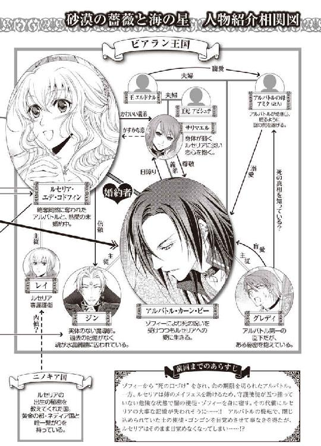
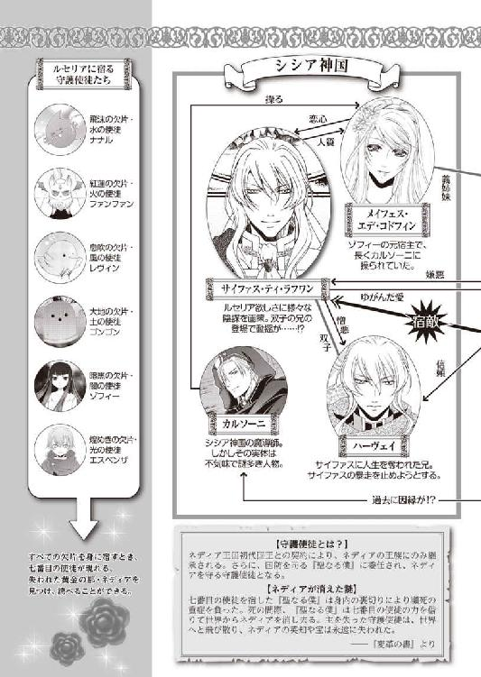
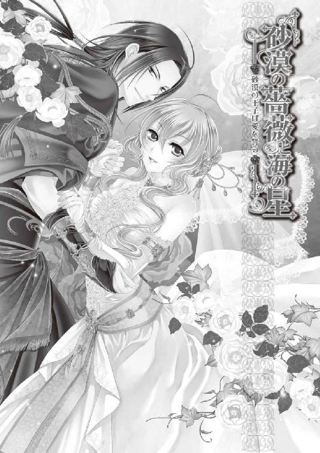
痛みがゆっくりと和らぎ、記憶が失われていく恐怖が消えていく。身体は水に浮かんでいるような浮遊感があって、そこは温かくも寒くもなかった。視界は水面を見上げているようにおぼろげで、景色や近づく人らしき輪郭もぼやけている。
目を閉じているはずなのにどうして周囲が見えているのか、ルセリアには説明できなかった。もしかすると使徒の誰かが見ているものを、自分のものとして捉えているのかもしれない。
アルバトルに話さなければ――。
何度もそんな思いが頭をよぎる。けれど何が大切なことだったのだろうか。
使徒たちの記憶が渦巻く中、ほんの一瞬、目にし耳にした。大変なことを知ってしまったと驚愕したが、知ったはずの記憶は手の中から砂がこぼれ落ちるように、消えていた。
アルバトルに大切なことを伝えなければいけなかったはず。なのに、それがどういう言葉だったのか、ルセリアにはもう思い出せなかった。
私......どうなったの......？
ルセリアは起き上がろうとしたが、指先を僅かに動かすこともままならない。
『ご主人様、抵抗しないで。今は眠らなくちゃ。うんうん』
新しくルセリアの中に宿った土の使徒・ゴンゴンはおっとりとした口調で語りかけてきた。
でも......私......。
『眠って、ご主人様。深く深く......どこまでも深く。それがご主人様の命を繋ぐよ。うんうん』
睡魔はまたルセリアを優しく包んで、何も聞こえない静かな場所へと沈めつつあった。
上下左右の感覚がない。自分は横たわっているのか、それとも立っているのか。
ふっとつま先が石畳に触れたような硬質さと、冷たさを感じた。ルセリアは暗闇の中、立っていることに気づく。けれど上下が正しく認識できているとも思えない。
背後から不意に何かが手に触れた。ルセリアが慌てて振り返ると、ゾフィーがそこに立っていた。彼女の輪郭は青白い燐光を放ち、闇に浮かび上がっている。こんなにも側にいるのに、今は不思議と恐怖を感じない。
ゾフィーは無言でルセリアに手を差し出す。まるでその手を取れとでも言っているようだ。
闇に浮かぶのは二人だけ。ゾフィーは手を差し出したまま、ルセリアを見つめるばかり。
......今度は何を企んでいるの？
ルセリアがゾフィーから距離を取ろうと後ろへ下がった瞬間、驚くべきことに青々とした草原が足下に広がった。海原を行く船が波をかき分ける音が驚くほど鮮明に聞こえる。今まで気にしたことのない音が、急に存在感を持って主張し始めたようだ。
その向こうに絶え間なく落ちていく砂時計の密かな音が混じっていて、アルバトルの焦燥感をかき立てる。
傍らで眠るルセリアの表情は苦痛を堪えるようなものではなかったが、かといって穏やかなものでもない。アルバトルの情熱をかき立てるルセリアの青い瞳は固く閉ざされ、ビアランの太陽に負けない輝きを持つ笑顔も今はない。
そっと彼女の額に触れると身体からはぬくもりが失われ、生きているのかと不安になるほど冷たい。すべては、義姉であるメイフェスを苦しめ死に至らしめようとしていた闇の使徒・ゾフィーを、準備の整わない身体でルセリアが身に宿した結果だ。
それでも土の使徒・ゴンゴンが、ルセリアをゾフィーから守ってくれているため眠りについた状態になっていた。
アルバトルは、僅かにルセリアの胸元が上下するのを目にして、安堵する。
ゴンゴンは姿を消す前に、ゾフィーの力が他に害を及ぼせないようにはできるが、このままでは弱っていくと話していた。この状態は長くは保たないだろう。いずれルセリアの命の火は消える。
小柄でほっそりした身体。およそ争いとは無縁の、愛し守られるべき女性の肩に、運命が重くのしかかっている。
僅かでも自らがその重りを肩代わりしてやれたらと心底望んでいるが、ゾフィーによって命の期限が切られた今のアルバトルに、どこまでのことができるのだろうか。
アルバトルはシシア神国を無事に脱出したときのことを思い出していた。
ルセリアが眠りについたその直後。
あのとき――。
地下の空洞にシシアの敵兵たちが入ってこないよう、出入り口はハーヴェイらによって破壊された。が、出入り口を塞ぐ岩や石を取り除こうとする音が外からずっと響いている。いずれ壁は破られ、今度こそ抵抗できない人数の兵士が雪崩込んでくるだろう。
アルバトルはルセリアを連れ、まずは安全な場所まで逃げることを考えていた。
サイファスは婚儀を理由に呼び寄せた各国の代表を、ゾフィーの力を借りて操り人形にした。それが当初の目的だろうから、シシアにとってサイファスとメイフェスの婚儀など、不要の行事となっているはず。
「王子、長居は危険です」
グレディの言葉にアルバトルは頷く。
見回すと敵の兵士は使徒たちの助けもありみな倒れていて、今、この場に立っているのはアルバトルの味方と、サイファスだけだった。
サイファスとハーヴェイは未だ剣を構えたまま距離を取り、膠着状態が続いていた。
二人は『二身同一の楔』という術を掛けられていて、どちらかが怪我を負うと、もう片方も同じ場所を負傷する。そのため互いを傷つけあうことができないのだ。それでもハーヴェイはサイファスを睨み付けたまま、剣を構えている。
「グレディ、サイファスを人質として連れていく」
外の状況がわからない今、この国から無事に脱出するのにサイファスの身柄を利用するほかない。アルバトルはそう判断したがグレディは難色を示した。
「ここに置いて行かれた方がよろしいのでは？」
「いや、奴は......」
「カルソーニ！」
ハーヴェイの声がする方へ顔を向けると、姿を消したはずのカルソーニがサイファスの傍らに立っているのが視界に飛び込んできた。
すぐさまハーヴェイが斬りかかろうとしたが、次の瞬間には剣を奪われ、後ろへと吹き飛ばされる。そんなハーヴェイを守るよう、彼の部下が剣を構えたが、カルソーニが手をかざしただけで動きが止まった。
「......ジン！」
アルバトルの声にジンは首を左右に振る。カルソーニと唯一魔術で対抗できるであろうジンには為す術がない。この場に強力な魔術防壁の紋章が刻まれており魔術が使えないからだ。
何か仕掛けてくるつもりかとルセリアを抱えたまま、もう片方の手を剣にかけたが、カルソーニはこちらへ視線を流しただけで、たちまちサイファスとともに姿を消した。
今はすぐにこの穴蔵から出なければ――。
二人が姿を消してから、追い立てられるような警笛が頭の中で鳴り響いている。
「グレディ！」
アルバトルが呼べばグレディは頷きながら声高らかに叫ぶ。
「......今から洞窟を抜けて海へと出る。みな、剣を収めて速やかに行動に移れ！」
「グレディ、メイフェスを」
「はい」
ルセリアを抱え岩棚から下りたアルバトルは、彼女が乗ってきた小舟に移動した。そのあとを追うようにグレディがメイフェスを抱き上げ乗り込んでくる。
見回すと、洞穴の端に数隻の船が浮かんでおり、ハーヴェイや味方の兵士たちはそれらを引き寄せて乗り込んでいた。
「お......おうおう。我が輩は海へ出る洞窟の出口を見つけてくる。すぐに戻ってくるぞ」
ジンはアルバトルの傍らを通り過ぎる際にそう告げると、暗い洞穴へと姿を消した。グレディは自らの上着を舟床に敷いてメイフェスを横たえ、櫂を手に取る。
「王子、少し揺れます。お気をつけください」
「ああ」
「ところで姫様は......」
ルセリアの様子を聞こうとしたグレディが言葉を発する前に、ジンが戻ってきて会話を遮った。
「アルバトル、このまま流れにそって進めば迷わず外へ出られるぞ。すぐ左手に港が見えておるから、上手くいけばビアランの船へ移動できる」
「外の状況はどうなっている？」
「港の方まではさすがに距離があってな。そこまでは確認できんよ」
「......王子、急ぎましょう」
アルバトルたちを乗せた船は暗い洞穴に差し込む出口の光に向かって進んでいた。頭上には尖った岩が無数にぶら下がっており、その鋭い先端はこちらを見下ろしているかのようだ。
敵に動きを気取られないようみなが息を潜める緊迫した状況の中、場違いにも思える生暖かい空気が漂っている。
レイやディナンたちはどうしているのだろうか。船に残してきた兵士や船員たちのことも心配だ。今頃、牢屋に囚われている可能性もある。けれど彼らの無事を確かめる術がない。
弓をぎりぎりまで引いたような張り詰めた空気が、アルバトルの額に汗を浮かせた。
誰も言葉を発しない。唇を引き結び、ただ外に出られるだろう光に向かって船を急がせる。何か口にしたとたん、頭上の岩が崩れてここが埋没するのではないかという恐れを抱いているのだろうか。いやもっと問題なのは、この洞穴を抜けたところでシシアの兵に囲まれる可能性があることだ。
サイファスはどう動く――!?
ルセリアが目覚めぬ今、守護使徒の力を頼ることはできない。が、魔術防壁の紋章から離れたジンの力が使えるようになる。
出口が近づくにつれ明るさが増し、黒く淀んでいた波が青い輝きを取り戻す。ゆっくりと小舟は洞窟を抜けたが、そこで目にしたのはシシアをあとにする無数の船の姿だった。
「......帆に描かれた国旗を見る限り、婚儀に訪れていた各国の代表者が帰国の途についているようですね」
「そのようだ」
「ゾフィーの力が抑えられた今、みな......正気に戻ったのでしょうか？」
「それはないだろう。今まだゾフィーの呪いが俺の身体の中にあることだけはわかる。他の者も同じはずだ」
ゾフィーの呪いを受けた後からずっとある、腹に冷たい石を詰め込まれたような不快感は未だ解消されていない。決して気のせいではない、指先の痺れも残っている。
「おうおうおう......これではゾフィーに操られた者たちが帰国をして何をしでかすのか、わかったものではないですなあ」
「ジン、何か予想できることはあるか？」
「我が輩にも奴らが何をしようとしているのかはわからんが、明るい未来があるようには思えんなあ。で、アルバトル、次はどうする？」
ジンの言葉にアルバトルは港をまっすぐに見つめながら告げた。
「......このまま港へ向かうしかないだろう」
「王子、また敵の懐に戻るようなものですよ。まず先発隊を出して船を奪還してここまで移動させてはいかがでしょう」
「それには人数が足りん......」
グレディの提案は容易に考えつくものだったが、仮に船が港で押さえられていたら、今の人数では難しいだろう。
サイファスがアルバトルたちをここで捕らえ殺すつもりでいるのなら、洞穴を出たところでシシアの兵に包囲されていたはず。けれど予想された敵兵の姿はなく、アルバトルたちは城の地下から無事脱出することができたのだ。
守護使徒の力に頼ることのできないアルバトルたちを、カルソーニの魔術なら一網打尽にできたかもしれない。なのに彼は何をすることもなくサイファスとともに姿を消した。そこにはアルバトルたちには予想もつかないなんらかの理由があり、あえてルセリアを捕らえることもしなかったと考えるのが自然だろう。
もっとも港に戻ってきたところを捕らえようとしている可能性もある。かといってこの小舟では大海に出ることもできない。シシアから脱出するには、やはり自国の船へ戻ることを優先しなくてはならないだろう。
「ジンの魔術で船へ直接移動できないのですか？」
「いやいやいや......。床に穴を開けるのと違って、この人数を移動させることは難しい。シシアの魔術防壁の影響もあってな」
「ならジンが先に船へと乗り込み、ここまで誘導してくれたらいいのですよ」
苛立ちを滲ませたグレディにジンは肩をすくめる。
「おう......。無茶を言わんでくれ、グレディ」
「いや、様子を見ながら港へ近づくぞ」
「では、王子はこちらに残ってお待ちください。まずは私がジンとともに港へまいります」
「お前たちが港へ向かっている間、襲われないという保証はない」
アルバトルの言葉にグレディは「確かにそうですが......」と言葉を濁す。
「ジン、カルソーニの魔術で邪魔をされることがあれば、お前がなぎ払え。できるな？」
「ええ、ええ、ええもう。できますとも。我が輩は偉大なる魔導師ですからな」
頼りになるのかならないのか、微妙なジンを横目に、アルバトルは告げた。
「我らはこのまま港へと向かう。剣はいつでも抜けるようにしておけ！」
多くの船がシシアの港から出て行く中、アルバトルたちの小舟は港へと向かった。
「王子、お身体の具合はいかがです？」
不意に掛けられたグレディの声に、アルバトルは我に返った。グレディは盆に載せた杯を傍らにある卓に載せる。
無事にシシアを脱出できた実感がまだ持てず、アルバトルは気がつくとあのときのことばかり思い出していた。そしてただ一つのことだけが頭から離れなくなるのだ。
一体誰の手の平で踊らされようとしているのか――と。
「どうかされましたか？」
「いや......」
「侍医から熱があると聞いておりますが、おかげんはいかがです？」
「気にするほどではない」
まだ何か言いたげではあったが、グレディはそれ以上追究することなく話題を変えてきた。
「姫様の様子はいかがです？」
「変わりない。メイフェスの方はどうだ？」
「時々、目を覚まされてはルセリア姫のことを聞かれます。心配なのでしょう」
「そうか」
メイフェスは乗船して数日、危険な状態が続いたが、侍医やエミールの献身的な看護で今は落ち着き、ようやく話せるまでに回復した。
けれど眠っている時間の方が長く、会話も続かない。また記憶も混在しており、アルバトルたちにとって有益な情報は今のところ何一つ得られていなかった。
今は無理をさせず、体力が回復するのを待つしかないのだろう。
「下がっていい」
「王子」
「なんだ？」
「絡まれるとイラッとしたものですが、ナナルの声や姿を見ない日が続くと、今度は逆に寂しく思いまして......王子はいかがです？」
「寂しくはないが、何か欠けている気はするな」
唐突に現れては驚かされてきた守護使徒だが、ふと気づくと彼らの姿を目で探していた。
そんな自分の行動を振り返るとき、いつの間にか彼らが日常の景色の中になくてはならない存在となっていたのだと、アルバトルは思い知る。
「では......失礼します」
グレディは微笑を浮かべながら部屋を出て行った。彼と入れ替わりにエミールが小さな桶に何枚もの手ぬぐいを載せてやってきた。
「アルバトル王子、ルセ様のお世話をさせていただいて、よろしいですか？」
「ああ。俺も手伝おう」
アルバトルがルセリアを抱きかかえようとすると、エミールが止める。
「えっ、いいえ」
「こういうときにこそ力を貸すのが夫となる者の務めだ。遠慮なく申せ」
ルセリアのためにできる限りのことをしてやりたい。アルバトルは心からそう願っていた。けれど侍女のエミールはあくまで自分の仕事を遂行しようとしている。
「これからルセ様の沐浴をさせていただきたいと思いますので、王子の手を煩わせることなく私がお世話いたします」
「だから手伝おうと言っている。俺が衣装を脱がせてやればいいのか？」
肩紐に手を掛けたアルバトルをエミールは両手で押さえ、目を見開いて首を左右に振る。
「エミール。なんだというんだ」
「あの......」
エミールは困惑したような、それでいて訴えるような目を向けてきた。けれど言葉にされなければアルバトルには何が問題になっているのか、理解できない。。
「はっきり言え」
「おっ......恐れながら申し上げます。もし私がルセ様のお立場でしたら......その......」
そこまで言ってエミールはまた沈黙し、目を伏せる。アルバトルが続きを待っても、エミールは視線だけ寄越して、口を開かない。
「だから、なんだ？」
「目が覚めたときに......愛する人に......見られてしまったことを知ったら......その......恥ずかしくて耐えられません」
顔を真っ赤にさせてようやくそう言ったエミールに、アルバトルは戸惑うばかりだ。
彼女にとってはそうかもしれないが、アルバトルはルセリアの素肌を何度となく目にしているし、触れてさえいる。問題はないはず。
「俺はルセリアのすべてを知っている。彼女とて俺に裸を見られたところで、恥ずかしがることなどないはずだ」
「たとえすべてを知る間柄の殿方であろうとも、このような状況で手を煩わせてしまったことを意識を取り戻したのちに知れば、しばらく愛する人を避けてしまいます」
エミールが必死に説明をしてくれるが、アルバトルには彼女の言う羞恥が理解できない。
意識を失っている婚約者の面倒を見て感謝されるのならわかるが、避けられる理由にどうしてなるのか。
「......うれしくないのか？」
エミールはほんの少し首を傾げ、ゆっくりと頭を上下に振った。女性からするとこういう行為はありがた迷惑になるようだ。
「もちろん......王子の深い愛情にルセ様はとても感謝されるはずです。ただ......その......」
「感謝はするが、恥ずかしいのだな」
「はい。とても......いえっ、出すぎたことでした......すみません。お忘れください」
エミールはアルバトルのことを考えたからこそ、こういう忠告をしてくれているのだ。本来侍女の立場で王子に意見することなどはばかられることを知っていても。
納得していないが、もともと女心が理解できないアルバトルだ。いつもルセリアの側にいて誰よりも彼女を理解しているだろうエミールの必死の訴えを無視するわけにはいかない。
「いや......わかった。沐浴のことはエミールに任せる」
「ありがとうございます！」
アルバトルはルセリアを抱えて沐浴部屋まで運ぶと、あとをすべてエミールに任せて戻った。
こういうときこそ侍女任せにするのではなく、自分が何かしてやりたいと考えたから手を貸そうと提案したのだが、それが適切かどうかはまた別の問題のようだ。
女心はやはりよくわからない。
アルバトルは卓に広げた海図を見下ろし、今船が向かっている場所を指でなぞる。情勢が不安定な中、ビアランに帰国せずにこの海原を彷徨っていいのか。
「......」
アルバトルは卓に腰を掛け、肩に掛かった髪を後ろへ撫でつけた。
触れると自分の肌が熱っぽいことに気づく。今のところ、行動に支障はないが、腹の底に冷たく沈んでいる塊はずっとそこにあって、アルバトルに不快感を与え続けている。
ゾフィーの力を押さえ込みはしたが、すでにかけられた呪いは解呪されないのだ。
それをアルバトルは港で目の当たりにした。
港の端に小舟を寄せてアルバトルたちは船着き場に上がった。
ハーヴェイとはそこでひとまず別れる。メイフェスは兵士二人に護衛をさせ、小舟に残した。
メイフェスは今もまだサイファスの婚約者である。そんな人間を連れて行動するのはシシアでは危険すぎた。
アルバトルの外套に頭から包んだルセリアを抱きかかえ、足早に自国の船へと向かう。
シシアの兵士も、港で働く人夫も、アルバトルたちに注意を払う者は誰一人としていない。
さすがに気味が悪いが、ゾフィーが彼らをも傀儡にしている可能性を考えると、それを利用させてもらえばいいのだ。
「......拍子抜けですね」
「ああ」
「シシアの気が変わらないうちに我が船に乗り込みましょう」
グレディがさらに足早に歩こうとするのを、アルバトルは制止した。
「......待て。あれは、オルディーン......か!?」
「そのようです」
向こうからやってきたアカリナ国の王・オルディーンは、取り巻きと兵士を従えていた。けれど遠目からでもわかるほど、彼の陽気な気配はない。親しい身内が亡くなったときでもこれほど陰鬱な顔はしないだろうというほど、オルディーンは別人に変化していた。
視線の定まらない目からは生気が失われ、いつもくだらないことを自慢している口は沈黙している。アルバトルの真横を通り過ぎるときもこちらを見ようともしなかった。いや、彼の目はこの世界を映していない。
ゾフィーによって今はサイファスの命令を聞くだけの操り人形にされている。帰国することで何をさせようとしているかだ。
けれどそれを問い質しても、すでに操られている人間からは何も聞き出せはしないだろう。
「彼はどういう駒にされているのでしょうか」
「......わからんが、今すぐ殺し合いをする気はないようだな」
操られていても自国の船はわかるのか、間違えることなく乗り込んでいく。そんな彼らから視線を戻すと、今度はサイファスがこちらにやってくるのが見えた。
驚くアルバトルたちの表情を満足げに見つめ、サイファスは何事もなかったような微笑を唇に浮かべている。虚ろな表情の兵士を両脇に従え、サイファスは、青と白を基調にした華やかな外套を羽織って、優雅に歩いてきた。やけに着込んでいるのは傷を隠すためなのか。
「王子......」
「アルバトル王子、海の散歩を楽しまれていたのですか？」
「ええ。サイファス王子もお見かけした気がしたのですが」
つい先ほどまで敵味方に分かれて戦っていたというのに、この変わり様にはさすがに驚かされる。何を企んでいるのかわからないが警戒を強めたほうがよさそうだ。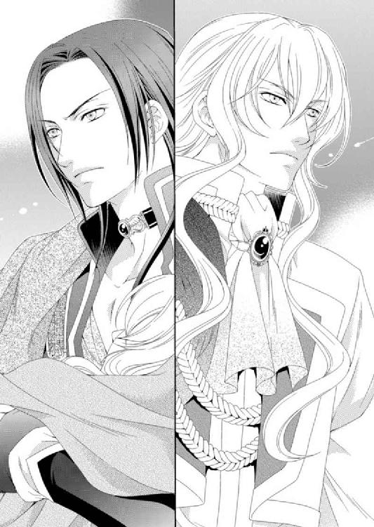
「見間違えたのでしょう」
「かもしれませんね」
乾いた笑いが響き、アルバトルは内心では腸が煮えくりかえるのを、ただ耐えた。
「そういえば、明日は婚儀のはず。しかしながら、みな帰国されているようですが」
「私の婚儀よりも重大な案件をお話ししたはずです。それについて国へ持ち帰り、協議されるのですよ。アルバトル王子もご存じなはず」
「......」
ああ、俺は知っている。だからなにを企んでいるんだ！
そう叫んで、この綺麗な顔を殴れば、少しは怒りも収まるはず。アルバトルはそんなことを考えつつも、ルセリアを抱える手に力を込めた。
「ところでアルバトル王子も帰国されるのですか？」
「そのつもりです」
サイファスはアルバトルが抱えているルセリアを覗き込むように少し前屈みになった。が、外套に包まれていてルセリアの顔が窺えないことに不満げに目を細める。
「姫の様子はいかがです？」
「お知らせする義務はありませんが」
「......そうですね」
聞こえるようなため息を一つつき、サイファスは続けた。
「アルバトル王子、心苦しいですが、今しばらく......ルセリア姫をお預けいたします」
「ルセリアをサイファス王子より預かったことなどありませんよ。ルセリアは我が后となる姫。婚儀を中止なされたことで混乱されているようですね」
「......混乱などしておりませんよ。王子とは違い、未来まで一本の道を見つめております。いずれそのことにアルバトル王子も気づかれるでしょう」
この男の頭には何かがわいている――。
そう思わずにはいられないほど、サイファスの歪んだ妄想は聞くに堪えない。
さっさとこの場から去りたいのだが、サイファスはまだ話があるようで、立ち塞がったまま、通を譲らない。
睨み合ったまま微動だにしなかったが、しばらくするとサイファスの方が道を譲るよう、右手に移動する。
「お気をつけて帰国の途につかれますよう、アルバトル王子」
「お気遣いありがとうございます、サイファス王子」
ようやくサイファスから解放されたアルバトルは、会釈しつつ、足早にその場を通り過ぎた。少し歩いて振り返ると、サイファスは誰もが魅了される笑みを浮かべていた。笑顔の裏にある腹黒さに腹を立てつつ背を向ける。
「......王子、レイやエミールを探している時間はありません」
「わかっている」
自国の船を前に、アルバトルは苦渋の決断を迫られていることに気づいた。ルセリアを守るために囚われた侍徒たちがどこにいるのかわからずじまいなのだ。けれどこのまま何もせずにシシアから出るのも躊躇われ、言葉を重ねた。
「だが、船になんの細工もされていないことを確認する必要はある。それまでの間、兵士たちに港の周辺を捜索するよう指示を出せ」
「......では、そのように」
グレディが一緒に戻ってきた兵士に命令を伝えていると、ジンが胸を張って言った。
「まずは肉体のない我が輩が安全を確認してこよう」
「珍しくいい判断だな、ジン」
「ではではでは、行ってくる」
ジンは船体を突き抜けるようにして姿を消す。肉体のないジンにとって船体などなんの障害にもならないのだろう。
ジンの報告を待っていると、先に国内の様子を確認したらしいハーヴェイが戻ってきた。
彼は人前では仮面をつけているため、シシアの王子と見間違えられることはないが、やはり物腰の優美さは隠すことができない。
「アルバトル王子、カリステロの船は出港したようです」
「それは心配ですね」
「いえ......エナミ様は会議も出席なさいませんでした。危険を察知しておられたようです。私のことは放っておいていただくよう先に話しておりましたから、早々に帰国されたことを聞いて、安心しております」
ハーヴェイは穏やかな口調でそう言い、一息ついて、続けた。
「そこでお願いですが、私をビアランの船に乗せていただけると助かるのですが......」
「もちろん、乗られるといい。傷の手当てをいたしましょう」
「感謝いたします」
彼を同行させるのはあまり気が進まなかったものの、だからといって今のシシアに置いていくわけにもいかない。
「おおおおお......おうおう、王子！」
戻ってきたジンが興奮した様子で大げさに両手を振っている。
「なんだ、どうした!?」
「レイやエミールたちは船の牢に押し込まれておったぞ。我が輩が牢から出してやった」
グレディも驚いたのか「どういうことなんです？」と急いている。
「他の兵士は事情を全く理解しておらんかった。何も知らずに自分の船の牢に閉じ込められながらアルバトルの帰りを待っておったわ。いや～よかったな」
「牢屋に仲間が捕らえられているのを我が国の兵士は知らなかったのですか？」
「いやいやいや。アルバトル王子の命令だとシシア側から聞いていたそうだ。そうなればみなも仲間であろうと閉じ込めるしかなかったのだろう」
シシア側からそういう命令が伝えられたら、とりあえず従うしかないだろう。確かめたくとも本来の主は不在だったのだから。ただ、何故そうしたのか奴らの動きが全く読めないため、混乱する。
「......ともかく無事なら問題ない。グレディ、乗船するぞ」
「はい」
グレディは戻ってきた兵士に今度は小舟に残してきた者とメイフェスを連れてくるよう指示を出す。するとハーヴェイまでも「手を貸そう」と彼らについていった。
アルバトルたちが桟橋から船に乗り込むと、牢から出て自由になったエミールやレイたちが駆け寄ってきた。エミールは笑顔で「ご無事でなによりです」と言ったが、アルバトルが外套に包んで抱えているルセリアを見つけて顔色を変えた。
「ルセ様はどうされたんですか!?」
「エミール、詳しい話は後だ。先に待医を呼びルセリアを休ませる準備を整えてくれ」
「かっ、かしこまりました」
慌てて船の中へ戻っていくエミールや出航準備に向かうグレディを見送ったところで、ハーヴェイがメイフェスを抱きかかえて戻ってきた。
「メイフェス姫のことは兵士にお任せいただいてかまいませんが......」
「これも弟の犯した罪の一つだと思うと、何かせずにはいられなかったのです」
後悔しなければならない男は笑い、兄は止められなかった罪悪感に苦しんでいる。そんなハーヴェイにアルバトルは同情していた。
「......ハーヴェイ殿、申し訳ないがメイフェス姫を船室へ。ああ、彼に案内させる」
アルバトルはレイを呼ぶと、ハーヴェイを案内するように伝える。彼らが船内に消えるのを見送ると、いまだルセリアを抱えたまま、アルバトルは港を見下ろした。
サイファス――。
いつからかはわからないが、サイファスがカルソーニとともに、こちらを見上げていた。
彼らが一番望む者はアルバトルの腕の中にいる。なぜルセリアを奪おうとせずにいるのか。
もしやアルバトルに光の使徒を探させようとしているのだろうか。
「おうおう、王子。帰国する前に寄らねばならん場所がある」
「どういうことだ？」
「今、我が輩の本体が目にしているものが見えてる。次に向かうべき場所がわかったぞ」
ジンが宙に視線を彷徨わせてぼんやりと、だが重大なことを口にした。
「本体が目にしている？ ビアランに残してきたジンのことか。何が見えている？」
「サリマエルが気づきおったんだが......『変革の書』の表が光っておるようだ。どうも姫さんが眠りに落ちた頃から光り始めたようだな」
「経緯は不要だ。向かうべき場所とはどこなのか、結論を言え」
アルバトルが苛立ちを抑えてジンに問うと、彼は「ちょっと待ってくれよ......」と言って、指先を下方に向けてくるくると回し、甲板の床に海図を浮かび上がらせた。
「これが海図だ。本体の我が輩が見ておる『変革の書』に浮かび上がった地図と光だが......。我が輩らはいまここ、示す光はここだ」
ジンが指し示す場所は、シシアから船で二日ほど西へ向かった先だった。けれど周囲に島は一つもない。
「海図には何もないが、何かがあるから光っているのだろう。もしやネディアの場所か？」
「我が輩にもそこがどこなのか、なんなのかはわからん。ただ、光ってるだけだからなぁ」
ジンは顎をせわしなく撫でながら、う～んとうなっている。
「だが『変革の書』はネディアのもの。その光がネディアの指し示す道かもしれないのなら、向かった方がいいだろう」
光の使徒を探さなくてはならないがその当てもなく、一度、ビアランに帰国するしかないかと考えていたところだ。そんな中、僅かでも関わりのある情報があるというのなら、それがたとえ不確定なものであっても、行くしかない。
「出航の用意が整いましたが、いかがいたしますか？」
戻ってきたグレディにアルバトルは床を指さした。
「ここだ」
アルバトルは出航の準備のために席を外していたグレディにジンからの情報を伝えた。グレディは今にもアルバトルの呪いが解呪されるとでもいうような高揚した表情になった。けれど、浮き足立ったような言葉は決して発しない。
「では、そのように伝えましょう」
グレディが去ると、アルバトルはルセリアを包んでいる外套を少しずらして額にかかる髪をそっと撫で、空を見上げた。頭上に青空はなく、深く垂れ込めた雲がどんよりと覆っている。今にも雨が降りだしそうな空模様だが、海原を渡る風は乾いていた。
地図にはない場所。そこにネディアがあればいいのだが――。
「アルバトル王子、ルセ様の沐浴を終えました」
エミールの声にアルバトルの意識は心の内から浮上する。アルバトルはルセリアを迎えに隣の部屋に入った。ルセリアは着替えをすませた姿で、マッサージ用の寝台に横たえられていた。
アルバトルは沐浴でぬくもった身体を抱き上げ、部屋へと戻ってルセリアを寝台にそっと横たえた。
白い肌がほんのりとピンク色に染まっていて、唇も薄く紅を差したように色づいている。
それでもせっかく湯で身体を温めたというのに、次第に肌から血の気が失われていく。
「香油を塗るのを手伝おう」
「はい。お願いします」
エミールが用意した香油を手に取り、アルバトルはルセリアの腕から手の先へ塗り込めた。
香油を塗ると血流がよくなるようで、冷え始めていたルセリアの身体がまたぬくもりを取り戻していく。
するとルセリアの閉じた唇も微笑んでいるかのように、口角が上がって見える。
「不思議だ......ルセリアが気持ち良さそうに見える」
「はい。王子に大切にされていることを喜んでいらっしゃるのだと思います」
「そうか......」
意識のないルセリアだが、もしかすると身体の機能が落ちているだけで、すべてを見ているかもしれない。
そう思うことで、ルセリアが無事に目覚める時がもうすぐ訪れるのだと、信じられる。
アルバトルはルセリアの指の一本一本まで丁寧に香油を塗り、少しでも彼女がぬくもりを得られるように、アルバトルの愛情が感じられるようにと願った。
「失礼します、王子。目的の場所らしい島が見えてきたのです......が」
グレディが船室に入ってくるなり言葉を濁した。アルバトルは首を傾げる。
「が？」
「......甲板にいらしてください。ご覧いただく方がよいかと」
アルバトルはルセリアをエミールに任せて船室から出ると、グレティとともに甲板へ向かった。そこでは兵士たちだけでなく船員もみな、船首の向こうに見える景色に釘付けになっていた。
確かに島らしきものが海原の真ん中に浮かんでいる。けれどその姿ははっきりと見えていたかと思うと、ぼんやりと霞んで消えるのだ。しばらく視線を外さずにいると、また島が忽然と現れて見る者を困惑させる。
「......あれは錯覚ではなく......本当にあそこに実在しているのか？」
「何かの魔術でしょうか」
「いやいやいや......違う。あれはまた......違うぞ。なんだこの感じは......」
肉体がないくせに、ジンは両手を胸元で交差させ、腕を何度もさすっている。そうすることでなにかを思い出そうとしているかのようだ。
「ジン、何が言いたい？」
「我が輩も初めての感覚なんだが......知っている感じもするんだよ」
「なんにせよ行けばわかる......か。だが、どうやって上陸すればいい」
島に向かったとしても、目の前で消えてしまっては、どうにもならない。かといってどうすればあの島へ立ち入ることができるのか。アルバトルが思案しているとグレディが言った。
「完全に姿を現したところで試しに飛び移ってみるしかなさそうですね」
「そのままグレディが海に落ちたら一興ですな」
空気を読まずにグレディをからかって笑うジンをジロリとひと睨みし、視線を島へと戻す。
陽炎のように揺らめいていた島は、近づくほどにゆっくりとその輪郭を鮮明にさせていく。今すぐ準備を整えなければ、上陸の機会を逃してしまうような予感がアルバトルにはあった。
「上陸の準備にかかれ」
答えの欠片があそこにある――。船をできる限り島へと近づけて停泊させてから小舟に乗り移り、アルバトルたちは島へ上陸することになった。もっとも、船にも警備が必要なため、信頼できるハーヴェイを残した。
ルセリアを同行させるかどうかアルバトルは最後まで悩んだが、もしあそこにネディアがあるとわかれば、連れに戻らなくてはならない。そういう二度手間を考えると、やはり同行させた方がいいだろうということになった。
無事に上陸できるかどうか心配だったが、不思議なことに小舟で近づくと、島は姿を揺らめかせることも、消えることもなくなった。まるで人がやってくることに気づき、彼らを迎え入れるために姿を現したかのようだ。
これも罠かもしれないという一抹の不安があったが、躊躇している場合ではない。
アルバトルたちは自然の船着き場のように海岸から出っ張っている岩棚に小舟を寄せて上陸した。鬱蒼と茂った木々が島を覆っていて、まるで菓子にたっぷり乳酪を載せたような形をしている。
海岸に漁師小屋や小舟がいくつも放置されているが、そこに人気はない。島の中腹あたりから小さな煙がいくつか立ち上っていた。そのあたりに住居があるのだろう。
「まずは民家を探そう」
ルセリアの移動には担架を使うことにした。二本の棒の間に布を渡した担架はグレディとレイが前後で持つ。
「では、我が輩が先頭を行くかな......」
ジンはいつでもグレディの身体を借りられるようにと、彼の前を歩いた。その後ろをアルバトルたちが続く。
海岸から島の中腹へ向かう舗装された道を見つけ、さらに進む。敷き詰められた石の間から小さな草が生えていたが、手入れがされていないほどではない。
しばらく石畳を歩いていると、行く手に少年が現れた。
「......そろそろ来る頃じゃないかと思っていた」
栗色の髪に小作りの顔で、頰はほんのり赤く染まっている。大きな目は長いまつげに彩られ、小さな唇には気品すら漂わせていた。幼い少年であるのに、やけに落ち着いている。
膝から下がむき出しのチュニックの上に、足下までの外套を羽織って、革靴を履いていた。
少年はみなを見渡して、にっこりと笑う。
「やあジン、久しぶりだ」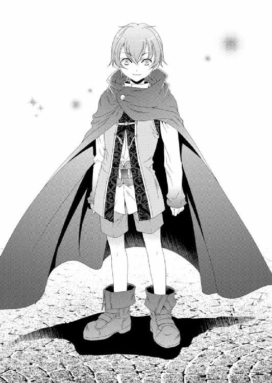
少年はにこやかに笑うが、ジンは驚いている。
「ジンの知り合いか」
「我が輩は......いや、会ったことがあるかもしれん」
ジンは少年をちらちらと見ては必死に記憶の中に彼の姿を探しているが、思い出せないようだった。
「そうだね。僕とジンは古い古い......知り合いだよ」
「なんとなく覚えがあるようなんだが......我が輩の記憶にはっきりとしたものがない」
「まあ、それも仕方ないかもしれないね」
少年とジンの関係はおいて、アルバトルはまず自分から名乗って手を差し出した。
「......俺の名はアルバトル・カーン・ビー。彼女は俺の婚約者でもあるルセリア・エデ・コドフィン。お前の名は？」
「僕はエスペンザ。よろしく」
「まさか......光の使徒......か」
「そうも呼ばれてる。あ、彼女が継承者だね。みんなが集まってるからわかる」
探していたエスペンザが目の前にいる事実に、アルバトルは我が目を疑った。
こんなにもあっさり見つかるとは思わなかったからだ。
差し出した手が小さな手によって握りしめられて我に返る。
エスペンザはアルバトルの手を離し、担架に乗せられていたルセリアのもとへと向かう。ルセリアを見下ろすエスペンザの表情はうれしそうだった。
「俺たちはお前を探していた。ルセリアを助けられるのは光の使徒・エスペンザだけだと聞いたからだ」
「ルセリア......。綺麗な名前だね」
「アルバトル王子は貴方の仲間である闇の使徒・ゾフィーに命の期限を切られる呪いをかけられております。どうにかそれを解呪してもらえませんか？」
グレディの言葉にエスペンザは困惑したように振り返る。
「待ってよ。僕が助けになると、誰に聞いたの？」
「ゾフィーを制御するには、他の五つの守護使徒が必要だと聞いているが、違うのか？」
「それは正しいよ。残りは僕一人。僕が継承者に宿れば、ゾフィーは継承者の身体をむしばむことはないからね。でも、ゾフィーの呪いはゾフィーもしくは七番目の使徒にしか解けないよ」
エスペンザの説明に、期待を抱いていた者すべてが落胆の色を隠せない。だがアルバトルにとっては自分のことよりもルセリアが優先だった。
「俺のことはいい。ルセリアを助けてくれ」
「今すぐは無理」
エスペンザがあまりにもあっさりと答えたので、アルバトルは怒りすら覚えた。
「なぜだ？」
「事情があって僕は今の宿主から他へ移ることができないってこと」
「どういうことだ？」
さらにエスペンザを問い詰めようとしていると、別の人間が笑顔でやってきた。
グレディと同じくらいの年の女性で、ややふっくらとした顔立ちをしている。髪は後ろでひとまとめにしていて、色味の少ないワンピースに前掛けをしていた。
「エスペンザ、お客様がいらしているの？」
「そう。彼らだから上陸できたんだ」
「正当な継承者がいらしたのね......」
新たに現れた女性はこちらのことをすべて理解しているようだった。けれど先ほど見せた笑顔はどこか悲しげなものに変化していた。
「そういうこと」
「初めまして、シェンナと申します」
シェンナが会釈すると、グレディがアルバトルから順番に、この場にいる者すべてを紹介した。エスペンザを探していたことも含め、ここへやってきた目的などを説明する。
グレディが話し終えると、シェンナは本題に入ることなく、手招きした。
「皆様お疲れでしょう。十分なおもてなしはできませんが、どうぞこちらへ」
シェンナについていくと、小さな集落に到着した。日干し煉瓦を積み上げた建物は、どれも似たような大きさだ。長の住まいだとわかる際だったものはない。ということは、この集落はみな同じような生活水準のようだ。
シェンナの家は集落の入り口にあり、長さの不揃いな柵が家の周りを囲み、庭には白や桃色の花が咲いている。木戸を開けて庭に入ると、家から四人の子供たちが駆け出してきた。
「ほら、お客様よ。ご挨拶なさい」
子供が通り過ぎる前にシェンナが言うとみな口々に「こんにちは～」と言いながら、走り去っていった。
「日暮れまでに帰ってくるのよ！」
すでに小さくなった子供たちの背にシェンナはそう叫び、続けて「お見苦しいところを見せて申し訳ありません。礼儀のなっていない子供たちばかりで」と肩をすくめた。
「......四人ともご自身のお子さんですか？」
「いいえ。実の子は二人です。他の子は亡くなった姉の子供なんです。大変ですけど、毎日楽しい日を過ごしてます」
そこまでグレディに説明し、思い出したように続ける。
「実は夫ももう亡くなっております。だから女手一つで四人を育てているんですよ」
「それはさぞかし大変だろう」
「慣れれば、そうでもないんですよ。では、そちらの女性にはこちらの部屋で休んでいただいて......他の方はお茶でもお淹れいたします」
アルバトルは家の前に兵士を配置した後、とりあえずルセリアをシェンナに促されるまま寝台に横たえた。エミールとレイにその場を任せて、アルバトルはグレディとともにシェンナのいる調理場と客間が一つになった部屋に戻った。
シェンナは来客がうれしいのか、湯を沸かして、茶の準備を楽しげにしている。その傍らにエスペンザがひっそり立っていた。ジンは窓のところに立って、エスペンザをじろじろと眺めてはうなっている。
アルバトルは椅子に腰掛けると、シェンナにも座るよう促した。
シェンナはその場にいる者に茶を配った後、ようやく自分も腰をおろす。
「話がある。貴方が宿しているエスペンザを正当な継承者に譲っていただきたい。その代わりに金貨でも宝石でも求めるだけ用意しよう」
「そのことですが......金貨も宝石も私には不要です。私はお金で買えないものをエスペンザから与えてもらっているためです」
「どういう意味だ？」
小さなため息をついてシェンナは口を開いた。
「私の命は本来もう尽きているのです。でも......エスペンザが私の中にいることで、生を引き延ばしてくれている。彼が私の中からいなくなったら、私は......死を迎えるでしょう。だから......無理なのです」
「......」
「あの子たちを残して、私は死ねません。それを望むことは身勝手かもしれないけど、せめてもう少し子供たちが大きくなるまでは......。本当に......ごめんなさい。たとえエスペンザの正当な継承者が現れたとしても、今は譲ることはできません」
シェンナが話した理由について、みなが沈黙して答えられずにいると、彼女の方からさらに話を続けた。
「......もっとも出入りは自由らしいから、エスペンザが決めたら......私は死ぬしかないのでしょうね。でも、あなた方は子供たちから私という母親を奪えますか？」
「ええ。そうしていただきたいですね。子供たちのことは心配されずとも、私たちが一生面倒を見ますよ。安心してください」
グレディは迷うことなくシェンナにそう言って微笑む。その傍らで沈黙していたエスペンザがアルバトルをじっと見つめ、ようやく口を開いた。
「この決断を下すのはシェンナじゃなくて、君だ。僕は継承者が選んだ伴侶だという君の決断に従うよ」
「......王子、ご決断を」
みなの視線を一斉に受けたアルバトルは、シェンナとそしてエスペンザを順番に眺め、最後にグレディを見た。
「グレディ、待て」
「......王子」
「結論を急ぐな」
アルバトルの言葉に、グレディが驚いて目を見開いたが、すぐに何も言わずに頷いた。
シェンナが夕食をごちそうするというので、アルバトルはルセリアを眠らせている部屋で、自分の決断がどんな影響を及ぼすかを考えていた。
「......ルセリア。俺が無理にあの女からエスペンザを取り戻すことで四人の子供たちから母を奪うようなら、迷うことなくそなたはエスペンザを拒否するだろうな」
だが、ルセリアにはエスペンザが必要だ。目覚めたルセリアにどれほど非難されようと、どんな目で見られようとかまわない。
なのにあの場ですぐ決断はできなかった。
「俺にも迷いがあるのか......」
眠るルセリアの表情は穏やかだが、今はなんの答えもアルバトルに与えてはくれない。
アルバトルにとってルセリアの命を救うためには、ここで迷うことなど許されないのだ。
「僕はどういう決断がなされようとかまわないよ」
寝台に腰を掛けルセリアの髪を撫でているアルバトルに、エスペンザがそう言った。
彼はいつの間にか戸口に立っていたのだ。
「守護使徒はその資格がある者には自由に出入りできるのだろう？ ならばなぜ自ら正当な継承者のもとへ向かわなかった？」
「ゾフィーと僕は継承者の許可は不要だけれど、他の守護使徒たちは許可......というか、継承者に受け入れる意思があって初めて相手に移動できる。もっとも使徒が目覚めていないとそれもできずにずっと眠ったままなこともあるけどね。そこらへんが結構いい加減なんだよ」
「守護使徒はなんのために存在するんだ？」
「変な質問をするんだね。じゃあ聞くけど、君はなんのために存在してるんだ？」
エスペンザには聞いたものの、逆に問われてみたら確かに答えられない質問だったことにアルバトルは気づく。
「ね、自分が答えられない質問なんてしないことだよ」
笑いながらエスペンザは自らも寝台に上り、ルセリアを挟んだ形でアルバトルの前に座った。
「彼女にはいつから宿っているんだ？」
「シェンナに宿って十七年か十八年かな。同じだけ命を長らえさせている」
「彼女に同情したのか？ 守護使徒にそういう感情があるのか？」
ゾフィーは論外だが、だからといって他の使徒に同情という感情があることを感じたことはなかったからだ。
普通の人間のような感覚をもつエスペンザにはいろいろと驚かされる。
「別に同情ってほどじゃないけど、まあ......多少はあるのかもね」
「ゾフィーにはそういう感情はなかった。エスペンザとは考え方が違うのか」
アルバトルの言葉にエスペンザは呆れたような表情を浮かべる。
「人間はどうしてこうも低脳なんだろう。君とゾフィーは違う。君と僕も違う。ゾフィーにどういう感情があろうとなかろうと、僕とは違う。僕はゾフィーではないからだ」
「......確かに、そうだ。だがエスペンザとゾフィーは、その他のナナルやファンファンとは明らかに違う。その違いはどこから来ているんだ？」
エスペンザが言わんとしていることは理解ができるが、そもそも人と同じ存在だとこちらは認識していないのだ。だからこういう質問をすることはそれほどおかしなことではないのだろうが、エスペンザは違うようだ。
「役目が違うだけだ」
「お前たちの役目は......なんだ？ 一つに集まることか？」
「まあ......そうといえばそうかな。僕自身もよくわからない。いろんな情報が規制された状態みたいだから。七番目の使徒が全部仕切ってくれると思うよ」
春の陽気な季節を楽しんでいるような笑みでエスペンザは答える。
「すべての守護使徒が集まると出現する七番目の使徒......か」
「そう。それが僕たちの目的」
「ならば目的を果たされたらいかがです？」
やや苛立っているような口調のグレディに、アルバトルは軽く右手を挙げて、首を左右に振る。けれど彼は気持ちが急いているようだった。
「王子、貴方はご自身の生い立ちに重ねていらっしゃるのではありませんか？ ですが今は姫様のことをお考えください」
「......わかっている」
「どちらの命をとるのか、決断するのは難しいけれど、それを決めるのは僕じゃないからね」
そう言ったエスペンザにグレディはさらに質問をする。
「守護使徒は主を守り主の言葉に従うのではないのですか？」
「従うよ。たいていはね。でも必ず......じゃない。僕とゾフィーには選択肢が与えられている」
ナナルやファンファンとはまるで違う個性に、アルバトルはエスペンザをどう扱っていいのかわからない。
「お前は何を考えて、選択するんだ？」
「情報が足りないからね。今問われても答えは出せないよ」
「おい、謎かけをしている余裕はない」
「あのさ、僕と話したところで君の答えが変わるとは思わないんだけどね」
「......」
最初からアルバトルは結論を出していた。誰に非難されようとシェンナの命は諦めてもらうしかない。たとえあの子供たちに一生恨まれたとしても。
そう結論を出しているのに、何かがアルバトルの心を引き留めている。
「......そうだな。ルセリアに出会う前の俺なら、あの女の命など気に掛けることもなかっただろう。子供たちのこともな」
「今は違う？」
「躊躇いが......ある。この弱さが腹立たしい」
「それは弱さじゃない。慈悲だよ。悪い感情じゃない」
どう見ても少年の姿のエスペンザに諭されると、妙な気分になる。彼は人間の寿命を遙かに超える存在なのだ。その年月に培われた知性は、人が得られないものなのだろう。
「この選択には正しい答えがあるのか？」
二人の命を救う手があるのか。あるならアルバトルはそちらを選びたい。
けれどエスペンザはあっさりとアルバトルの希望を切り捨てた。
「そんなのないよ。どんな選択であろうとそれは利己的でしかないからね」
「どちらも救う方法はないのか？」
「あるなら話してるよ。早く決めてよね」
エスペンザはそれだけを言うと、部屋から出て行った。代わりにシェンナがやってくる。
「話はまとまったのでしょうか？」
シェンナはそう言って部屋の隅にある椅子に腰を掛ける。
アルバトルは決意を込めて、シェンナに残酷な一言を告げようとしたが、先にグレディが口を開いた。
「お二人に聞いていただきたいお話があります」
「......なんだ？」
「どのような話をいたしましても、終わりまで聞いてください」
グレディの未だかつてない真剣な表情に、アルバトルは小さく頷いた。シェンナも居住まいを正し、グレディの話に耳を傾ける。
「王子の母君であらせられるアミタ様の死の真相をお話しするときがきたのだと、思います。それが私が王子に長年隠してきた秘密です」
「グレディ......どういう意味だ？」
「しばらく私の話を聞いてくださるはずですよ」
「......わかった」
グレディは言葉を整理するようにしばらく沈黙した後、話を続けた。
「アミタ様が時折未来を垣間見られるお力を持っていたことは王子もご存じだと思います。あるときからアミタ様は頻繁に同じ夢を見るようになり、深く悩んでいらっしゃいました。それは未来の王子の姿です」
遠い昔を懐かしむように、グレディの目はどこか切ない。けれどアルバトルの心臓はなぜか鼓動を速めている。
「王子は慈悲を知らぬ冷酷な青年へと成長されていたそうです。臣下だけでなく、民の心も離れ、その理由も理解できず、常に苛立つ日々を送られている。誰かを心から愛することもできずに、心は石のように固くなり、誰の忠告も耳に入らない。王子は孤独に苦しまれますが、それを打ち明ける相手でもある父王ですら自らが消し去っている。アミタ様は何度もそんな夢を見られたそうです。どうすればその未来を変えられるのか、何を行えば息子を孤独の世界から救い出すことができるのか」
グレディは何を話しているのだろうか。まだ幼いアルバトルの未来を、ただの夢を、どうして母やグレディが真剣に受け止めているのだろうか。
「私は、それはただの夢で本当に未来かどうかわからない。そうならないよう、アミタ様が愛をもってアルバトル王子に接し、また私もできる限りのお力添えをすると、アミタ様が悩み苦しまれるたびに申し上げました。が、アミタ様の苦しみは一向に消えることがありませんでした」
幼い頃の母をアルバトルはあまり覚えていない。
けれどいつも愛してくれていたことは覚えている。また時に厳しく接してくれた。
その母がアルバトルのことで苦しんでいたとは、思いも寄らない言葉だった。
「ある日、アミタ様はその未来を変えることのできる方法を夢で得られたと大変喜んでいらっしゃいました。私も胸を撫で下ろしたのですが、その方法に驚愕したのです」
グレディはそこで一息つき、すぐに言葉を続けた。
「アミタ様は自らの死がアルバトル王子の心を変えるきっかけになるとおっしゃったのです。むろん私は大反対いたしました。アミタ様が未来を夢見されることを理解してもなお、本当にそれが解決策なのかは、わからないことですし、信じたくありませんでした」
アルバトルの母は暗殺されたはず。ただそれを証明できなかっただけ。
なのにグレディの話を聞いていると、母の死は暗殺ではなかったと、言っている。
「私は......何度もアミタ様の決心を変えるよう説得いたしました。懇願もいたしました。けれどアミタ様のお気持ちは変わりませんでした」
「お前は......母の自殺に......手を......貸したというのか」
最後まで聞くと約束したが、アルバトルは思わずそう尋ねていた。頭に浮かんだ疑惑をすぐに否定して欲しかったのだ。けれどアルバトルの希望はすぐに打ち砕かれた。
「......はい」
グレディは静かにそう告げた。
アルバトルを守り続けてくれた忠実な臣下が、自分の母が自殺をするために手を貸した。
「アミタ様の求めに応じ、私は苦しまずに死ねる薬を調達いたしました。自殺と疑われてはいけなかったのです。暗殺をにおわすこと......それがアミタ様の望まれた死の形でした。それこそがアルバトル王子の心を成長させるものだと、信じていらっしゃいました」
「それが母の......死の......真相だというのか」
長い間、本当に長い間、アルバトルは母の死の真相を知りたいと願ってきた。
一体、誰が母を暗殺したのか。
「......はい」
「ただの夢のために母は死を選んだというのか!?」
「いいえ、アルバトル王子のために死を選ばれたのです」
暗殺者をいつか探し出しこの手で死の裁きを下すのだと、幼い頃に誓った。
なのに――。
「なぜそんな夢を信じるんだ。本当にそんな未来などくるかどうかわからないだろう。なぜだ、グレディ。どうしてお前まで母の告げた未来を信じたんだ。止める立場であったはずだろう。お前こそが母の盲信を正せたはずだろうが！」
「アミタ様は私以外の誰にも相談をされませんでしたが、誰であろうと止められはしなかったでしょう」
「グレディ！ お前は自分で何を告白しているのか、理解しているのか!? 一国の王が愛した女性を死なせたのだぞ！」
グレディは静かに頷いた。
けれど彼の目の奥には永遠に解放されない苦しみが横たわっているのが見えた。
「私がどれほど苦しんだのか、王子にはおわかりにならないでしょう。幼い頃からあの方に仕えて参りました。王子がお生まれになってからは、私がお二人を守るのだと心に誓いました。なのにアミタ様はご自身で死を望まれた。私はどうすればよかったのでしょう。あの方の足下に取りすがり、泣いて懇願してもなお、決心は揺るがなかった。どんなことをしても......です」
淡々と告白しているのに、グレディの言葉には驚くほどの力があった。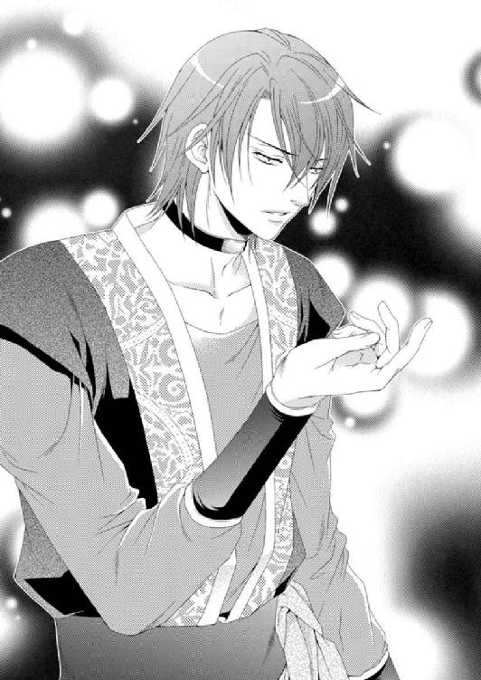
言葉の端々に彼の痛みが滲んでいる。その本当の痛みをアルバトルが知ることはできない。
「誰よりも気高く尊いお考えをもつアミタ様を私の知らぬところで失いたくはなかった。だから手を貸したのです。たとえどんなことであろうと、あの方の力になりたいと思ったからです。いえ、他の誰にも手出しされたくなかった......」
グレディの忠誠はどんなときにも揺るがなかった。けれど母のアミタを語るとき、忠誠以上の感情をアルバトルは感じていた。
それがどういうものなのか、今日まで知ることはなかった。
「できれば......お一人で逝かせたくはありませんでした。望めるのなら私も一緒に参りたかった。この世界からこの視界からアミタ様を失うなど、私にとって耐えがたいことだったからです。ですが......アミタ様から託された王子をお一人にはできなかった。アミタ様が危惧された未来が回避されたのか、誰かが見届けなくてはならなかったのです」
「......グレディ......お前......」
「アミタ様が誰よりも愛しその未来を危惧されていたのは、一人息子のアルバトル王子、あなたなのです。あなたの未来のために、あの方はお命を捨てたのです」
こんな理由を知りたくはなかった......けれどいつかはその真実にたどり着いただろう。
アルバトルはただ涙を堪えるしかできなかった。
「正直、私はアミタ様の死が本当にアルバトル王子を変えたのかどうか、わかりません。人がどう成長し変わっていくのかは、周囲の環境や出会う人々にもよりますから。でも......確かに王子はアミタ様の死によって悲しみの本質を理解されました。そしてルセリア様に出会い、あの方の優しさに触れて、共感されることに癒やしを得られました。それからルセリア様と再会し、王子は確実に人として成長されております。もしあのとき、アミタ様が決断されなかったら、アルバトル王子はルセリア姫には出会わなかったかもしれない。出会ったとしても生涯の伴侶だと気づかなかったかもしれない」
グレディにもわからないことを、アルバトルが判断できるわけなどない。
正しかったのか、そうでなかったのか。
ただこれだけはわかる。二人は信じたのだ。そうすることがアルバトルのためになるのだと。
「そもそも、王子が誰かを愛することができたのか......私にはわかりません。そんなことを考えてしまうほど、王子は普通のお子様とは違いました。幼いながらも王としての資質を備えておられたにもかかわらず、何か大切な感情が欠落していたのです。アミタ様はその欠けた何かを王子が得るにはどうすればいいのか、悩んでもいらっしゃいました。過去を振り返るとき、すべてはアミタ様の死を境に変化したのだと、あの方の死は間違ってはなかったのかもしれないと思えるようになりました」
アルバトルは今も覚えている。葬儀の準備の間、その亡骸を誰もまだ目にしていなかった頃。
グレディはひっそりと泣いていた。号泣するわけでもなく、僅かの声も上げず。
涙だけがいつまでも彼の目からこぼれ落ちていた。アルバトルはその彼の頰に手を伸ばし、悲しみが少しでも癒えるようにと願った。
「......もっとも、そう思うことで私はアミタ様の死に手を貸してしまった自分の罪悪感を和らげようとしているのかもしれません。王子がこのことで死をもって責任をとれとおっしゃられるのであれば、そういたします。王子はただ、私にご命令くださればいいのです」
「お前はずるい、グレディ。俺にとってお前がかけがえのない臣下になっている今、そんな命令など出せない。もしそれを理解したうえで、死ねと命令しろと言うのなら、残酷だ」
「アミタ様はいつかこのことを息子であるアルバトル王子に伝える日がくると私におっしゃっておりました。その日がどういうときに訪れるかはお話しくださいませんでしたが、その日がくると必ずわかるとだけ。私はゾフィーに出会い隠している秘密に気づかれたとき、王子に告白する日がもうすぐやってくるのだと確信いたしました。そしてこの場にきて気づいたのです。今日がその日だと。愛する者のために下す決断は、ときに身が引き裂かれるほどのものだと理解していただければ......私の長年の苦しみにもほんの少し救いが与えられます」
「......俺はシェンナの死を背負う覚悟でいる。いや、いずれ王となる俺がここで躊躇してはならないのだろう」
シェンナの命を奪うことに躊躇ったわけではない。残された子供たちと自分を重ね合わせて、彼らに同情したのだろう。
こんな気持ちは初めてのことだった。
「そのとおりです」
「......母は......躊躇わなかったのか？」
「はい。迷いは全く......」
「そうか......」
母の決断は正しかったのか、そうでなかったのかわからない。だが、すでに失われた命の責任を誰かにとらせる気は毛頭なかった。
母は自らの決断を信じて命を絶った。その決断に誰かが異を唱えることなど、できはしないのだろう。
「王子......」
「グレディ、お前が母の死に関与していたことを知っても、俺はお前に死ねとは言えない」
母は儚げなところがあったが、芯の強い女性だったと聞く。そんなアミタの訴えを当時誰が断れただろう。
「ありがとうございます」
「だが、他の誰にも話すな。特に父には。事情を知っても父はお前を許さないだろう」
「心得ました。貴方も私の話を最後まで聞いていただけましたか？」
突然、グレディはアルバトルから視線を外し、部屋の隅に座るシェンナを見据えた。
今までとは違い、彼は怒りを瞳に宿している。
「ええ」
「ならば、おわかりですね。王子の母であるアミタ様は母親として、息子のために自らの命を犠牲にされました。貴方はどうなのです、シェンナ。母として子供たちの未来が守護使徒にかかっているというのに、生き長らえたことを感謝することなく、すでに期限の切れた生にしがみつく貴方が私には醜悪でしかない！」
そのグレディの口調はまるで吐き捨てるかのごとく、嫌悪に満ちていた。
アミタとはまるで違うシェンナの生き方を、どうしてもグレディは認められないのだろう。
「グレディ」
「どうして王子一人が決断せねばならないのです。まるで死の責任をすべて王子に押しつけようとしているようだ。そんなことは私が許さない......」
シェンナは悲しげに微笑み、大きく深呼吸を一つして、言った。
「......貴方の臣下は辛い決断を私に迫るんですね」
「事実を申し上げただけですよ」
グレディはいつもどおりどこか皮肉めいた微笑を浮かべている。
「そうですね......」
「グレディが何を言おうと、そのことでお前がどれほど後悔しようと、守護使徒を正当な主に返してもらう。お前が死ぬことになってもな」
グレディの気持ちは理解したが、自分が決断する責任を。相手にも負わせる気はない。
自分の決断でシェンナは命を失う。その重さを受け入れるつもりだった。
「わかりました......エスペンザを正当な継承者にお返しします。もう十分生き長らえてきたのですもの。そろそろ終わりを受け入れるときなのよね。でもこれだけは約束して欲しいんです」
「子供のことか？」
「はい。子供たちのことをお願いします。そしてもう一つ、私が死ぬまでの間、貴方たちにも側にいて欲しいんです。だって決心していても死を迎えるのは怖いものだから」
シェンナはそう言いつつ、ルセリアが横たわる寝台に上って、自らも隣に身体を横たえた。
仰向けになって誰に視線を合わせることなく、彼女は天井をまっすぐ見つめている。
「いいだろう......。おい、子供たちに別れは必要ないのか？」
「はい。大丈夫です。伝えたいことは遠い昔に話してあります」
シェンナがフウッと息を吐き出すと、横たわる二人の間にエスペンザが唐突に姿を現した。
エスペンザはまず、寝台に腰を下ろしているアルバトルに視線を向けた。
「決めたのか？」
「ああ」
次にシェンナの方を見下ろす。
「シェンナ？」
「ええ......決めたわ」
シェンナは目を閉じると、アルバトルとグレディの手を握った。その手はとても温かい。
今から自分がこの女性の命を奪うのだ。すでに命の期限は尽きていたとしても、四人の子供から母を奪う。ルセリアの命を救うために。守護使徒を一つにするために。
グレディがどれほどアルバトルの気持ちを和らげようとしてくれようと、この利己的な正義は、決して褒められることではない。
シェンナはゆっくり深呼吸を繰り返す。これから訪れる死を受け入れるために、精いっぱいの勇気を振り絞ろうとしているのだ。
静かだ――。
「エスペンザ、行って......」
囁くようにシェンナが言うと、彼女のみぞおちから拳大の光が現れた。光はシェンナの周りを二度巡ると、隣に横たわるルセリアのみぞおちに飛び込んだ。
シェンナはぴくりとも動かなかった。ただ、握りしめられていた彼女の手から力が抜け、ゆっくりと温もりが消えていく。
「......王子」
「あ......ああ」
シェンナの肉体は体温が失われていくだけでなく、見る間にひからびていき、あっという間に砂と化した。その亡骸の痕跡すら、ゆっくりと空気に溶けていき、最後には彼女が横たわっていたことを示す、くぼみだけが残された。
「どうなって......る？」
「わかりませんが......すでに肉体は朽ちていたのかもしれません。それすらエスペンザの力で生かしていたのかも」
「......ああ」
死は決してシェンナを苦しめなかった。アルバトルにはそれだけが救いだった。
「ルセリア......光の使徒は、そなたの中に入ったぞ」
眠るルセリアの額をそろりと撫でて、アルバトルは彼女の様子を窺った。けれどすぐにでも目覚めるものとばかり期待していたが、ルセリアにはなんの変化も見られない。
「どういうことなんだ？」
そっとルセリアの肩を揺らしてみても、まぶたを動かすこともない。ルセリアはずっとそうしていたように、眠っている。
困惑しているところに、レイがさらに不可解な表情をして入ってきた。
「王子、子供が消えました」
「レイ、何を言ってる？」
「先ほどまで調理場にいて夕食を待っていたのですが......突然かき消えてしまったのです」
レイの背後にいるエミールも両手を上下に振って興奮気味にそう伝える。ジンはさらにその後ろにいて手の平を天井に向けて「我が輩にも謎だ」と呟いた。
「一体......どういう......」
説明を求めようとしても、エスペンザはすでにルセリアの中に入ったため、問うこともできない。そのルセリアは相変わらず眠ったままで、目を覚ます気配がない。
「王子......どうなっているのでしょう」
「ここでの生活は、すべてがシェンナの夢だったのかもしれん......」
いつ、どういう理由から、シェンナの命が失われそうになり、エスペンザが生かしたのか。
子供たちはなぜ幻だったのか。それを知ることに意味はあるのか。
「長居は無用か。船へ戻るぞ」
「そうですね」
シェンナや子供たちが幻だったというのなら、どこまで幻なのかわからない。しかもそれは、最終的にこの島まで消える可能性を示唆している。
アルバトルたちは準備を整えすぐさまシェンナの家を後にした。他にもある住居から相変わらず煙は上っているが、人の姿はない。この島の謎や、住民不在の理由をアルバトルは求めるつもりはなかった。
アルバトルたちは足早に来た道を戻る。そろそろ日が暮れる頃で、足下がまだ明るいうちに船へ到着したかった――のだが。
海岸に出ると、四隻の船艦が自分たちの船を取り囲んでいるのが見えた。その船にアルバトルは見覚えがあった。
「あれは......シシアの戦艦」
「私たちの船は囲まれているようですね。どうします？」
アルバトルはルセリアを横たえている担架を振り返る。
「ルセリアの様子は？」
「変わりありません」
「今、俺たちが戦いを挑んだところで、あの戦艦を相手にはできん」
降伏の文字がアルバトルの脳裏をよぎった。
サイファスはアルバトルに守護使徒たちを集めさせ、目的が達成された今、ルセリアを奪うつもりだったのだ。それは予想されたことだったが、こんなにも動きが速いとは思わなかった。
ルセリアが目覚めてくれたら――。
未だ目覚める気配すらなく横たわっているルセリアに、アルバトルは焦りを感じていた。
「王子......」
「ルセリアは渡せない......。だが」
どうすればいい――。
アルバトルが必死に手を考えていると、ジンがいきなりうなり声を上げた。
「......おお......おお......我が輩は......」
「ジン、どうした？」
先頭に立っていたジンが振り返り、唇を震わせている。その表情は青ざめていた。
「思い出した......ずっともやもやしていたものが......一気に戻ってきよった」
「何を思い出したんです？」
グレディが問うのとほぼ同時に、エミールが声を上げた。
「王子、ルセ様が！」
「目を覚ましたのか」
アルバトルは担架に駆け寄った。ルセリアはうっすらと目を開けていたが、状況がわからないのか、どこかぼんやりとアルバトルを見上げている。
「ルセリア......俺だ」
ルセリアの手を握りしめたアルバトルは、再び目にすることができた彼女の青い瞳に見入っていた。
だがそんな甘い雰囲気もジンの絶叫に近い叫び声にかき消されてしまった。
「いかん、いかん、いかん！ 守護使徒を一つにしては......いかん！」
「ジン、いきなり何を言いだすんだ......」
ジンはゆるやかにアルバトルのもとへやってくると、恐ろしいものを見るような目でルセリアを見下ろした。
「我が輩は......はるか昔......この手で......」
「その手で......何をした？」
自分の両手の平を見下ろしながら、まるでそこに何かがあるような目で、ジンは告げた。
「愛する者を殺した」
ジン――!?
ジンに気を取られている間に、ルセリアのため息にも似た声が聞こえ、アルバトルは我に返る。
「......ん......」
「ルセリア、俺だ、わかるか？」
ルセリアは眺め下ろすアルバトルに対し、初めて彼を目にしたような表情を浮かべていた。
さらにアルバトルが声をかけようとすると、彼女はアルバトルの支えを払い、自分で身体を起こして口を開いた。
「我が名はリスティア。七番目の使徒。一人であり、大勢でもある」
感情がまるでないどころか棒読みにも聞こえる口調で、七番目の使徒は自らを『リスティア』と名乗った。
「......リスティア？ 七番目の使徒......六つの使徒の集合体か!?」
「それは正しくもあり、正しくもない」
リスティアと告げたルセリアの身体を支配した七番目の使徒は、冷えた眼差しを向けつつ言葉を重ねた。
「知らぬ顔ばかりだな」
リスティアはそこにいる者すべての顔を確かめるよう、ゆっくりと見回し、ジンのもとで目を留めた。
「そこにいるのは裏切り者のジンか」
「我が輩は......裏切り者ではないっ！ お前が裏切ったのだ！」
ジンの怒鳴り声は、忌まわしい者に対しての嫌悪が込められていた。
「なんとでも言えばいい。私は行く」
「どこへ行くつもりだ？」
「すぐ近くに来ているのがわかる......」
リスティアは顎を少し上げ、まるで心地のいいそよ風に包まれ、まどろんでいるかのように目を細める。
アルバトルはリスティアに問いただした。
「迎え？ 誰のことを言ってるんだ？」
「カルソーニ。私を愛してくれた人」
リスティアは微笑むこともなく、アルバトルたちに真顔でそう告げた。ルセリアはゾフィーとともになだらかな道を歩いて丘を登っていた。歩くたびにみずみずしい草木がふくらはぎにはらりと触れてくすぐったい。太陽は穏やかなぬくもりで地上を覆い、抜けるような青空が目にまぶしい。
あれほど危険を感じていたゾフィーに、今はまるで長年の友達のような繋がりを感じている。
「どこまで行くの？」
「もうすぐだ」
丘の頂上まで来ると、眼下に見たことのない美しい建物が並ぶ街が広がっていた。
森の中に突然現れた都市。森林地帯のど真ん中を、誰が最初に切り開いたのかわからないが、この場所に住もうと考えた人間は、よほど傷ついた者か、もしくはとても変わり者だったのかもしれない。
そんなことを想像してしまうほど、周囲に他の街は見当たらなかった。
切り開かれた土地に、弧を描くように小さな建物が整然と並んでいて、隙間に葉をたっぷり茂らせた木が植わっている。美しい自然に囲まれた街並みは、ここから人々の様子は窺えないものの、生命に満ちていた。
そのほぼ中心、一段高い位置に優美な城が建っていた。台形状でどこも角がなく丸みを帯びていて、鋭角な部分がない。滑らかに見える城壁には不思議なことに窓が見当たらなかった。
さらにその中心には、真っ白な塔が天を仰ぐように建っている。それは太陽の光に反射して、まぶしいほどに輝いていた。
「あれがかつてのネディアだ」
「あれが......ネディア......なんて綺麗な都市なの」
ルセリアは太陽の光に輝く街並みを眺めていたが、ネディアを取り囲む森林の間から、黒い煙が立ち上っているのが見えた。それらは一箇所だけではなく、あちこちから上がって、青空を煙らせている。
「煙が上がっているわ。何かあったの？」
「戦争中だ、よく見るといい」
「戦争......？」
ゾフィーに促されて目を凝らすと、森林の間にたくさんの兵士の姿が見え隠れしていた。
彼らは火のついた矢や投石機から巨大な石を投げている。けれどすべての攻撃はネディアの敷地に入る前に、空中でかき消えていた。
その理由はルセリアにもわかる。守護使徒がネディアを守っているのだ。
「力を欲する馬鹿な王が他国を抱き込み徒党を組んでネディアに侵攻した」
「いつのことなの？」
「遠い遠い昔。我らが一つだった頃の話だ」
ゾフィーは目を細め、なんの感情もない口調でそう告げた。
「じゃあ、これは......ゾフィー、貴方の記憶なのね」
「いや、違う。この記憶はリスティアとキイナのもの」
初めて耳にする名にルセリアは首を傾げる。
「二人は誰なの？」
「リスティアは七番目の使徒。キイナは王から守護使徒を任された『聖なる僕』だ」
「聖なる僕？ じゃあ、キイナは代理の主なのね」
「そうだ。権限は限られているが」
権限が限られている――。
そう告げたゾフィーの表情は言葉以上に何かを言い含めているようだった。
ルセリアが問おうとする前にゾフィーは言葉を重ねる。
「ネディアで本当は何があったのか、キイナの記憶をたどるといい。そうすれば、この世界で何をすべきなのか理解できるはず」
ゾフィーが言い終えると、目の前に目鼻立ちのはっきりとした少女の姿が現れた。
肩までの長さの髪は薄茶色で、瞳はえんじ色。どこか儚げにも見えるその少女の目には、揺るぎのない信念が宿っている。
「キイナ......？」
ルセリアが独り言のように呟くと、キイナは微笑みながらまっすぐこちらへやってきた。ぶつかってしまうと後じさろうとするのと同時にキイナの身体がルセリアに重なる。
以前、似たような体験をした。ファンファンのもと主、メニエの記憶を体験したときと同じ。
彼女の記憶が押し寄せる洪水のように流れ込んできた。
私がネディアの守護使徒の『聖なる僕』に選ばれたのは十歳になったばかりの頃。
それがどういう意味を持つのか、そのときは理解できなかったけれど、両親は光栄なことだととても喜んだ。
私、将来何になりたいとかそういう夢は特になかったの。あるとすれば可愛い花嫁になるという、女の子なら誰もが思い描く未来は持っていたけれどね。
でも私一人が選ばれたわけではなかったの。
候補は男女合わせて十人いて、一ヶ月経つごとに一人、また一人と脱落していった。
守護使徒を宿すには資質だけでなく、バランスのとれた精神も必要だったから。
もっとも私が残っていたのは自分でも不思議だったの。
とりたてて人より立派だとか、優れた知性とか、そんなものは何一つなかった。
私は本当に普通の女の子だったし、特別な何かを持っていたわけではなかったから。
正式に『聖なる僕』に選ばれたのは十二歳の頃。王から守護使徒を預かり、私は彼らの主として、ネディアの中心にひときわ輝く塔の最上階に住むことになったわ。
守護使徒たちは普段は六つの存在で私の側にいつもいてくれた。彼らは必要なときに一つになり、七番目の使徒・リスティアになるの。
守護使徒は一つずつ時間をかけて私に宿っていった。一度にすべてを宿すことは身体に負担がかかるからだって聞いたわ。半年をかけて六つの使徒を身体に宿し、そこから七日間をかけてリスティアが安定した状態で出現するようになるの。
私もよくわからないのだけれど、六つの使徒が一つに結びつくのに少し時間がかかるみたい。
守護使徒の力をすべて同時に扱うには、一つの形にしなくてはならないから。
守護使徒たちをリスティアとして安定して出現させるには、正当な継承者である王族の主であっても訓練が必要なの。必要なときに守護使徒をリスティアとして出現させても、不安定だとその繋がりは解けてしまう。
日常の問題なら個別の守護使徒でも彼らの力だけで十分だけど、それ以上の力を求めるとき、守護使徒のすべての力を一つとして使えるリスティアが必要だったから。
リスティアが力を使うときは、私の身体を乗っ取る形になる。その間、私もリスティアと同じものを見て聞いているけれど身体はリスティアが支配している......そんな感じかしら。
けれどリスティアが必要とされることはほとんどなかったから、月に一度リスティアになる日を除いて、私は六つの使徒たちと穏やかに暮らしていたわ。
晴れの日が続けば作物が枯れる前にナナルを使って雨を降らせ、雨が続けばレヴィンを使って雲を消す。寒い日が続いて薪が足りなくなれば、ファンファンに火を起こさせる。川が氾濫しそうになったらゴンゴンに高い堤防を作らせた。
守護使徒たちはそんなふうに長い間、ネディアの民の生活を守ってきたの。
強大な力は人々の幸せのために使われるべきもので、それこそが守護使徒を宿す者がまず最初に教えられることだった。
もっともネディアに代々伝えられるそれら高尚な教えを、すべて理解はできなかったけれど、私なりに理解したつもり。
両親や友達から離れて暮らすのは最初は辛かったけど、塔の上には庭もあったし、小さな川もあった。動物を飼うことも許されていたし、なにより人々の生活を守るという強い使命感が私を孤独から救ってくれた。
でも長く続く平和の中で、守護使徒を使役することはほとんどなくて、次第に私は寂しさを募らせていったの。
そんな中、出会った。愛する人に。
ジン・ジェルドベリック・ディ・ジョイナス。
ネディアの神官であり、魔導師でもある彼はいつも私を気遣ってくれていた。くだらない話だけでなく、両親に会えない寂しい愚痴も、友達のいない悩みも聞いてくれたわ。
もっともネディアの神官たちは『聖なる僕』を守る役目を負っていたから、彼らがみな義務から私の面倒を見てくれるのはわかっていた。
けれどジンは最初から違ったのよ。
彼の陽気さに寂しい気持ちは癒やされ、誠実さに心を温めた。ジンはいつも私を大切に扱い、特別な好意とわかる情熱的な目を向けてきたのに、自分からは何も言ってくれなかった。
私は自分の気持ちは理解していたけれど、どう伝えていいのか、何をしていいのかわからなくて、ナナルに相談したらジンを水攻めにするし、ファンファンはそれを乾かそうとして逆に服を燃やしそうになって、みんな大変だったの。
私がどれほど、ジンが大切だと話しても、ジンだけを特別扱いしても、ジンのような恋人が欲しいと思いきって口にしても、彼は全く私の気持ちに気づいてくれなかったのよ。
だから私からジンに告白したの。大好き、愛してるって。
ようやくジンも私の気持ちに応えてくれた。
それから私たちはいつも一緒にいて、ささやかに愛を温めていたの。
彼がいてくれるから、私は孤独な塔での生活に、なんとか心の均衡を保っていられた。ジンだけが私を正気に繋ぎ止めてくれていた。
でもそういう生活は永遠ではないの。
本来の主ではない者が長くすべての守護使徒を宿すことはできなくて、『聖なる僕』の役目は二十歳で終わる決まりになっていたの。だから私、役目を終えたらジンと一緒になる約束をしたわ。その日が無事に訪れることを、疑いもしなかった。
あるとき、新しい神官がやってきたの。ジンとは違う、物静かで心優しい人。会った瞬間に、彼が心に深い傷を負っていることに気づいたけれど、聞かなかった。
カルソーニ・ス・バルディア。
彼はジンとは何もかも真逆だった。隙がなく手際がいい。決して饒舌ではなかったけれど、彼との会話はいつも興味深かったわ。
カルソーニは気がつけばいつも私の傍らに佇んでいるような人だった。
自分の心の内を決して語らない。けれど傷ついた者だけが持つ優しさを、備えた人だった。
ジンはカルソーニが私の側にいることを快く思っていなかった。彼が私を愛していると誤解したのね。
カルソーニが愛したのは私ではなくて、私の中にいる七番目の使徒・リスティアだった。
だから彼は月に一度、守護使徒が一つになる日を楽しみにしていた。身体を共有していてもリスティアの気持ちを私は感じることができなかったけれど、彼女が他の誰よりもカルソーニと一緒にいて話していたことは確かだったから。
でも、二人が一緒に過ごせるのは月に一日だけのこと。
私はカルソーニとリスティアのことを見守ることしかできなかった。
リスティアに問うことはできなかったの。尋ねてはいけないような気がしたから。
いいえ、身体を共有している私はリスティアが怖かったのかもしれない。
彼女にすべてを奪われるような気がして。この身体も心もすべて。
もしも、リスティアの心を拒絶するのではなくて、互いの心を繋げ合っていたら、あの日は訪れなかったのかもしれない。
毎日、平穏な日が続くと信じていたあの日。
『聖なる僕』の役目も残すところあと一年という頃、戦争が始まった。
ネディアには黄金がある。守護使徒という強大な力がある。それらを欲した一人の王が、他国の王を抱き込んで、ネディアに侵攻しようとしたの。
ネディアには守護使徒はいるけれど、黄金なんて宝はなかったわ。作物が豊かに実る肥沃な大地はあったけれど、宝石なんてなかった。
それを王がどれほど説明しても他国の王は誰一人として信じなかったの。
そして宝がないというのなら、強大な力を持つ守護使徒をみなで共有させろと詰め寄ったわ。けれど守護使徒はネディアの王と契約していて、他の誰とも契約はできない。
誰がどれほど望もうと、守護使徒の主にはなれないの。他国の王はそんな基本的なことすら理解しようとしなかったわ。ただ、嫉妬し、欲し、奪うことしか考えなかった。
だいたい力で力を奪おうとする人たちが、平和に守護使徒を扱えるわけなどない。
私は戦争が始まってからというものずっとリスティアとともに、ネディアを守っていたわ。
王の指示は、他国の兵士をネディアに近づけさせないようにすることだった。
たとえネディアに侵攻してきた兵士であっても命を奪ってはならないときつく言われていたの。けれどいつまでも戦争は終わらなかった。
ネディアの王妃は戦争をしている王たちの中の一人、イルディーナ王の末娘だった。
戦争に心を痛めた王妃は、自ら父を説得すると言い、王が引き留めるもののネディアを出て、故郷へと向かったわ。
しばらくして王妃の亡骸がお付きの兵士の死体とともに送り返されてきたの。
王妃を失った王の嘆きは深く、ネディアの民はみな悲しみに包まれた。けれどその悲しみを本当に理解できたのは王と心を繋げることのできるリスティアだけだった。
不意に自分と重なっていたキイナが離れた。気がつくとルセリアは冷たい床に立っていた。
周囲は暗くて部屋の全貌はわからない。見上げると視線の先にぼんやりと発光している場所があり、闇の中でそこだけが切り取られたように明かりに浮かび上がっている。
近づくと明かりの下に銀色に輝く棺が置かれていて、初老の男性が傍らに座り込んでいた。
ルセリアはそれが誰なのかすぐに気づいた。
あれがネディアの王――。
『こんなことになるとは......。話し合おうとしただけの娘をどうして手に掛けることができるのだ。なにより、彼女は無力だったというのに......ただ平和を望んだだけなのに......。私のせいだ。なぜ行かせてしまったのだ......』
王は顔を両手で覆い、誰ともなしにそう呟いて、上半身を絶え間なく前後に揺らしている。
王と呼ばれているのに、彼の服装はとても質素だった。
織物は仕立てのいいものだとはわかるが、金糸や銀糸の刺繡が施されているものではなく、また彼自身宝石や金などで作られた装飾品も身につけてはいなかった。
『私の大切な王妃......頼む......エスペンザ、彼女を私に返してくれ......』
王は悲しみにとらわれたままの、恐ろしく暗い顔で闇に手を伸ばす。すると闇から一歩、明るい中へとエスペンザが姿を現した。
『消えてしまった命を戻すことは僕にもできないよ。消えてしまう前なら......なんとかできたけれどね』
『なぜ......みなと共存できないのだ。お互いを理解し、平和に暮らせないのだ。我らは決して力を誇示したことはない。ただそこにあるだけだ。守護使徒は戦争の道具ではない。また個人の利益のために存在するのではない。我らは守護使徒を理解して、共存しているだけ』
王はエスペンザに背を向けると、棺に手を置いて唇を嚙んだ。
彼の心から、まるでナイフで切り刻まれたような痛みにも似た、悲痛な叫びが聞こえてくる。
愛する人をこんな形で亡くせば、誰であろうと悲しみの淵に落ちてしまうだろう。
そこへジンとカルソーニがやってきた。二人は今より少し若く、ジンの陽気さはかき消え青ざめており、カルソーニは怒りに顔を歪ませている。
まずはジンが口を開いた。
『王。この地より去りましょう。彼らの中に我らの居場所がないのなら、別の場所に行くしかありません』
『......我らに落ち度はなかった。ただの一度もだ。それなのに譲れというのか。王妃の命を奪った者たちに、この私が譲らなければならないのか!?』
『王妃は心優しい方でした。復讐など望まれはしないでしょう』
ジンが抑えた口調でそう言うと、傍らに立つカルソーニが静かに告げた。
『争い事の好きな未熟な人間と共存することなど所詮無理な話。今ここで彼らと距離を取る場所に移ったとしても、将来的に問題を抱えることは予想されます。ならば、未来にそのような懸念を残さぬためにも、一掃されてはいかがでしょう』
『カル、君は王に大量虐殺を勧める気か!?』
『富や力を欲する権力者がいる以上、どこへ逃げても問題は起こる。そして悲劇は続くんだ。根本的な手を打たないと、王妃のような悲劇はまた訪れるだろう。いいのか？』
ジンとカルソーニは自分たちの主張を譲らず睨み合ったままだ。そこへ王が割って入った。
『二人ともよしなさい。我らが争ってどうするのだ。......いいだろう。ネディアは姿を消そう。この世界から、力を欲する未熟な人間のもとから。ここに我らの居場所はない』
『ええ。そうしましょう』
ジンはほっとしたようにそう言ったが、続く王の言葉に目を見開く。
『だがその前に、心なきものを一掃する』
『王、それは......』
『王妃の命を奪った責任をとらせる必要がある』
『なりません！』
王は立ち上がると、ジンを振り払って部屋を後にする。彼は延々と続く回廊を歩き、次は階段を上っていく。
ルセリアはその姿を見下ろすような格好で見つめていた。
階段を上りきるとそこは守護使徒を宿したキイナの住まいで、彼女は王を迎えて深々と頭を下げる。
王はキイナに駆け寄ると、彼女の両手を摑んで跪いた。
『我が友、リスティア。王妃が殺されてしまった。なんの力も持たない心優しい王妃が。お前を心から愛し信頼していた王妃が。欲望のために力を欲して争い、そのために命が消えることもなんとも思わない未熟な人々。私はそんな人間を生かす意味を見いだせない。この地上から消えるべきだと考える』
王の表情は愛する者を失った悲しみに満ち、世界の終わりを目にしたような絶望を浮かべている。
『王の悲しみを......私は誰よりも理解し、その決断を、私は遂行する』
リスティアがそう告げるのと同時に、ルセリアは再びキイナの身体に吸い込まれる。彼女と同化したルセリアは、耳を塞ぎたくなるほどの強さで響く、叫び声を聞いた。
守護使徒を殺戮の道具にしてはならない――！
私はありったけの精神力でリスティアを止めようとしたわ。
でも、身体は私のものだけど、その身体を使って世界を滅ぼそうとしているリスティアの意思もまた強く、制止することが難しかった。
もちろん私も王妃を失われた王に対し、悲しみを持ったし同情したわ。私にとっても王妃様はとてもお優しく、いつも気遣ってくださる方だったから。
けれどこの決断は間違っている。
私がリスティアを止めなくてはならない。私にしかできない。
そう強く私の理性は感じた。その心に従った。
なのにリスティアは私の気持ちを理解してくれなかった。彼女はあくまで王に忠実だった。
『......キイナ、お前は借り物の主のくせに王に逆らうのか？』
そうよ。この決断が間違っていると思うから。
わからないの、リスティア。
王は悲しみによって視界を曇らせ、正常な判断ができないのよ。
だから今は王の言葉を聞いてはいけない――。
『お前は主ではない。主はあくまで王族の血族を指す。キイナ。お前は王から委任されて守護使徒を宿した『聖なる僕』だ。ただの器。お前も王の命令に従わねばならない』
いいえ。
こんな形で王に復讐をさせてはいけない。
いつか王は自ら奪った命の重さに、後悔する日が来る。
だから今、私たちがお止めしなくてはならないの――。
深い悲しみは、ときどき正常な決断をできなくする。それでも強大な力を手にした者は、それらを乗り越え正しい判断を下さなければならない。
私が守護使徒を宿す前に学んだ言葉。
それを教えてくれた王が自ら、大切な言葉を裏切ろうとしている。
『キイナ、逆らうな。すべて私に任せるのよ』
絶対、そんなことはさせない――。
王は私にも懇願したわ。
命令ではなかった。
王妃のために力を貸してくれと訴えていらした。
その気持ちは切なくて私も心が張り裂けそうだった。
でも私はそんな王の願いに逆らったの。
一つの身体に二つの意思があって、主導権を奪い合った。身体が真っ二つに裂けるような痛みが断続的にやってきたわ。
私はできうる限り抵抗したの。
けれどリスティアの意思は強く、また彼女を説得するまでの間、私は抑え込むことができなかった。
カルソーニは私を裏切り者だとののしった。ジンは私を助けようとしてくれていた。
守護使徒の力が行き先を選べず周囲に渦巻く中、私は次第に主導権をリスティアに奪われていくのを感じていたわ。
このままでは世界からネディア以外の人々が消えてしまうかもしれない。それほどの力を守護使徒は持っていたから。私はジンに助けを求めた。
私を、守護使徒を、殺戮者にしないで――と。
ジンは私の願いを理解してくれた。
彼は王やカルソーニを振り払い、私の側に来てくれた。
私はジンに頼んだわ。守護使徒を切り離し合体を解いて欲しい......と。
一つでも守護使徒が私の身体から引き離されたら、七番目の使徒は消える。他の守護使徒たちに力はあっても、威力は格段に下がる。なにより私が完全に個別である彼らなら制御できることを知っていたから。
けれどこれはとても危険な賭けだった。
そんなこと誰もやったことがなかったから、守護使徒の繋がりを無理やり解いたらどうなるのか、結果は予想ができないものだった。
それでも、人々の命を守るためにそうするしかなかった。
ジンは一瞬躊躇したけれど、リスティアをようやく抑えつけている私のみぞおちに手を入れて、守護使徒を摑んで引きはがそうとした。
カルソーニの叫び声を耳にしたけど、なんて言ったのか、覚えていない。
あのとき――。
まるで生きたまま心臓をえぐり出されるような強烈な痛みに私は涙があふれた。
死ぬかもしれない――。
ジンとの約束。いつか訪れるだろうと信じていたすべての夢は失われる。彼と語ったきらめく未来が、ほんの僅かの間に脳裏をよぎって、砕けていった。
それでもリスティアの暴走を止められるのなら失われてもいい、心の中で強く願った。ジンだけがそんな私の気持ちを理解してくれていた。
ジンが私の中から守護使徒の欠片を一つ摑み取り出すのと同時に、大地や空を貫く閃光が走った。まばゆい光の向こうに、安らぎが見えた。
私やジンの身体はそこで一瞬にして消え去ったわ。
同時に器を失った守護使徒たちは王のもとへと戻った。王は残った守護使徒に命令したの。
レヴィンとファンファンは炎の竜巻で他国からネディアを切り離し、ナナルの水流がネディアを包んだ。
ゾフィーは人々の怒りや恨みを引き受け、エスペンザは希望を与えた。
それらすべてが瞬く間に終わった。
私の痛みは永遠に消え、まだどこかに残る意識がゆっくりと遠のいていった。
私が最期に願ったのは。
生まれ変わりがあるのなら。
ジンと再び出会い、彼とともに生きること。
ジンに先に出会うことがあったら、伝えてくれる？
私を救ってくれて、ありがとう。
そして、いつか私を見つけて。
死の世界にあっても、私は貴方を愛しているわ――。
リスティアを宿す正統な継承者、ルセリア。
どうか、気をつけて。
王の望みはまだ叶えられていない――。
ルセリアの胸には痛みではなく、ジンに対するキイナの心からの感謝の気持ちと、深い愛情が満ちていった。
叶うことのなかった切ない想いはルセリアの胸を摑む。
守護使徒たちの記憶から解放されたルセリアの意識が、ゆっくりと戻っていく。そして最初に脳裏をよぎったのは、愛する人のこと。
アルバトルに会いたい――。
霞がかかっていた視界がゆっくりと戻ってくる。身体は横たえられているわけではなく、座っていることに気づく。
リスティアの意識を感じたが、彼女はあっさりとルセリアに身体を返してくれた。
「......？」
次第に視界がはっきりして、身体の感覚が戻ってくると、自分が誰かの膝に座っていることに気づく。
「リスティア......」
耳元でそう囁く声にルセリアは聞き覚えがあった。
まさか、噓よね――!?
ゆっくりと声のした方を見下ろし、ルセリアは誰の膝の上に乗っているのかを確かめた。
ええ――!?
ルセリアはカルソーニの膝に座っていたのだ。じょ......。状況がわからない。
ルセリアは平静を装ったまま、なぜカルソーニの膝に座っているのかを、記憶の中から引き出そうとした。が、そもそもキイナの記憶をたどっている間、自分は現実の世界にはいなかったのだから、わからなくて当然なのだ。
ただ、自分の中に守護使徒たちがみな綺麗に収まっていることを感じた。ナナルやファンファンといったばらばらの存在ではなく、一つの光として感じる。
これがリスティアなのだろう。
ナナルたちのように、七番目の使徒は別の姿を持たないため、どうやって意思の疎通を図っていいのかわからない。
ルセリアはリスティアにこの状況の理由を心の中で尋ねてみた。
『リスティア......あの、はじめまして。私はルセリア』
『ああ。知っている』
リスティアはすぐに答えた。
『私はアルバトルと一緒にいたはず。どうしてカルソーニといるの？』
『......アルバトル？ ああ、あのときいた、主の夫となる者だな』
リスティアはいつの間にかアルバトルと会ったようで、何もかもわかったように答える。
『そ......そうよ』
『下層の牢屋にいる』
『え、どうしてそんなことになっているの？ 他のみんなは!?』
『私が知る限り、みな息災であった』
アルバトルがどうしてカルソーニに囚われたのか。ルセリアは自分が意識を失っている間のことがわからず、不安ばかりが胸を締め付ける。
『どうしてそうなったのか、説明して欲しいんだけど......』
『エスペンザを迎えるためにみなはある島に向かった。そこで無事にエスペンザを迎えた頃、カルが私を迎えにきたのだ。私は主の言うアルバトルという男に残れと提案したが、勝手についてきた。カルは快く船に迎え、他の者たちは自分たちの船に乗って帰国した。カルは何もしていない』
リスティアは淡々と説明してくれているが、カルソーニのアルバトルに対する態度も信じられないし、こうやって彼女と普通に会話できることにも驚きを隠せなかった。
キイナの記憶ではもっと頑固で人の話になど耳を貸さない存在に思えた。が、今話しているリスティアはぶっきらぼうだが、話し合いができないタイプには見えない。
「リスティア......どうしたんです？」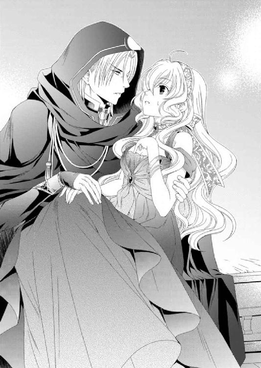
沈黙したルセリアに不審を抱いたようなカルソーニに、思わずリスティアらしく演じてみる。
「少し疲れたわ、カル」
「そうだろうね。この後しばらく休むといい」
カルソーニはルセリアの身体を抱き上げ、寝台に下ろした。ルセリアはカルソーニに促されるまま、身体を横にする。
そのまま立ち去るかと思われたが、カルソーニは振り返ると、再び寝台脇に戻ってきて、ルセリアの手を握りしめた。
「......戻ってきてくれた。約束どおり私のもとに」
「そうよ、カル。約束したもの」
リスティアがどんな話し方をしていたのかは、過去の記憶から知ったが、カルソーニを誤魔化せているかどうかわからない。
内心、かなり動揺しているルセリアと違い、カルソーニは疑いもせずほんの僅かに口の端を上げて微笑を浮かべる。こんな顔のカルソーニは初めてで、驚きが表情に表れそうになるのを、必死に堪えた。
「......また、後ほど」
驚くほど優しい目でそう言い、今度こそカルソーニが部屋から出て行った。
ルセリアはしばらく寝台に横になり、人の気配や物音がしなくなってから、そろそろと身体を起こした。
寝台は二人が横になっても余るほどの大きさで、頭側の飾り板は角が丸く削られ、滑らかだ。彫りは特にされておらず、味わい深い木目が飴色に輝いている。
ビアランの船とは違う特徴ある四角い窓。その向こうに見えるのは、青い海原。行き先は不明だが、船首は迷いなく目的の場所へと向けられているようだ。
アルバトルを助けなければ――。
リスティアの振りがいつまで有効かわからないが、あまり長く騙すことはできないはず。
アルバトルを助けるのなら今すぐ行動しなければならない。
ルセリアはそろそろと出入り口の扉に近づき、廊下の様子に聞き耳を立てた。
カルソーニは気を許しているようだが、かといって全幅というわけではないだろう。必ず廊下には兵士がいて、ルセリアが外へ出ないよう見張っているはず。
開けない方がいいわよね......。
「外に見張りが立っているぞよ、ズンズン」
「ナナル!?」
「ご主人様、久しぶり！ ナナル、復活！ みんな、復活！」
ナナルは喜びに満ちた顔でルセリアの膝に飛び乗ると、小さな尻尾をフリフリして踊る。その隣でファンファンが炎の尻尾を回していて、レヴィンが恐る恐る卓の下から顔を出したり引っ込めたりしていた。けれど、ゴンゴンやエスペンザらしき守護使徒はいない。
「......リスティアは？」
「まだ不安定。リスティアでの形態を持続させるにはもうちょっとかかるぞよ」
守護使徒が一つになるには、七日間ほどかかるとキイナが話していた。けれど主であれば守護使徒を簡単にもとの六つに戻したり一つにしたりできるらしい。
もっともルセリアは守護使徒を受け入れてきたが、どう使うかはほぼ手探りでここまできた。正しい導き手が今の世界に存在しないから仕方がないのだが。
「......新しい守護使徒のゴンゴンやエスペンザは？」
「僕はここだ」
声を聞いて振り返ると、少年が窓の下に立っていた。
柔らかそうな髪に、触れるとはじけそうなほっぺたは、うっすらと色づいていて健康的だ。
なのに大きな目に浮かぶのは、子供が持ち得ない深い知性や大人びた落ち着きだった。
「貴方が......エスペンザ」
「そうだ」
「ゾフィーは？」
「今はまだゴンゴンが眠らせているよ。起きていると悪さをするからね」
ゾフィーを無力化するためには五つの守護使徒が必要だ。すべてが揃った今、ゾフィーに対する脅威はないのかもしれない。
ルセリアはほっと胸を撫で下ろしつつも、まだ残る懸念について尋ねた。
「六つ揃ったんだから、アルバトルの死の呪いや、他の人たちがゾフィーに掛けられた呪いは解呪できるのよね？」
「それは無理だ。一つになった今、遂行できなかった命令に向かって、リスティアは準備を整えているよ」
エスペンザの言葉を聞いて、意識を失ったときに見た光景が思い出されていく。
キイナが止めたかったこと。王が望んだこと。そして忠実なリスティアが未だ何を叶えようとしているのかを。
「それはキイナが過去に止めた、王の命令のことよね？」
「そうだよ」
「命令を下した王様って......どう考えても亡くなってるわ」
ネディアの話はおとぎ話として伝わっているだけの、はるか彼方の出来事だ。
遠い昔。ネディアがまだこの地上にあった頃の話をルセリアは見て、そして体験した。
あれから長い年月が過ぎている。あのときの王は亡くなっているだろうし、今の王がそのことについてどう考えているのか、ルセリアには想像もできない。
「そうだね。でも命令は取り消されていないよ」
「ね、私が今の主なのよね？ それなら、リスティアにやめてっていったら、聞いてくれる？」
「ご主人様は確かにネディアの王族の血を引いているから正当な主だけれど、王ではないからね。主の上位はあくまでネディアの王なんだ。順番でいうと、王、王族、聖なる僕。ご主人様は王族になるから二番手。だから王の命令は王が撤回しない限り、リスティアの目的も変わらない」
「じゃあ、ネディアはどこにあるの？ そこへみんなで行って王様にお願いすればどう？」
エスペンザは微笑しつつ首を左右に振った。
ルセリアはリスティアを止める方法を考えているのに、他の守護使徒たちは興味がないようだ。答えてくれるエスペンザ以外はみな部屋のあちこちでくつろいでいたり、転がっている。
「みんなこの世界の人間を滅ぼしていいと思ってるの？ その中には、貴方たちによくしてくれたエミールだっているし、遊んでくれたサリマエルもいるのよ。兵士の中でもあなたたちを知ってる人は、みんな仲良くしてくれたでしょう？ そんな人たちも巻き込んでしまうの。助けたいとか、可哀想だとか、理不尽だとか、同情もしないの？」
「そういう感情は僕にはあるけど、他の使徒にはないよ。特にゾフィーには皆無かな」
「ねえ、エスペンザの言うとおりなの？」
ナナル、ファンファン、レヴィンを順番に見つめると、ナナルから口を開いた。
「う～ん。ナナル......アルたん好き。エミールたんも好き。グレッポンも好き。いなくなったら嫌だぞよ、ズンズン」
「ファンファンはどうなの？」
「オイラは......ご主人様が嫌なことは嫌だな。エミールが怒るのも泣くのも嫌だ。ゴッホ～」
「レヴィンは？」
「ぼっ、ぼっ......僕は、人間......嫌い......なんだな。でも......エミールは......別なんだな」
守護使徒たちが関わった人間の中で、特にエミールは彼らに友好的に接していた。
強大な力を持っていることを知っているのに、一緒に遊んだり、時にはしかったり。そんなエミールに守護使徒たちも好意を抱いているようだ。
「エミールという子はずいぶん好かれているね。......ああ、思い出した。ご主人様をずっと心配していた子だ」
エスペンザが珍しいことでも聞いたような表情をしている。もしかすると守護使徒が誰かを思いやることはあまりないのかもしれない。
そもそもそういう感情が守護使徒たちにあるのかどうか。
だからこそ、気づいたときにはいいことや悪いことを教えてきたつもりだった。
守護使徒の力は人を殺めるためのものではないこと。人を思いやる気持ちが大切なことを。
それらをどこまで理解してくれているのか、ルセリアにも判断がつかないが。
「......リスティア......ではないな」
唐突に声を掛けられ顔を上げると、扉の前にカルソーニが立っていた。彼は音もなく部屋に入り、ルセリアに気配すら感じさせなかったのだ。
守護使徒たちはカルソーニが苦手なのか、瞬時に姿を消した。ルセリアの中へ戻ったようだった。
「......そ、そうよ。今は」
と、そこまで言って、自分をどう説明していいのか困り、「私の身体よ」と続けた。
「そうか、守護使徒が完全体となるには、たしか七日間かかったな。すっかり忘れていた」
独り言のように呟き、カルソーニは続ける。
「私の記憶も長き時に流され、思い出せることと、もう消えてしまったものもある。時の流れというのは残酷だな」
「船は......どこへ向かっているの？」
「始まりの場所へ」
カルソーニは、以前見た冷ややかな眼差しは変わっていないものの、瞳にはどこかほっとしたような安堵が浮かんでいた。
「そこはネディアなの？」
「かつてネディアがあった場所だ。今は何もないが、そこがふさわしい」
「そこで終わりにしようと考えているの？」
ルセリアの問いにカルソーニは答えず、扉を開けて廊下に出るように促してくる。
彼の意図がわからず、ルセリアが動かずにいると、カルソーニは言った。
「......到着までまだ時間があるが......会いたいか？」
アルバトルのことだとすぐに気づいたルセリアは頭を上下に振った。
「では、ついてきなさい」
ルセリアは先を行くカルソーニを追って船室を出る。彼の背からは人の気配がまるで感じられないのだが、先程膝の上に乗っていたように、ジンとは違い実体はあるようだ。
「......サイファス王子はこの船にいらっしゃるの？」
「王子はシシアにいる。これからは王として国を守らねばならないのだが......私がルセリア姫を連れ帰るのを待っているだろうが、いずれそうならないことを知るはず。その後、王子がどういう行動を取られるかなど、私にはどうでもいい話だ」
なんの感慨もなくそう言うカルソーニに、ルセリアはむっとした。
自分の人生を取り戻したいと強烈に願うサイファスを操ることなど容易かったに違いない。
「利用するだけ利用して、もう必要がないと言ってるの？」
「私を利用したいと考えたのは王子の方だ。お互い利用し合っていただけだ。もっとも私はあくまでネディア王の臣下。その他の誰にも心から仕えたことなどない」
二人は似た者同士。どちらが利用し、利用されたのかは、ここで問うたところでどうしようもない。
下層へ向かう階段を下りながら彼の後を追っていると、ふいにカルソーニが肩越しに振り返ったため、思わず歩を止めた。
「リスティアが現れた以上、過去の記憶は得たのだろう？」
「ええ。でも、リスティアがしようとしていることは間違っているわ。貴方なら止められるはずよ」
「止める？ 私にそんな権限はない。それに......私やリスティアこそが王のご命令を忠実に守ろうとしている。ネディアの王族の血を引く貴方が、その命令に背かれるおつもりか？」
抑えた口調だったが、カルソーニからは怒りが滲み出ている。味方だと思っていたのに、そうではなかったことに対する落胆も含まれているようにも思えた。
「もう......王は亡くなられているわ。過去を水に流してはどうなの？」
「貴方はなんのためにこの世界へこられた？」
「......え？」
「もし今のネディアの王が過去の命を取り消されたいと思われたのなら、貴方に明確な命を託されているはずだ。ならば私も従おう。......どうなのです？」
ルセリアは赤ん坊のときに『変革の書』とともにニノキアにやってきた。その『変革の書』は指示書ではない。またこうして欲しいという記載などもないのだ。
ルセリアは両親の記憶も持たないまま、この世界に送られた。その理由は、守護使徒を集め、過去の命令を遂行するためだったというのか。
「やはりないのだな。では、命令は遂行されるべきで、貴方もネディアの王族の一人であるのだから、王の決定に異を唱えることなどしてはならないのですよ」
どうしてこんなにも頑固なのかしら――。
説得する言葉をすべて言い尽くしてしまったルセリアには、もうカルソーニのあとを追うことしかできなかった。
下の階には騎馬隊の馬房があり、そこを抜けた通路の両側、そして奥に牢屋がある。アルバトルは一番奥の牢屋に囚われていた。
人の気配を察知したのか、壁を背にして座っていたアルバトルの顔が上がる。
「ルセリアっ！」
「アルバトル！」
ルセリアは牢屋に駆け寄ると、鉄格子に手を掛けて、アルバトルの無事を確かめた。
彼は特に鎖に繋がれてはいなかった。また、目につく怪我もなく暴力をふるわれたようなあとも見受けられない。
ルセリアが安堵していると、カルソーニはなぜか牢屋の鍵を開けて、背を向けた。
「カルソーニ」
「話があるのでしょう、どうぞ......」
去って行くカルソーニが気になったルセリアだったが、今はそんなことはどうでもいい。
ルセリアは牢屋へ入るとアルバトルの胸に飛び込んだ。
アルバトル、アルバトル、アルバトル――！
背に回されたアルバトルの手はいつにも増して強く、ルセリアは心地よい息苦しさを感じながら、しばらく無言でぬくもりを味わった。
どのくらいアルバトルの熱い抱擁から離れていたのか。彼の口づけはいつが最後だったのか、思い出せない。
「......よかった、無事で」
ようやく出た言葉の陳腐さをルセリアは情けなく思いつつも、涙が頰を伝う。
「そなたは大丈夫か？ 怪我などしていないのか？ リスティアは......」
「私......私は大丈夫よ......アルバトル」
自分の頰を思い切りアルバトルの胸にこすりつけようとした。が、胸元に何か丸い塊を感じて身体を離すと、ナナルがモゾモゾと這い出して、どういうわけかアルバトルに擦り寄る。
「ナナルも大丈夫ぞよ、アルたん。ズンズン」
「オイラはもともと大丈夫だ。ゴッホ～」
ファンファンも同じように二人の間に顔を出し、レヴィンは申し訳なさそうに、傍らに立っていた。
「ぼっ......僕は......別に......アルたんに大丈夫って聞かれなくても......大丈夫だけど......」
「あっ、間に入ってくるな！」
アルバトルがナナルとファンファンを胸元から払いのけると、彼らは「ちぇ」っと口を尖らせ、今度はルセリアの肩に止まる。こんな状況でも彼らの態度があまり変わらないことに、ルセリアは思わず笑いが漏れそうになった。
「おうおうおう......姫さんや。無事でよかった......」
声がする方を向くと、牢屋の隅にちょこんとジンが座っていた。
「ジン......ジンも来ていたのね」
「カルに拘束されておって、動けはしないがな」
よく見ると、ジンの座っている床に怪しい魔法陣が描かれていた。その魔法陣のせいでジンの分魂水晶は囚われ、自由には動けないようだ。
ジンはルセリアとの再会を喜んでくれているようだが、その笑顔には翳りがある。彼自身の記憶も戻ったのかもしれない。
「ジン、もしかして......」
「ああ。記憶を取り戻したらしいジンにすべて聞いた。そなたがこの世界にやってきた理由も。リスティアのことも」
「......すべて？」
「そうだ」
すべて知られていることにほっとしている半面、それらの原因になった自分に、ルセリアは責任を感じていたのだ。
「......リスティアの目的は知らなかったけれど、守護使徒を一つにしなければよかったのかもしれない。そうすればリスティアは出現しなかったわ......」
ただ、そのことにルセリアはもっと早くに気づいた覚えがあった。
「私、意識を失う前に......アルバトルに光の使徒を探してはいけないって......言ったような気がするんだけど」
「ああ、そういえば......。光の使徒を......で、言葉が途切れた。なんだ、探せではなく、探すなと言いたかったのか」
ルセリアは頷く。
「私がもっとはっきりアルバトルに伝えていれば、こんなことにはならなかったのよね......ごめなさい」
「だが、だめだと言われても俺は迷わずエスペンザを探していただろう。そなたの命を救うにはそれしか方法がなかったからだ」
「......ありがとう、アルバトル」
少しでもルセリアの罪悪感を減らしてくれようとするアルバトルの言葉に、様々なことで傷ついていた心が癒やされていく。
ルセリアはアルバトルに身を任せたまま、彼に促されて腰を下ろす。
けれど彼のぬくもりから離れがたくて、アルバトルの胸に身体を寄せたまま、ジンの言葉を聞いた。
「我が輩は......リスティアの言葉を聞いた瞬間、すべての記憶を取り戻した。こんなにも辛い記憶なら......思い出さねばよかった......」
愛する者はすでにはるか昔に亡くしている。けれど封印されていた記憶が蘇った今、その痛みは昨日のことのように感じられるはず。
ジンのキイナに対する深い愛情や、また彼女とともに描いた未来が永遠にやってこないことを受け入れ、決断するしかなかった悲しみは、癒える時間すら与えられていなかったのだから。
「ジン......私ね、キイナの言葉を預かってるの......」
「......姫さん、それは......？」
「私を救ってくれて、ありがとう。そして、いつか私を見つけて。死の世界にあっても、私は貴方を愛しているわ。私が記憶しているキイナからジンへの言葉よ......」
ルセリアの言葉を聞いたジンは、苦痛に顔を歪めながら目を閉じた。震える目元から、誰にも触れることのできない涙がこぼれ落ちる。
「キイナを一人で逝かせ、我が輩だけこのような姿で生き長らえるとは......」
「ジン、きっと理由があるのよ。私がこの世界に来たのもきっと理由があると思う。でも......それは人々を悲しませるためだなんて思いたくない」
守護使徒を集めるためにルセリアがこの世界に来た理由。ジンやカルソーニが今も存在している理由。それらは決して最悪の世界を作り出すためのものではないのだと。
「ああ、そうだ。そなたは俺のためにこの世界にやってきた......。誰のためでもない。この俺のためだけに......」
想いが込められたアルバトルの声。こんな状況であろうと、聞いているだけでルセリアは安心できる。
「ルセリア、守護使徒を使えるのなら、彼らに命令をしてそなただけでもここから逃げろ」
アルバトルがそう言うのも無理はないが、ルセリアは逃げるつもりはなかった。
「どうした？」
「アルバトル......ここで逃げても何も変わらない......。だからこのままカルソーニが言う、始まりの地へ向かうわ。だってリスティアの気持ちを変えない限り、彼女はこの世界から人間を消そうとする。それがネディア王の願いだと信じているから......」
「そなたがリスティアを止められないのか？」
「私の命令よりも上位にあるのがネディア王の命令らしいの。だから取り消せるのも王しかいないって」
ネディアの場所さえわかったら、そこへ向かいルセリアは何を代償にしても、ネディアの王にリスティアに下した命令を取り消してもらうだろう。
ネディアさえ見つかれば――。
「ジン、ネディアはどこへ消えたのだ？」
「わからんのだよ、アルバトル。我が輩はアルバトルに見つけてもらうまでずっと水晶髑髏に囚われたまま、眠っておったからな。それも記憶を封印された状態で。今ようやくあるべき記憶は戻ってきたが、我が輩の身体が消滅した後のことはわからん」
「......そうか」
ネディアの行き先はキイナの記憶にもなかった。もっとも死が訪れた後のことが、記憶として残されていないのは仕方がないのだろう。
「私ね......アルバトル。この世界を滅ぼすために自分がこの世界に送り出されたなんて思えないの。もし本当にそうしたかったら、物心がついてからその使命を私に負わせて送り出したはず。でも私は何も知らない赤ん坊のままこの世界に送られた。義理の両親に愛情深く育てられて、いろんな経験をしたわ。なによりアルバトルと出会って愛を知ったの。決してこの世界から人々を一掃するために送られたわけじゃないって、私の心はそう告げてる」
「ああ、そうだな......俺たちがここにこうしている理由は必ずある。俺にもそう思える」
何かを悟ったようなアルバトルの言葉に、彼に何かがあったことにルセリアは気づいた。
しばらく待っていると、アルバトルは続けて言った。
「そなたに話したいことがあった。......母のことだ」
「聞かせて......アルバトル......」
ルセリアはアルバトルに凭れ、久しぶりに感じるぬくもりに心を温めつつ、彼の話に耳を傾けた。
そしてすべてが終わる頃、涙が止まらなくなっていた。
朝方急に冷え込み、ルセリアはアルバトルにますます密着して、毛布に深くくるまった。
牢屋の寝台は狭いが二人で身を寄せ合っているととても温かい。
なによりアルバトルをより近く感じていたかったルセリアにとって、逆に狭い寝台はうれしかった。
「......」
そっとアルバトルを窺うと、彼はまだ眠っていた。
意外と深く見える眠りに、ルセリアは思わず微笑を浮かべる。ルセリアのことが心配で眠れなかったと聞いていたから、安堵がアルバトルの睡魔を引き寄せたのかもしれない。
けれど問題は山積みで、一つも解決することなく、積み上がるばかりだ。
昨夜聞いたアルバトルの母であるアミタの話がルセリアの頭から離れなかった。
アミタが見た未来が本当なのか、誰にもわからない。
夢を信じて死のうとするなど馬鹿だと笑う人もいるかもしれないが、ルセリアがもしアミタの立場なら、きっと同じ選択をしていただろう。
愛する子供のためならどんな犠牲もいとわない。それが母親の愛だと信じているからだ。
他に方法がないと信じたから、アミタはアルバトルのために死を選ぶしかなかった。残されたアルバトルが自分のために命を絶った母の死をいつか知り、背負うことになるとわかっていても。そのことで、アルバトルは苦しんでいるだろう。
時間の経過とともに、その痛みは和らいでいくだろうが、ふとしたときに事実を思い出し、苦痛に胸を痛めなくてはならないだろう。
私が一緒に背負うから――。
ルセリアはアルバトルの頰をいたわるようにそろりと撫でた。
再会したときは彼のあまりの傍若無人さに反発して、逃げ回っていた。愛し方を知らず、自分の想いばかり押しつけてくるアルバトルが大嫌いだった。
なのに今は、違う。誰よりも彼と一緒にいたい。彼に愛されまた自分も愛し、互いに支え合って生きていきたい。
ルセリアはそう願っている。
彼の頰から手を離し、胸元に寄り添う。
温かい――。
こうしているとアルバトルにかけられた死の呪いのことなど忘れてしまいそうになる。
けれど確実にアルバトルの命の火は消えていく。
リスティアのこともなんとかしなくてはならないが、アルバトルの呪いをどう解呪するか、その方法をルセリアは探さなくてはならない。
過去を繰り返させはしないわ――。
その方法はまだ見つけられないが、必ずあるはず。
「......いつ起きた？」
ルセリアが腕の中で身じろいだことに気づいたのか、アルバトルはそう言って目を開けた。
「今......」
「少し寒いな」
「うん。でもアルバトルに抱きついているから、大丈夫」
「そうだな......そなたはとても温かい......」
アルバトルは心地よさそうに目を細め、ルセリアの額に唇を押しつけて、愛撫を繰り返す。
「グレディやエミールたちは大丈夫かしら......」
「大丈夫だ」
アルバトルはカルソーニとともにシシアの船に乗り込んだが、他のみなはそのままビアランへ帰国させたそうだ。
シシアの戦艦を何隻も引き連れて島にやってきたカルソーニ。
彼の申し出を拒否できる戦力はそのときアルバトル側になかったこと。また、カルソーニがこれから戦争が起こることを遠回しにほのめかしたせいだった。
アルバトルはみなに帰国して国を守るよう命令し、自らはルセリアとともに――そのときはリスティアだったが――シシアの船に乗り込んだという。ジンはカルソーニが同行するように求めてきたそうだ。
グレディは最後までアルバトルとともにありたいと願ったようだが、彼はビアランに戻るよう強く命令したそうだ。
戦争――。
本当に戦争が起こるのだろうか。そんなことなどお構いなしにリスティアは争う人々を一掃するような気がした。
確かにサイファスはルセリアを手に入れようと、様々な策略を巡らせた。
けれど、サイファスは戦争などは望んでいなかったはずだ。彼が各国の代表者を操り人形にしたのは、守護使徒を宿したルセリアを守るため。
守護使徒の力を手に入れようとして国同士が争い戦争が勃発しないよう、操り人形にしただけなのだと。ルセリアにはそれが正しいやり方とは思わないが、サイファスの求めた平和の理屈は今なら理解できる。
けれどその計画は、最終的に圧倒的な力をもってカルソーニによって潰されることになるのだ。サイファスはいつそのことに気づくのか。それとももう気づいているのか。
「寒い......」
ルセリアが思わずそう呟くと、ファンファンがそろりと姿を現し、身体をブルルっと震わせた。すると徐々に室温が上がっていく。
ルセリアはようやく毛布から出て寝台に腰を掛けると、得意げな顔をしているファンファンの頭を撫でた。
「ファンファン、すごい」
「オイラにはこのくらいなンでもない。ゴッホ～」
用がすむとファンファンは興味深げに牢屋の周りをうろつき、ナナルも姿を現して探索し始める。今のところ守護使徒たちはルセリアの命令を聞いてくれるようだ。
「アルバトルだけでもこの船から逃げて。私がなんとかする」
「二度とそなたを手離しはしない」
「アルバトル、だめよ」
無理にリスティアを止めようとしたジンが過去どうなったのか。
ルセリアは見たのだ。そして体験した。
その場にアルバトルはいて欲しくない。彼の母アミタは自らの命を犠牲にしてまで息子の未来を守ろうとした。それなのにルセリアがそれを奪うことになってはならない。
「その昔、ジンもカルソーニも愛する者のため、その場から逃げ出さなかった。なのに俺には逃げろというのか？」
「ビアランのことを考えて......アルバトルは将来、ビアランを治める王になるのよ」
「ああ、俺はビアランの王になる。そなたは俺の后になる。そうだろう？」
アルバトルは不敵な笑みを浮かべてそう言った。
今の状況を理解しているはずなのに、どうしてこうも自信に満ちているのだろうか。
「アルバトル......」
「そなたはまるで世界が終わってしまいそうな顔をしているな。普通は力を持っている人間の方が楽観的になるものだ」
「それは......そうだけど......」
リスティアはあれから沈黙していてルセリアに語りかけてこない。それもルセリアには心配の一つだった。
「なんとかなる。いや、なんとかしてみせる。俺は見たことも話したこともない、すでにこの世にはいないだろうネディア王の言いがかりで滅ぼされるつもりはないからな」
「......うん」
「それにしてもカルソーニは牢屋に鍵もかけず、開けたままにしているが、俺にうろついてもいいと言ってるのか？」
どこか困惑した顔のアルバトルに、そういえばとルセリアも思い出す。
「鍵はかけられていないし、見張りの兵士もいないから、出てもいい......と思う」
アルバトルは立ち上がり、牢屋から出て一つ伸びをすると、ルセリアを振り返る。ルセリアも寝台から離れ、牢屋から出た。
兵士が走ってくる様子もなく、牢屋と同じ階にある馬房からは馬の鼻息や前脚を掻く音しか聞こえてこない。
「そういえば......あのカルソーニという魔導師。俺たちを捕らえたり殺す機会が何度もあったにもかかわらず、そのたびに姿を消した。それだけじゃない。目的の場所へ誘導するようなこともあった。......だからと言って味方とも少し違うようだが」
「我が輩が思い出したカルソーニは......物静かでぶっきらぼうな男だった。複雑な家庭で育ったような噂は聞いたが、彼から身の上を話すこともなかった」
未だ魔法陣に囚われているジンがそう言い、続けて「ところで我が輩は......出してもらえないのか？」と肩をすくめた。
「ファンファン、ジンの牢も開けてもらえる？」
「オイラにできないことはないンだ。ゴッホ～」
ジンの囚われている牢の柵を炎で溶かしたファンファンは得意げに尻尾を振り回す。けれどジンは魔法陣に囚われているため、柵を溶かしただけでは動くことはできないようだ。
ルセリアはジンの牢屋に移動して、魔法陣の中心に置かれていた分魂水晶を手に取った。守護使徒を宿しているルセリアには魔術が効かないため、すんなり摑めたのだろう。
「これで大丈夫ね」
「おうおうおう......姫さんや、助かりましたよ。これで自由に移動できる」
「どうしてジンを連れていこうとしているんだ」
「我が輩に......本来の結末を見せつけたいのだろうな......そんな気がする」
過去、リスティアを止めたのはジンだ。
ジンがキイナの身体から守護使徒の一人を引きはがしたため、リスティアは完全体を保てず、命令を遂行することができなかった。きっとあの立方体に囚われていたジンの手。その中にあったゴンゴンが、当時ジンに引き離された守護使徒だったのだ。
「ジンは......カルソーニを恨んでいる？」
「奇妙に聞こえるかもしれんが......記憶が戻ってきた今、我が輩はカルソーニのことはそりが合わんとは思っても、憎しみはこれっぽっちもないんだ。あのとき正しい判断をしたのはカルソーニとリスティアだった。我が輩とキイナは王の命令に逆らった。我が輩こそが裏切り者だたったからな......」
自嘲気味に笑うジンにルセリアは首を左右に振った。
「いいえ。たとえ王の命令であっても......従っていいことと悪いことがあるはず。王は悲しみに囚われていて、正常な判断ができなかった。私は......そう思う」
「ありがとう、姫さん。その言葉でほんの少し救われた気がするよ」
過去の記憶を取り戻したばかりのジンからは、陽気な笑顔が消えていて、ルセリアは心を痛めていた。すぐには難しいかもしれないが、いつもの彼に戻って欲しい。
「俺を殺す気がないというなら、カルソーニへ挨拶に行くか」
アルバトルはそう言うと、ルセリアの腰に手を回して引き寄せ、挑むような目をしたままフンと鼻を鳴らした。
アルバトルはルセリアを連れて昼間でもカンテラに照らされている階段を上った。
船内にいる船員や兵士にも出会ったが、止められることも、問われることもなく、ただすれ違うだけ。
彼らの態度は薄気味悪いが、敵意がないのはありがたい。
甲板に上がると空気はさらに冷たく、灼熱の地に住まうアルバトルには、ぞっとする気温だった。傍らのルセリアも言葉には出さないが、寒さに身を縮めているのに気づき、自らの外套に彼女を包む。
気温の変化と早朝の空にまだ残る星を見上げ、それらの位置を合わせると、北上していることが簡単にわかった。
アルバトルはルセリアとともに船の手すりに近づき、周囲を見回す。
船の進行方向右手に内陸が見える。そのあちこちから不気味な黒煙が上がっていた。それらは街や山並みをも霞ませている。
戦艦らしき船が停泊している中規模の港もあり、不穏な空気が漂っていた。
ルセリアがそっとアルバトルの手を握りしめてくる。少し冷えたルセリアの手を温めるように、アルバトルは握り返した。
「アルバトル......私と同じものが見えてる？」
「ああ......」
なぜ、ゾフィーが操り人形にした国の代表が帰国し、戦を始めなければならないのか、アルバトルにはその意図が想像できない。
アルバトルは同じように傍らに立っているジンに尋ねた。
「ジン......ビアランはどうなってるのか、わかるか？」
「そうそう、そうじゃった。魔法陣で邪魔されとったが今なら本体と連絡が......」
ジンの本体はビアランにあって、ここにいるのは分魂水晶を使って連れてきた分身だ。だから互いのジンは同じものを見られるし、意思の疎通もできるようだ。
「どうした？」
「アルバトル、ビアランはまだ戦線に加わっておらんようだが、王の命令で港町の住民はみな首都のシハーブに移動させておるようだ」
「......やはりな」
王であるエルドナルや大臣とはすでに最悪のことまで話し合っていた。だから避難や防衛の計画も含めてアルバトルは自国の心配はしていなかった。
父は確かに色に弱いところがあるが、王としての手腕は僅かも疑うことはない。
「争いは望んで起こったことではない。すべてゾフィーのせいだというなら、どうすれば操られている人の心を戻せる？」
「......わからないわ」
ルセリアは悲しげに目を伏せる。もちろん彼女もまっさきにそのことについて守護使徒たちに命令しているはず。だが今も状況が変わらないのではルセリアでもどうにもならないことなのかもしれない。
「ゾフィーは呼び出せないのか？」
「今はゴンゴンが眠らせているみたい」
カルソーニが鍵か――。
アルバトルがそんなことを考えていると、当のカルソーニが背後から声を掛けてきた。
「そろそろ朝食の時間だと思いましてね。今、用意させております」
「ずいぶんと友好的だな」
「私はもともと友好的に接してきたつもりですが」
どの口が言う――。
アルバトルは苛立ちを覚えたが、カルソーニから必要な情報を得なければならないため、ぐっと堪えた。
「さあ、どうぞ、こちらへ」
カルソーニに促され、アルバトルたちは一階下の船室に向かった。卓の上に並べられた料理は今用意されたばかりのようで、炒めた野菜などは湯気が上っている。蜜をたっぷり含んだ果物も、シシア特有の小麦をこねて焼いた棒状のフィスカも焼きたてのように、柔らかそうだ。
「美味しそう！ ......あ、ごめんなさい」
目覚めるまで何も口にしなかったのだから、お腹も空いていただろう。
思わず正直に声を上げたルセリアに、笑ったように見えたカルソーニが気に入らない。
「毒など入っていませんので、お好きなだけどうぞ」
「いただいて......いいのかしら？」
ルセリアが斜め隣に座るアルバトルに上目遣いで尋ねてきた。アルバトルは小さく頷くとうれしそうに笑う。
どんな状況でも笑うことのできるルセリアに、たくましさすら覚え、内心感心していた。
「カル、我が輩は記憶を取り戻した......」
アルバトルに付き添い、船室に入ってからもひっそりと窓際に立っていたジンが、口を開いた。が、カルソーニの表情は冷えたままで、彼を見ようともしない。
「我らの生きた時代はもう遠い昔に終わっている。今の時代にそれを繰り返すことに意味などないはずだ」
「......申し訳ないが、すでにその話はルセリア姫との間で終わっている。君に答えられることなど私にはない」
カルソーニはやはりジンを見ることなくそう告げた。
「今向かっている始まりの地......とはどういう場所でどこにあるの？」
「......遙か昔、ネディアが存在した場所ですよ。我らの時間が止まった場所。すでにネディアはその地から去りましたが」
「戻ったところで、過去はなにも取り戻せんぞ」
ジンの言葉にとうとうカルソーニは返事も返さなくなった。
雰囲気は最悪だが、過去の関係もいいものではなかったとアルバトルはジンから聞いている。しかも同じ身体を共有する別々の女性を愛した二人だ。再会を喜び合うことはないのだろう。
「ゾフィーが操り人形にした人間はどうして戦を始めている？ いや、リスティアが現れたら争っていようといまいと、人間を排除するのだろう？ なら今争う必要がどこにある？」
「ゾフィーがあの場で赤い霧として吐き出したのは、過去、みなから引き受けた憎しみや恨み嫉妬などの人間の負の意識だ。それをもとの子孫に返しただけ。彼らがどう行動するかは、彼ら自身の問題だろう」
カルソーニの言葉にルセリアが顔を上げる。
「......ゾフィーが悲しみを、エスペンザが希望を与えた。そう、聞いたわ」
「そう......過去中断されたことはただ先延ばしにされただけなのです。改めて人々は審判を受けなければならないのです」
「お前たちは待つばかりか？」
ジンからルセリアからカルソーニから聞く過去にネディアであった話はみな同じで、もうアルバトルにはうんざりだった。
「自分たちで変えようと考えないのか。俺たちより長い間生き長らえておいて、答えはそれしか探せなかったのか？」
「アルバトル......」
ルセリアが心配そうにアルバトルの名を呼んだ。
けれどカルソーニには言いたことが山ほどある。今しか意見ができる機会はないだろう。
「アルバトル王子、貴方はとても若い。今はまだ未来はいつも輝いて見えるでしょう。私もそうでしたよ」
「明るい未来を描く人間は、破滅など受け身で待つことはない」
「リスティアを愛した私にどんな明るい未来があるとお思いか？」
カルソーニはようやくアルバトルの目を見据えたが、彼の瞳には光を通さない暗い闇ばかりが漂っている。
「自分が不幸だからみなも不幸になれと考えているのか？ ならばそれは王の命令に忠実であろうとしているのではなく、自らの目的と合致しているだけだ」
「私が利己的な目的のためにこのようなことをしているとおっしゃるのか？」
「ああ、そうだ。俺はネディアの王など知らんが、王が間違った道を選択したのなら、それをどんなことをしてでも止めるのが臣下の役目。王はどれほどの権力を持とうと、時には耳の痛い忠告をする臣下こそを大切にせねばならないことくらい、知っているぞ」
アルバトルにはグレディがいる。もし間違った選択をすれば、グレディはどんなことをしてでもアルバトルを止めるだろう。
カルソーニにとってもしかするとそれはジンだったのかもしれない。
けれど彼らは決して互いを理解しようとはしないのだ。いや、できないのだろう。
「貴方はさぞかし立派な王となられたはず。なのに残念ですよ......」
「どういう意味だ？」
「たとえリスティアから生き延びたとしても、貴方は愛する者を失う。ルセリア姫はネディア王族の血を引くお方。リスティアが命令を遂行した後、帰らねばならない。そして二度とこの地に戻ることはないだろう」
「......なんだと？」
ルセリアやジンも知らないことをやはりカルソーニは知っている。
ネディアのありかについてもこの魔導師ならば情報を持っているかもしれない。
ある程度の予想は立てていたが、それを確認したいとアルバトルは考えていた。
アルバトルは挑発に乗っているフリをしつつ、カルソーニから必要な情報を得られるかを探ることにした。
「今の貴方を貴方たらしめている女性を失ってもなお......そんなご立派な意見をおっしゃることができるのなら、私はそのときこそ、アルバトル王子を認めますよ」
「ルセリアを赤ん坊の頃ネディアから追い出し、いつまでも隠れて出てこない卑怯者のネディアの王などに、我が后となるルセリアを帰すと思うのか？ 請われても無理だな」
「王子、言葉が過ぎますよ」
「いいか、ネディアの王は俺の王ではない。だが、俺は礼儀を知らぬ王子ではない。ルセリアとの婚儀の報告をしたためた親書を、海にでも流せばいつかネディアに届くだろう」
アルバトルが馬鹿にしたようにそう言うと、さすがにカルソーニの表情がこわばった。
よほど腹を立てているに違いない。
「我が王を愚弄する気か？」
「愚弄しているのは俺たちではない。お前だ」
「それほどまでに意見することがあるなら、ネディア王に会われるがいい......」
思わずそう口にしたカルソーニが、その勢いでネディアの場所を告げるかに思われた。
が、彼も馬鹿ではないようだった。
「......いや、そうもいかんな。少し話しすぎた」
カルソーニは静かにそう告げると、椅子から腰を上げ「では、ゆるりと食事を楽しまれるといい」と言い残して、船室から出て行った。
そんなカルソーニを追うように、ジンも姿を消す。
「カルソーニを怒らせない方がいいと思うんだけど......」
「わざと挑発した。もっとも、のってこなかったがな」
あわよくばという気ではいたが、やはり簡単にはネディアは探せないのかもしれない。
ただカルソーニがその場所をどうやら知っているらしいことだけはわかった。
「ネディアの場所？」
「ああ」
ふいにルセリアの表情に瞬きの回数が増えて、頭が前後にふらりふらりと揺れ始めた。危険だと感じたアルバトルは席を立ち、ルセリアの傍らに立って、身体を支える。
「どうした？」
「お腹がいっぱいになってきたら......すごく......眠くなってきたの......」
ルセリアは目を何度も擦る。今にも眠ってしまいそうなほど、目の焦点が合っていない。
どうして突然ルセリアはこんな状態に陥ったのだろう。
「まさか......何か薬でも入っていたのか!?」
「わから......ない......けど......リスティアを感じる......」
がくんと身体が前に倒れたかと思うと、すぐさま何事もなかったように身体が起き上がる。
けれど目は半眼でどこかぼんやりとしており、アルバトルの声が聞こえていないようだった。
「ルセリア!?」
「......」
「ルセリア、しっかりしろ」
身体を少し揺すると、ルセリアはゆっくりとアルバトルの方を向いた。
「主は本当に眠っているだけだ。安心しろ」
その特徴ある口調にルセリアの身体を支配しているのはリスティアであることがわかった。
「リスティア......か」
「ああ」
「ルセリアが眠ってしまったのは何かの薬の影響か？」
アルバトルの問いにリスティアは表情を変えることなく、答えた。
「いや。本当に主は疲れているようだ。守護使徒をすべて身に宿すと、慣れるのに少し時間がかかる。それは正当な継承者であってもだ」
「......問題がなければいい」
ほっとしたアルバトルは、すでに冷えてしまった飲み物を口にして、ため息をついた。
リスティアはじっと前だけを見つめ、やけに姿勢よく座っている。
その様子を見たアルバトルは質問をしようとしたが、先にリスティアの方が聞いてきた。
「主はお前をとても愛しているようだ。私がお前を傷つけることをとても心配している」
「そのつもりがあるのか？」
「いや、ない。そういう命令は受けていない」
リスティアの行動原則は王の命令、その次にルセリアの命令のようだが、自分の考えは持たないのだろうか。
「お前はこの世界を本当に滅ぼすつもりか？」
「私は世界を滅ぼすつもりはない。未熟な人間を排除するだけだ」
リスティアは未熟な人間を強調しているが、本当に成熟した人間などこの世にいるとは思えない。未熟さでいえば、悲しみに取り憑かれてリスティアに人間を滅ぼせと命令した王が成熟した人間と思えないからだ。
それでもリスティアは彼女なりの基準をもって、あくまで人間をこの世から消し去ろうとしているようだ。だからジンはリスティアが復活しないよう、守護使徒を一つにしてはいけないと警告したのだろう。もっともそれには遅すぎたが。
リスティアは誰を消し、生かすつもりなのか。なにか選別方法があるのだろうか。それともすべてを排除するつもりか。
「俺が今のネディアの王に過去の命令がまだ継続しているのかどうか、確認してきてやってもいいぞ。どうだ？」
「ネディアのありかなどこの私がお前に告げると本気で思っているのか？」
「......ならば、どういうことなら教えてくれる？ お前が話していいことがあるなら、すべて教えてくれ」
「変わった人間だ」
黙りこんだリスティアを、アルバトルはじっと見つめて口を開いた。
「守護使徒を理解したいだけだ」
「なぜ？」
「俺の后となるルセリアの中にいる存在だからだ。その答えでは足りないか？」
「いや......」
リスティアは初めてアルバトルと視線を合わせ、言葉を重ねた。
「お前に話せることがあるのかどうか、私にはそれすら答えられない。ただ......」
「ただ？」
「私が質問をしてもいいか？」
意外な展開にアルバトルは耳を疑った。
「答えられることならな。何を知りたい？」
「なぜ、カルは私を愛してくれている？ 私はただの集合体だ。個の存在であっても、個の存在ではない私を」
守護使徒のことをリスティアは説明しているのだろう。
六つが合体して七体目のリスティアが出現する。リスティアは守護使徒の集合体。だからこそ一つでもあり複数でもあるのだろう。
もっとも愛を説明するのにそういう情報が必要かどうか。
「......それはカルソーニに聞け。あの男がお前のどこに惚れたかなど、俺にはわからん」
あの冷酷そうに見えるカルソーニに、愛があふれているとは思えない。同じように、感情の起伏の少ない、しかも人間ではないリスティアのどこを愛しているのかと問われても、アルバトルには想像もつかない。
「だがお前は私の主を愛しているのだろう？ キイナがジンを愛したように。それと愛は違うのか？」
「......キイナがジンのどこに惚れたのかも......俺は知らんし、話してやれない。惚れる理由は人それぞれだからな」
「なら、お前は主の何を愛したのだ？」
リスティアはなおもアルバトルに愛について問いただす。
「俺が一番辛く悲しいときに、他人であるはずのルセリアが、そっと寄り添ってくれた。それが始まりだ」
「近づいてきた人間なら誰でもよかったのか？」
「いや、きっかけの話をしている。誰でもいいというわけではない」
カルソーニがリスティアに愛を語ったのだろうか。
どちらも愛を語るには不適当に見えるが、リスティアが人間ではない以上、カルソーニが先に好意を抱いたとみて間違いないはず。
「主を見て......何かを感じたのか？」
「ああ。幼いながらもルセリアを花嫁にするのだと強く願った。それが愛だと気づくのには、さらに大人にならねばならなかったがな。お前はどうだ？ あのカルソーニという魔導師に愛を抱いているのだろう？」
「そのようだ......」
リスティアはあくまで表情を変えずに呟く。
ジンはカルソーニがリスティアを愛していると言うのだが、二人が持つ愛にアルバトルは隔たりを感じていた。今の言葉も、心から浮かぶ言葉として受け取ってよいのかわからない。だからリスティアの気持ちを知りたかったのだが、これだけでは人が抱く愛と同じものをカルソーニに対して、彼女が感じているのか判断がつかない。
「俺は......ルセリアを死なせたくはない。ともに生き、ともに齢を重ねていきたい。愛する相手にはそう願うものだ。お前は......どうだ、リスティア」
「私......か？」
リスティアは少し首を傾げ、何かを考え込んでいるように、卓を指先でとんとんと叩く。
「カルソーニを愛しているというのなら、彼を死なせたくはないはずだ」
「そうだ。彼は生きている。これからも私とともに生きていくことを願っている。私の中に愛があるということだ」
リスティアは奇妙な笑顔らしきものを浮かべたが、どこか引きつっていて不自然だ。けれど本人は満足そうに続ける。
「ほら、私もお前たちと......同じだ」
笑うということが苦手なのか、それとも笑い方を知らないのか。
そこに座っているのは確かにルセリアであるのに、リスティアが主導権を握っていると、まるで別人だった。
「......ああ、今日のところはここまでか」
リスティアはそう言うと目を閉じる。アルバトルは椅子から崩れ落ちそうになるルセリアを抱き上げた。
「姫はお休みになられましたか」
唐突に現れるジンに慣れているせいか、カルソーニが同じように姿を見せても驚くことはなかった。
「......牢屋ではない部屋はないのか？」
「ご案内しましょう」
もう一階下におりた階段のすぐ脇の部屋にカルソーニは入るよう促してくる。
アルバトルは窓際にある寝台までルセリアを運び、横たえた。
「リスティアとともに生きる未来は考えないのか？」
「王子は姫を諦めるおつもりです？」
「......」
寝台に腰を掛けたまま、アルバトルは入り口に立つカルソーニを見上げた。フードを被る彼の目元は窺えず、冷えた空気だけが互いの間に漂っている。
「......私がリスティアを求めるということは、そういうことですよ」
それだけ言い残して去ろうとするカルソーニをアルバトルは引き留めた。
「俺もここにいて構わないのか？」
「牢屋がよろしければそちらをお使いください。鍵は開けておりますよ」
カルソーニが船室から出て行くと、アルバトルはルセリアのもとへと戻った。
彼女は驚くほど無防備な顔で眠っている。いい夢を見ているかどうかは定かではないが。
アルバトルもルセリアの隣に身体を横たえ、ゆっくりと息を吐いた。
腹の底にずっしりと抱えた冷たい石が、時間を追うごとに増えていく。指先は常に冷たく、食欲も落ちた。あとどのくらい猶予があるのか。死を簡単に受け入れるつもりはないが、本当に時間が限られているのならば、期限を知っておきたい。
ゾフィーを起こすにはどうすればいいのか――。
「アルバトル......私......眠ってた？」
「ほんの少しな」
ルセリアは横向きになってアルバトルに身体を寄せてきた。アルバトルは彼女の背に手を回して引き寄せると、額に軽いキスを落とす。
「あまり......食べていなかったわ......」
「そなたが眠ってしまってから、ゆっくりすませた」
何も言わずにじっと見つめてくるルセリアに根負けしたアルバトルは正直に告げた。
「ああ、噓だ。食欲がない」
「私、何か作って......」
身体を起こしたルセリアを再度寝台に戻し、アルバトルは仰向きに寝転がって、天井を見つめる。
「いいから休んでいろ」
「......うん」
「こんなふうに待つだけというのは退屈だな」
視線を天井からルセリアへ移し、アルバトルは彼女の肩を撫でた。肩掛けを通してもわかる、ルセリアの柔らかい肌に、アルバトルの胸は熱くたぎる。
「......何？」
「俺はいつ死ぬかわからない......」
想いを込めた声でそうルセリアに囁き、彼女の首筋に口づける。
「ゾフィーが起きたら......必ずなんとかさせるわ。私が正当な主なんだもの。私の命令を聞かないなんて絶対に許さないから」
「解呪できる保証はない。だから......」
「だから......？」
ルセリアはアルバトルが望んでいることが何か予想がつかないのか、きょとんとした表情を浮かべている。
「今......だめか？」
「......えっ、今って......だめって......何？」
「ああ。そなたにもっと触れて、感じたい......」
アルバトルはルセリアの胸元に手を伸ばし、温かな膨らみを手の平に感じた。手の中にすっぽり収まる形のいい胸に、アルバトルはさらに先へと進めたくなる。
「ちょ......ちょっと、アルバトル！」
羞恥を感じたのか、ルセリアがアルバトルの手を胸元から引きはがそうとするのと同時に、ナナルたちがどこからともなくわいて出て、アルバトルの胸や腹に身体をこすりつけてきた。
「わ～ナナルもアルたんに触りたい～！ ズンズン」
「オイラもお前と戯れたいぞ。ゴッホ～」
守護使徒たちは何が楽しいのかわからないが、アルバトルの身体のあちこちを触って、はしゃいでいる。
「うわっ、いきなりなんだ！ 待て、俺に触るんじゃない！」
「ぼっ、ぼっ......僕も......。レヴィンも混ざっていい？ 僕、いい子にするから......」
アルバトルが嫌がれば嫌がるほど、守護使徒たちは興奮し、腹や太ももだけでなく、脇や足の裏まで触ってくるので、思わず叫んでいた。
「お前たちは、どこを触っているんだ！ やめろ！」
「......アルバトルが守護使徒たちに弄ばれてる」
「ルセリア！ なんとかしろ！」
「みんなアルバトルが好きなんだと思う」
ルセリアは寝台に座り、アルバトルが守護使徒たちに絡まれている姿を見て、笑っていた。
彼女の楽しげに笑う声には癒やされるが、それどころではない。
「俺はそなたと触れ合いたいだけで、こいつらと触れ合う気など......毛頭ない！」
守護使徒を引きはがそうとするのに、空中へ放り投げるのと同時に戻ってくる。いい加減疲れてきたところに、カルソーニが不意に声を掛けてきた。
「何をされてるんです？」
守護使徒はいつ消えたのかわからない速さで、ルセリアの中に戻っていた。
アルバトルはルセリアの傍らで一人寝台の上で身もだえていたような状態に見えただろう。
「......見てのとおりだ。何か問題でもあるのか？」
「私の船でいかがわしいことをされるおつもりでしたら、牢屋に戻しますよ」
どこか引きつった表情のカルソーニに、アルバトルはにこやかに告げた。
「俺は守護使徒たちと戯れていただけだ」
「そうよ。こうやって私は守護使徒たちと交流を深めているの」
カルソーニはどこかアルバトルを非難するような目をしていたが、ルセリアはアルバトルの后となる女性。彼女の中にリスティアがいようといまいと、カルソーニが嫉妬することなど、筋違いだ。
「少し船が揺れますので......それをお伝えしにきただけです」
本当にそうなのかどうか定かではないが、カルソーニはそう言って、船室を去る。
すると姿を消したはずの守護使徒たちがまた、姿を現した。
「どうしてカルソーニが姿を現すと、こいつらは姿を消すんだ？」
「苦手みたい」
「ナナル、カルソーニが嫌いなのか？」
「......ナナル、苦手。みんな......苦手。ゾフィーとエスペンザは別。ズンズン」
ナナルはそう言い、ファンファンとレヴィンと目を合わせて、頷き合っている。
「エスペンザとゾフィーはいつも別なんだな」
「別だから、別」
「そういえば、お前たちはネディア王の記憶はないのか？ 昔でも過去でもいいが......」
ファンファンとレヴィンは互いを見合って頭を左右に振ったが、ナナルだけはしばらく目を宙に彷徨わせた後、口を開いた。
「ナナル......なんとなく......見たような......見てないような......ズンズン」
「はっきりしろ」
「やっぱりわからないぞよ......アルたん、悪いな！ また今度聞いてくれ！ ズンズン」
今度とはいつだとため息をついていると、ルセリアが興味深いことを口にした。
「ナナルは私の中にもともといた守護使徒よ。覚えている限り、どこかで守護使徒が身体に入ってきた記憶はないから、赤ん坊のときに私の中に入って、眠りについていたのかもしれないわ。だから王の記憶がどこかに隠れてるかも......」
「なら王が直接、赤ん坊の頃のルセリアに託したのかもしれんな。だが、どうしてナナルだけなんだ？」
使徒は六つ。その中でどうしてナナルが託されたのか。ナナルでなければならない理由があったはず。それはなんなのか、答えを探さなければならない気がした。
「ネディアの王はナナルしか持っていなかったから......とか。だって他の使徒はみんなこの世界で見つかったもの」
「そうだな」
始まりの地よりも、いま向かうはニノキアか。
アルバトルは自分の考えが間違っていなかったことを確信した。
その夜、いつもより闇は濃く、空を覆う雲が月を隠していた。不思議と波の音が遠く、耳にうるさくこだますることもない。
アルバトルは月に反射する波もなければ、星のきらめきも失われた景色を眺めつつ、闇に浮かんだ小さな光に目を細めた。部屋の隅にひっそり立っていたジンがそんなアルバトルに心得たように頷く。
それが合図だとばかりに、アルバトルは食事を終えた後また眠りに落ちていたルセリアを揺すった。
「ルセリア......起きろ」
「......ん......どうしたの？」
寝ぼけた顔のルセリアは可愛い......などと考えている暇はなく、再度、肩を強く揺すって目を覚まさせる。
「リスティアをしばらく出さずにいられるか？」
「たぶん......今はまだ不安定だから、拒否すれば抑えられると思う」
「なら、しばらくそうしてくれ。ジン、お前は分魂水晶に戻っていろ」
「承知した」
そう言うとジンは、アルバトルの胸元に入っている分魂水晶に戻っていった。
なにも知らないルセリアだけが、目を丸くさせている。
「アルバトル？」
「静かに......な」
「え......ええ」
アルバトルはルセリアの手を引いて、船室の扉をそっと開けた。すると階段の上部から人の声がひとしきり落ちてくる。アルバトルは逆の下層へと続く階段を下りた。
「なんだか......上が騒がしかったわ」
「わかっている」
「......牢屋に忘れ物でもしたの？」
「いや。用があるのは牢屋ではない」
馬房と牢屋のある階にくると、アルバトルはすでに目をつけていた馬が繋がれている場所で歩を止める。
「こいつにするか」
「馬？」
アルバトルは手際よく頭絡と鞍を乗せ、腹帯を締めた。そこへまずルセリアを乗せる。彼女はドレスの裾を押さえながらも、バランスを取っていた。
アルバトルもルセリアの後ろにまたがると、再度、鞍の腹帯を締めて緩みを取り、手綱を握った。
「馬に乗ってどうするの？」
「こうするんだ」
馬に乗ったまま、廊下を歩き、階段を駆け上る。さすがにシシアの召使いは驚いて通路を譲り、アルバトルたちを止める人間はいなかった。
「あっ......アルバトル！」
「落ちるんじゃないぞ」
階段を駆け上る最中、レヴィンは馬の頭の上に、ナナルやファンファンが飛びながら追いかけてくる。遊んでいるわけではないのに、守護使徒たちは楽しそうだ。
「馬、馬。走るよ、ズンズン」
「船の中でも馬に乗るのか......ゴッホ～」
「ぼっ......僕はもっと速いんだから......」
好き勝手なことを口にしている守護使徒にアルバトルは言った。
「お前たち、俺たちを邪魔する奴は、殺さない程度に蹴散らすんだぞ」
「おっおっ......お前は......馬鹿だ。ごっ......ごっ......ご主人様の命令しか、僕たちは聞かないって何度言っ......」
レヴィンが馬のたてがみの間から顔を出し、尖ったくちばしをこちらに向ける。本当にどうしてこう口が悪いのか。
「もう......融通が利かないんだから......。お願いだから、邪魔はさせないでね」
馬は最後の階段を飛び上がるようにして、甲板に着地する。カンテラの明かりに興奮した馬は、手綱を引いていても顔を前に出そうとして、前脚を何度も掻いていた。
だが甲板に唐突に現れた馬のことなど誰も気にとめない。それよりも闇に突如姿を現した戦艦に兵士たちは警戒の声を上げ、弓を射る準備を始めていた。
「予定どおりだ」
「アルバトル......あれは......ビアランの船ね？」
ビアランの船を見つめるルセリアの青い瞳がカンテラの光に輝き、希望に満ちた心からの笑顔が浮かんでいる。彼女の瞳はどんなときでも美しい。
「そうだ」
「どうしてここに？」
「説明は後だ」
馬を下がらせようとすると、カルソーニが僅かに不快感を表した顔でアルバトルのもとへやってきた。
「あの船は王子が呼ばれたのですね」
「そうだ。お前の言う刻まではまだ時間があるだろう？ 俺はそれまで別の道を探す」
「無駄なことだと思わないのか!?」
いつもは冷静で表情一つ変えなかったカルソーニが、初めて声を荒らげた。
まるで長い間抑えていた感情が溢れ出たかのような様子に、彼の苦悩の深さを垣間見たような気がした。
それでもアルバトルはカルソーニに同情する気もなければ、同意する気もない。
「ようやく手にしたリスティアをおめおめと行かせるとお思いか!?」
「お前がリスティアの望みを叶えようとするのと同じ、俺はルセリアとともに生きる道を見つける。必ず」
アルバトルがそう言うと、カルソーニは声を上げて笑った。だが、最後には心の悲鳴のようにも聞こえたのは、錯覚かもしれない。
「......そんなもの......ありはしないと何度、話せばわかるのだ。なんと......愚かな」
「愚かなのは、なにもしようとしないお前だ」
「本気でどうにかできるとお思いか？」
「俺はあがいてやる！ ぎりぎりまで！」
アルバトルの言葉にカルソーニは恐ろしく冷めた笑みを浮かべた。笑顔らしきものを見せたのは初めてかもしれない。
だが、それはアルバトルに対する嘲笑なのだろう。
「なら、僅かの自由をくだらぬことに費やすといい。だが、リスティアは必ずあの地へと戻る。私はそこで静かに待とう」
アルバトルは甲板の真ん中で馬の身体を海へと向ける。そこで馬の腹を蹴り、まるで競争でもさせているかのように走らせ、手すりを飛び越えた。
「飛べ――っ！」
馬は船と船の間、海の上を飛び越えたが、最後のあと一歩が足りなかった。ルセリアは思わずアルバトルにしがみついたが、馬は海に落下することなく、レヴィンが巻き起こした風に運ばれ、無事にビアランの船へと飛び移ることができた。
すぐさま駆け寄ってきたのはグレディだった。
「王子、お怪我はございませんか？」
「俺のことより、船をすぐに引き離せ！」
カルソーニに戦意はなかったが、長居は避けたい。
今はルセリアを連れて去るアルバトルを引き留める気はないようだが、いつまた気が変わるかわからないのだ。
アルバトルは馬から下り、ルセリアに手を貸した。彼女を下ろすまでに、エミールが両手を胸元で組んだまま今にも飛びつきそうな顔で足を踏み鳴らしている。
「エミール！」
「ルセ様！」
エミールはルセリアに抱きついて、半泣き状態だ。こんなふうに取り乱すエミールも珍しい。
もっともエミールは深い眠りについたルセリアを献身的に世話してきた。なのにようやく目覚めたルセリアが別人のようになって、カルソーニについていったのだから、心配していたのだろう。
「もう、大丈夫なのですか？ ルセリア姫ですよね？」
「ええ......そうよ。心配させてごめんなさい」
「姫、元気そうで安心した」
いつも表情の変化の少ないレイが、今夜ばかりはうれしそうな顔をしていた。
「レイ......ありがとう。大丈夫。私......大丈夫だから......」
エミールやレイと再会できたことでほっとしたのか、ルセリアは涙をこぼしながら、笑顔で喜びの声を上げている。その周囲をナナルやファンファン、そしてレヴィンが飛び回ったり転がったりしていた。
アルバトルは小さくなっていくシシアの船を眺めながら、ようやく長いため息をついた。再会の喜びの後、見慣れた船室に戻ったルセリアは、そこでようやくアルバトルから今回の計画について改めて説明をされた。先に話せなかったのは、カルソーニと懇意なリスティアが邪魔をする可能性があったから。
シシアの船艦を前に島から無事に出るには、カルソーニが言うとおりルセリアを引き渡すしかなかったこと。明らかにサイファスとは違う、彼の目的を探る必要があったことを聞いた。
あとを任されたグレディは、一度は帰国する振りをして相当の距離を取ってカルソーニの船を追ったのだ。そこでよかったのは、カルソーニの船を護衛していた戦艦はシシアの港へ戻ったこと。また、あまりにも距離を開けていたので、カルソーニの船を見失う可能性もあったが、ディナンたちが空から監視して、逐一グレディに連絡をしてくれたので、海原で迷うことはなかったそうだ。
カルソーニが単独で動いたのは予想外だったそうだが、おかげでアルバトルは無事にビアランの船に戻ることができた。
もっともカルソーニはすべてを理解していて、自分たちを行かせたのかもしれないともアルバトルは言っていた。
カルソーニにとってサイファスは利用するだけの男で、アルバトルもそれは同じなのだろう。彼にはリスティアと再会し、彼女の望む結末を後押しするためだけに行動していたのだとわかったからだ。
リスティアがこれからどんなふうにルセリアに影響を与えていくのかわからない。この身体を本当に乗っ取るようなことになるのだろうか。
守護使徒は主に従う――。
ルセリアはそう聞いていたし、今まで誰一人命令に背くようなことはなかった。けれど七番目の使徒リスティアは全く違う。まずは王の命令が優先なのだ。
リスティアを説得しないと――。
ルセリアは寝台に横たわりそんなことばかり考えていた。他の守護使徒たちとも話してみたが、彼らはリスティアと直接は話せないらしい。七番目の使徒は六つの使徒が一つになって現れる存在だからだろう。
「......ルセ？」
メイフェスが眠りから覚めたのか、寝台の傍らに座るルセリアを見上げて微笑む。
ようやく死の淵から生還したメイフェスだが、まだ身体は折れそうなほど細く、落ちくぼんだ目も相変わらずだった。
それでも食事は三度とれるようになったらしく、起きている時間も増えたらしい。
ゾフィーに操られている間の記憶は所々残っていて、今もそのときに自分が犯してしまった行為についてメイフェスは苦しんでいる。もっともそれらはすべてゾフィーがしたことであり、メイフェスに責任はない。ただ身体を乗っ取られていただけなのだから。
心に深い傷を負いつつも見るたびに回復していくメイフェスに、ルセリアは心から安堵していた。
「メイ姉様の様子を見に来たの」
「ありがとう、ルセ」
起き上がろうとするメイフェスを手助けしつつ、ルセリアはエミールに飲み物を用意するように頼んだ。
「気分はどう？」
「もうとてもいいのよ......心配しないでね」
メイフェスは透明感のある笑みを浮かべた。やせて頰もこけているのに、憑き物が落ちたような笑顔のメイフェスは、いつにもまして輝いている。
カルソーニの魔術『暗黒の花嫁』は、メイフェスの身体にゾフィーが宿るのと同時に解呪されていたようなのだ。
守護使徒を宿す者に魔術は効かない。だから今のメイフェスにはなんの呪いもかけられていない。あとは回復するだけだった。
「あのね、メイ姉様。今ニノキアに向かっているんだけれど、途中、マルフォーネを通るの。メイ姉様は家に帰れるのよ」
「......そう......」
「姉様......悲しそうに見える」
ルセリアが驚くほど、メイフェスの表情は笑顔から一転悲しみに満ちた。
メイフェスはエミールが用意した温かい茶をほんの少し飲んで、顔を上げる。
「私のこと......お父様がなんておっしゃるかと思うと......」
「え？ どういうこと？」
「どんな理由があったとしても私はサイファス王子との婚儀を迎えることなく、シシア神国を後にしたの。私は家名を汚したことになるわ......」
「メイ姉様。......シシア神国は今......それどころじゃないの。だから......誰もメイ姉様を責めたりしないわ」
婚儀は大国の王をおびき寄せる罠だった。ルセリアはシシアであったこと、義姉にはなんの落ち度もないことを、メイフェスに詳しく説明した。
「......ルセはきっと信じてくれないだろうけど、サイファス王子はとても優しくしてくださったの。もちろんだからといってサイファス王子のお考えには同意できないけれど」
「メイ姉様......」
「あ、ごめんなさい。もうルセが心配するような恋心は持っていないわ。とてもおかしなことなんだけど......ゾフィーから解放されて目が覚めたら、そういう気持ちが心の中に欠片も残っていなかったの。まるでゾフィーにすべて奪われてしまったかのよう......」
メイフェスは手の中にある杯を見下ろしている。ゆるりと立ち上る湯気が空中に溶けていく様を飽きることなく眺めているようだった。
「メイ姉様が覚えているかどうかわからないんだけど......サイファス王子が双子で、今シシアにいるのは兄に成りかわった弟。私たちが初めてお目にかかったのは、お兄様の方だったの」
「......え？」
驚くというより困惑した顔でメイフェスはルセリアを見つめる。
ルセリアはシシア神国で双子はどう扱われるのか、そこでサイファスがどんなふうに入れ替わったのかを話した。
話し終える頃、メイフェスは杯を持つ手を震わせていた。
「......大丈夫？」
「え......ええ。ちょっとびっくりしてしまって。でも......そういえば、そんな会話を聞いたような覚えがあるけれど......」
う～んと言いつつ、メイフェスは記憶をたどろうとしている。が、必要とする記憶ほど曖昧になっているようだ。
「ゾフィーについて何か知ったり気づいたことってある？」
「酷い目に遭わされたけれど......あの子を恨む気はないの」
「どうして？」
「ゾフィーの心はよくわからないけれど、寂しそうだったから」
死ぬ一歩手前まで追い詰められたはずなのに、メイフェスはすべてを吹っ切ったように優しげに微笑む。
けれどルセリアにはまだゾフィーを許すことができない。
「私だってゾフィーを恨んだり嫌ったりしたくない。でも......アルバトルに死の呪いをかけたわ。頼んでも解呪してくれるつもりがないみたいなの......」
「......ゾフィーは資格のない者が身に宿すことはできない。五つの守護使徒を宿してからでないと主であるルセですら悪い影響を受ける。そうよね？」
メイフェスはそう言って杯を盆の上に載せると、もう一度座り直して、柔らかい大きめの枕に身体を凭れさせる。
「......そう......だけど」
「でもそれってゾフィーが望んだことなのかしら」
「え？」
自分は考えもしなかったメイフェスの疑問に、ルセリアはなぜかアルバトルの呪いを解く答えがあるような気がした。
「だって本人が望んでいないのに、身に宿した人間を不幸にすることで、周囲から疎まれたり嫌われたら......私も僻んでしまうわ。だからゾフィーを嫌わないであげてね。私も恨んだりしていないから」
「うん」
ルセリアの中で眠っているゾフィーはメイフェスの声を聞いただろうか。メイフェスの擁護に喜んだり腹を立てたりするのだろうか。
尋ねてみたいが、ゾフィーは未だゴンゴンに眠らされている。
船室の扉が軽く叩かれ、ハーヴェイの声が聞こえた。
「姫様、お呼びだそうですね」
「どうぞ、入って」
「失礼します」
仮面を取ったハーヴェイが入ってくると、メイフェスは毛布を口元まで引き寄せて、みるみる肌を赤く染めていく。
「ルっ......ルセ......」
「こちらの方が、本来のサイファス王子。今はハーヴェイって名乗ってらっしゃるの。回復されたらメイ姉様に改めてお目にかかりたいってずっとおっしゃっていたから......」
サイファスのことで傷ついていたメイフェスを、本当のサイファスに会わせることで少しでも癒やせたらとルセリアは考えたのだ。ハーヴェイも自分の弟によって酷い目に遭わされたメイフェスのことをずっと気に掛けていたことを、ルセリアはアルバトルから聞いていた。
「まっ......待って、ルセ。私......こんな姿で......」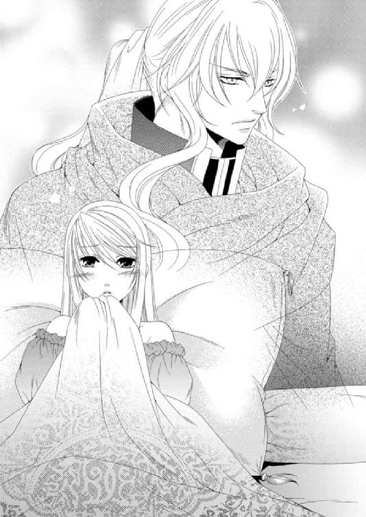
「大丈夫、大丈夫」
「大丈夫って......ルセ......」
自分の椅子をハーヴェイに譲ると、ルセリアは立ち上がり「メイ姉様、後でまた来るね」と言って、船室を出る。
二人きりにした後、ルセリアがレイやエミールとともに自分の船室に戻ろうとしているところに、グレディが慌てて階段を下りてやってきた。
「姫様、王子が先ほど甲板で倒れられて......」
「えっ......」
アルバトルが倒れた――。
これほど早くアルバトルの命が奪われるなど、ルセリアは予想もしていなかった。
まだ時間はある。それは楽観しすぎたのだろうか。
ルセリアは声を失ったまま、グレディの後を追った。
船室に駆け込むと侍医がすでに来ていたが、ただ突っ立っているだけだった。アルバトルは寝台に横たわっているのだが、まるで息をしていないかのように、静かだ。
一瞬のうちに青ざめたルセリアは、アルバトルに駆け寄る。
「アルバトル、しっかりして！」
ルセリアはアルバトルの身体を激しく揺さぶった。けれど、閉じたまぶたは開かれることなく、激しく動揺するルセリアの声以外の音は何もない。
「だめよ......まだ......そんな......だめ......だめよ！」
「姫様......」
アルバトルに取りすがるルセリアを引き離そうとするグレディの手を払い、ルセリアはただ叫んでいた。
「グレディ、離して！ アルバトルが......こんなの......だめ！」
「ああ......頼む。耳元で怒鳴るな」
ポンと頭を軽く叩かれ、ルセリアはアルバトルの胸元から顔を上げた。彼は薄目でこちらを窺っている。
ルセリアが涙目を擦って改めてアルバトルを見ると、彼は苦笑していた。
「アルバトル......しっ......死んでしまったのかと思って......私......私っ......」
「......大丈夫だ。ただの立ちくらみだ。少し眠れば......きっとよくなる......」
そうは言うものの、アルバトルの顔色は血の気が引いたように白く、いつもみなぎっている力がまるで感じられない。
確実にアルバトルの体調は悪化していて、このままでは本当に命の火が消える。
「何か、何かできないの？ お薬はないの？ ねえ、ジン......」
「姫さんや、これは守護使徒の力。我が輩たちではどうにもなりません」
助けを求めたジンは申し訳なさそうに肩をすくめていた。
アルバトルの姿に驚きすぎて、ルセリアはすっかり原因を忘れていた。
「あの......少しアルバトルと二人きりにしてくれる？」
ルセリアがそう頼むと、グレディはエミールですら外へ出るように促し、船室でアルバトルと二人きりになれた。アルバトルは自分の胸元に置かれたルセリアの手に自らの手を重ねる。いつもは温かい手が今日は少し冷たい。
「ルセリア、そう悲しい顔をするな」
「ごめんなさい、アルバトル......」
「そなたのせいではない。それに......死ぬにはまだ早い」
どれほどルセリアのせいではないと聞かされても、納得ができない。ゾフィーがアルバトルにしてしまったことは、守護使徒の主であるルセリアの責任でもあるからだ。
どうしてゾフィーはこんなことをするのか。
「......少し眠って」
ルセリアはアルバトルの隣に身体を滑り込ませ、眠った彼の頭を胸元に引き寄せ、抱きかかえる。こうして触れてわかる、アルバトルの体温の低さに、ルセリアは未だかつてない不安に襲われた。
「アルたん......死ぬのか？」
二人きりになったせいか、ナナルがそろそろと顔を出してそう言った。いつもなら笑って聞き流せるが今はその余裕はない。
「ナナル......やめて」
「ナナル......ご主人様のこと......大好き。ズンズン」
「私もよ、ナナル。だからアルバトルをどうすれば助けられるのか、知っていたら教えて欲しいの」
ルセリアの質問にナナルは沈黙し、次に現れたファンファンがおびえたように言う。
「ゾフィーが聞いてる......。ゴッホ～」
「ファンファン、あなたたちがお互いがいなければ一つになれないように、私にとってアルバトルはいなければ生きていけない人なの。なにより私が原因でアルバトルが死んでしまうようなことになったら......私は守護使徒のあなたたちを一生許さないわ」
「ごっ......ご主人様が......そっ......そんなに怒ってる理由が......ぼっ、僕にはわからないんだな」
レヴィンはアルバトルの傍らに姿を現し、困惑している。
守護使徒は時に意思の疎通が難しい。それでもルセリアは根気よく説明した。
「レヴィン。アルバトルは病気を患っているわけではないの。ゾフィーが呪いをかけたからこうなっているのよ。でも決して命を弄んではいけないの」
ルセリアの話を守護使徒たちは珍しく真剣に聞いている。理解できるかは不明だが、理解しようと努力してくれているのはルセリアにもわかった。
「貴方たちには力があるわ。とても強い力が。アルバトルだけじゃなくて、たくさんの人を簡単に殺めることができる強大な力よ。でもね......よく考えて欲しいの。私がアルバトルを失ったらどれほど悲しむのか。もし貴方たちが誰かの命を奪ったら、その人たちの家族や愛する人が悲しむことを、知って欲しいの」
「僕にはわかるかな......。ゾフィーがもう少しいい子ならいいんだけどね。うんうん」
初めて見る使徒は、うんうんと言いながら身体を上下に振っている。
長方形の平べったい身体。茶色い身体にまん丸の目が二つある。口癖なのか、うんうんといいながら身体を前後に振っていた。
ルセリアは思わずあっと声を上げていた。
「もしかして......ゴンゴン？」
「そう。はじめまして。うんうん」
「やっと会えたわね。ゴンゴン」
つるつるっとした平べったい身体を撫でると、ゴンゴンはうれしそうに目を細めた。
「......ということは、ゾフィーが起きたの？」
ルセリアが周囲を見回し、もう一度ゴンゴンに視線を戻すと、その傍らにゾフィーが立っていた。けれど、その表情はなぜか怒っている。
「ゾフィー、どうして怒っているの？」
「ずっとゴンゴンに拘束されていたからな。私が主に危害を及ぼすからという理由でだ」
ゾフィーはまるで、自分はそんなつもりなどないのに――と言いたげだったが、それ以上は口を閉ざした。
「そういえば、エスペンザは？」
「眠ってる」
守護使徒が順番に眠っているような気がするのは、偶黙なのだろうか。
だが今はアルバトルの解呪が優先だ。
ルセリアは抱えていたアルバトルの頭から手を離して身体を起こした。そのまま傍らで不満そうに唇を尖らせ、寝台に座って両足をぶらぶらさせているゾフィーの方を向く。
「......ね、お願いがあるの」
「ああ、その男にかけた〝死の口づけ〟のことか。同じことばかりでうんざりだ」
ゾフィーは相変わらずとりつく島もない。そんなゾフィーに他の守護使徒たちが騒ぎだした。
「ゾフィー意地悪ぞよ。ズンズン」
「私は意地悪ではない。私は私だ」
「噓つき、ゾフィー。だからお前は嫌われるンだ！ ゴッホ～」
「私は噓つきではない！」
ルセリアが宥めようとすると、最後はゴンゴンが呆れたように言った。
「ちょっと静かにしてくれるかな。うんうん。君たちみんなうるさいよ。うんうん」
これだけの守護使徒が揃っていてもゾフィーは自分がしたことを正そうとしないのはどうしてなのだろう。
「ゾフィー、いいこと。主は私。解呪しなさいと命令すれば、貴方はそうしなければならないはず。違う？」
「......私は他の使徒と違う」
「そうね。でもだからって私の命令が聞けないわけではないでしょう？ それとも私を困らせて楽しんでいるの？」
ルセリアがさらに突っ込んで問い詰めると、ゾフィーは目に怒りを灯して見返してきた。
「ああ、そうだ。私は......困らせるのが楽しい。人が悩んだり苦しんだりするのを見るのが好きだ。そういうことしか感じられないからだ」
「どういうこと？」
「私はエスペンザのように感じられない。彼は人に光を感じる。優しさとか愛だとか......温かいものを感じる。私......私には望んでも得られないものだ」
二人が真逆なのはルセリアにもわかっていた。けれど、ゾフィーはまるでエスペンザに嫉妬しているようだ。
そういえば姉のメイフェスが、人を苦しめることに喜びを感じることは、ゾフィーが望んだことなのかという疑問を抱いていた。今のゾフィーを見ていると、確かに自分のそういう部分を疎んでいる。なのに自分を変えられないことに腹を立てているようだ。
そもそも彼らが闇と光、四大元素に分かれているのはどうしてなのか。
「ゾフィー、貴方の希望を叶えてあげたら、貴方がかけた呪いを解いてくれる？」
「......この男に関してのみなら。他はもともとあったものを返しただけだからな」
ちらちらとルセリアの顔色を窺うように、ゾフィーは視線を向けてくる。
やはり解呪の方法があるのだ。
「何が欲しいの？」
「......愛の詰まった温かいものが欲しい」
「たとえば......どういったもの？」
ゾフィーはルセリアの顔をじっと見つめていたかと思うと、急に視線を落とし、左手首のブレスレットを指さした。
「これが欲しい」
「......え!? アルバトルからもらったブレスレットのこと？」
「そうだ。これが一番光ってる。私には......とても......うらやましい。温かい光を感じる」
「......」
いつも身につけて大切にしてきたブレスレット。もとはアルバトルの母、アミタの形見だ。それをゾフィーが欲しいとねだっている。
ルセリアにとって大切なものだが、このブレスレットがゾフィーの暗い心を変えるものになるのなら......。いや、大きく変えることはできなくても、少しは救いになるというのなら、ゾフィーに譲ってもいい。
なにより、アルバトルの命に勝るものはないのだから。
「いいわ。アルバトルの呪いを解いてくれるのなら、ゾフィーにあげる」
左手首からブレスレットを外してルセリアはゾフィーに差し出した。ゾフィーはそれを手に取ると、子供が初めて誕生日の贈り物を手にしたような無邪気な笑顔を浮かべた。いつも冷笑や嘲笑しか見せなかったゾフィーの笑顔にルセリアも驚きを隠せない。
ブレスレットはゆっくりとゾフィーの手の中に沈み、あっという間に消えていった。ゾフィーはしばらく堪能するかのように目を閉じていたが、ゆっくりと目を開けた。
ルセリアが期待を込めてゾフィーを見つめていたが、彼女は首を左右に振る。
「私だけではだめだ。みんなにも温かいものが必要だ」
ゾフィーがそう言うと、突然守護使徒たちがざわめきだした。
「ナナル......これが欲しいぞよ。ズンズン」
アルバトルが身につけている金の首飾りにナナルが飛びつき、引っ張った。
さすがのアルバトルも目を覚まし、いきなり首飾りを引っ張るナナルに驚く。
ビアランでは赤ん坊が生まれたとき、両親が金の装飾品を贈る習慣がある。人の想いが籠もったものに守護使徒たちが反応することから、ナナルが引っ張っているネックレスは両親からの贈り物なのだろう。
「......なっ......なんだ......首が絞まる......」
「オイラもこれが欲しい......！」
ファンファンも同じものに興味を示して首飾りを引っ張るため、アルバトルの首が絞まり、ますます顔が青ざめる。
「おっ......お前たち、俺を今、殺す気か!?」
「待って。待ちなさい。私がお願いしてみるから、首飾りを引っ張らないで！」
ルセリアが慌てて守護使徒を引き離すと、アルバトルは首を押さえながら身体を起こし、まるで獲物を狙うかのように自分の周りに集合した守護使徒たちに困惑していた。
「一体......どうした？ 俺を食おうとでもいうのか？」
ルセリアはアルバトルにゾフィーの求めるものを説明した。アルバトルは怪訝な顔をしつつも、首飾りを外してナナルの前に置く。
「これは俺が生まれたときに父がくれたものの一つ。いいだろう。ナナル、お前にくれてやる」
「アルたん......大好き～！ ズンズン」
首飾りを手にしたナナルはアルバトルにキスをしようとして、払いのけられていた。が、ナナルは機嫌よくファンファンたちに見せびらかすようにして首飾りをゾフィーと同じように自分の身体に取り込んで、恍惚とした表情を見せた。
彼らはアクセサリーを身につけるというより、自分と同化させている。
「他にもあるが......」
「一人、一つだ。一番大切なものは一人に一つ。二つはない」
ゾフィーがそう言うと、贈り物をもらえなかったファンファンやレヴィンが文句を言い始めた。
「では、欲しいものを身につけている者を連れてくるといい。俺が許す」
アルバトルの言葉に、ファンファンとレヴィン、ゴンゴンが姿を消した。彼らは欲しいものを探しに行ったようだ。
「......ごめんなさい、アルバトル。私のブレスレット、ゾフィーにあげてしまって。大切なものだったのに」
「大切なものだから奴らにとって価値があるのかもしれない。俺は許す。母も許してくれる」
「私にとって本当に大切なのは......アルバトル、貴方だけ。それ以外ならなんだって私は差し出すわ」
「ルセリア......」
アルバトルの手がそっとルセリアの頰を撫で、肩に掛かる髪を愛おしげに撫でる。呪いに囚われていても、アルバトルの漆黒の瞳に浮かぶ情熱の炎だけは決して揺らがない。
その輝きを目にすると、うっとりとしてしまう。
あとほんの少しで唇が触れるまでの距離にアルバトルを感じて目を閉じたが、グレディの声によってすぐさま飛びのく。
「王子、どういうことなのでしょう。ゴンゴンが私にしがみついて離れないのです」
見ればグレディの首の後ろにゴンゴンが張り付いて、これが欲しいと呟いている。その隣にエミールがファンファンを抱きかかえて立っていた。
「すみません、あの......私も......ファンファンが......」
「僕もだ」
あまり表情のないレイがレヴィンを頭の上に載せて困惑している。
ルセリアはゾフィーが望んでいたことをみんなに話して、協力して欲しいと頼んだ。
「これは......両親のいなかった私にアミタ様がくださったもの。大切なものですが、王子を救うためなら、お譲りしますよ」
グレディは二の腕の金の飾りを外し、ゴンゴンに手渡した。
「......満足して飽きたら、いつか返してくれたりはしませんか？」
「うんうん。無理」
ゴンゴンの返事に苦笑しているグレディの隣で、エミールが首から飾り気のないシンプルなネックレスを外していた。
「私が生まれたときに母が用意してくれたものですが、これがルセ様のお役に立つのなら喜んでファンファンに贈ります。でも......みなさんとは違って高価なものではないんです。本物の金はほんの少しで、あとは......その......それでもいいの？」
「オイラはこれがいい。きらきら光って温かい。オイラにはとてもまぶしいンだ。欲しい。欲しい。ゴッホ～」
エミールのネックレスを受け取ったファンファンは身体中を炎で燃え上がらせて喜びを表していた。
レイはレヴィンが欲しがったナイフを脚のベルトから引き抜く。
「......このナイフは......」
「おっ......お前、嫌な顔をしてる......ぼっ......僕には......くれないんだ！ ぼっ......僕はこれが欲しいのに......」
「いや......姫のためになるなら、お前に譲ろう」
レヴィンが騒いだせいか、レイは続く言葉を諦めてナイフを渡した。レヴィンは口からナイフを飲み込み、腹を叩いて喜んでいる。
「無事に終わったら知らせるわ」
ルセリアがそう言うと、グレディは心得たように、レイとエミールを部屋から連れ出した。
「あとはエスペンザだけね」
「エスペンザはもともと持っているものだ。彼には必要ない」
ゾフィーはまだ機嫌が持続しているのか、にこやかな顔でそう説明した。いつもは人の不幸ばかり願うゾフィーがブレスレット一つでこんなにも変化するなんて、驚きだ。
だからこそルセリアの期待が高まった。
「アルバトルを助けてくれるわよね？」
「私ではない。リスティアがこの男を助けてくれるだろう」
ゾフィーだけでなく、他の守護使徒たちも姿を消して、ルセリアの中へと戻っていった。
すぐさまゾフィーが解呪してくれると思っていたルセリアは耳を疑ったが、彼女が消えてしまったのでは仕方がない。
「リスティア......いるの？ ねえ、いたら出てきて......」
『まだ終わっていない......』
睡眠を邪魔されて不機嫌に目覚めたように、リスティアは悪態をつきつつ、ゆっくりとルセリアの中で形取られる。
「ゾフィーが約束してくれたわ。アルバトルを解呪してくれるって。リスティア、貴方が解呪してくれるって。お願い、もうできないなんて、言わないで。アルバトルを助けて......」
『......ああ、とても......温かい。今ならできるだろう』
「貴方に身体をゆだねるわ、リスティア......」
リスティアがアルバトルを助けてくれる――。
ルセリアは彼女に自分の身体の主導権を渡した。リスティアはすんなりとルセリアの身体を支配し、アルバトルの顔を見下ろす。
「お前が味わっているのは、人を恨み苦しんだ者の苦痛の塊。その癒やされず冷たく固まったものを溶かすには、これが必要だった」
「リスティア......か」
「ああ、そうだ。受け取るといい......お前は、助かる」
ルセリアはリスティアを通してアルバトルを見つめていた。それは不思議な感覚だった。
みぞおちの下が熱い塊で満たされている。丸く、そして柔らかい。身体中を温めてくれるその塊に、人が込めた無償の愛情を感じた。
これは......贈り物に込められていた愛の塊――。
ルセリアはなぜゾフィーがルセリアのブレスレットを欲しがったのかわかった気がした。守護使徒たちがどうして様々な人から贈り物を欲しがったのか。
「ルセリア......」
「私はリスティアだ」
リスティアがアルバトルに顔を近づけると、彼は困惑した表情を浮かべていた。ルセリアでありながらルセリアではない者との口づけに、戸惑いがあるのかもしれない。そんなアルバトルがルセリアはうれしかった。
一方、リスティアはなんの感情もなくアルバトルと口づけを交わす。薄い布を通して触れたような唇の感触が、ルセリアにも伝わりいつもより甘い気がする。さらに深く唇が交わった瞬間、ルセリアがみぞおちに感じていたものが、喉を通って彼の中へと落ちていった。同時に、それを失ったルセリアはとても寂しい気持ちになっていた。
「......っ」
我に返ると、すでにリスティアは消えていた。慌てて傍らのアルバトルを確かめると、彼は眠りについている。
「アルバトル？」
小声で呼びかけ彼の額に手の平を当てる。かねてからあった微熱は感じられず、冷えていた身体にも温もりが戻っていた。なにより穏やかな彼の寝顔から、死の呪いが解けたのだろうとルセリアは確信する。
「......ありがとう、リスティア。守護使徒のみんなも......ありがとう」
ルセリアは感謝で胸をいっぱいにしながらアルバトルの額や頰に何度も触れては、涙をぬぐう。そんなルセリアの様子をそっと窺うグレディの視線に気づいた。
「姫様......すっ......すみません。覗きなど......」
「グレディ......みんなのおかげでアルバトルはもう大丈夫よ。ありがとう......」
「おっ......王子が......よかっ......」
今にもその場にくずおれそうなグレディだったが、取り乱した自分に気がついたのか、すぐさま軽く咳払いを一つして頭を下げる。
「......失礼しました。朝までそれほどありませんが、それまでお休みください。何かありましたらいつでもお声がけくださいね」
「ええ。お休みなさい......グレディ」
ルセリアはアルバトルの寝顔を見つめながら彼が助かったことがあまりにもうれしくて、結局、朝までまんじりともせず夜を明かした。ビアランの船は来た航路を戻り、シシアの沖を通り抜け、まだ薄暗い早朝にトーレスの港町に到着した。地理的にはシシアの北にあたり、他国へ向かう街道が連なる場所だ。
南には、西から北に延びるシェマダン山脈があり、そこを越えて北へ向かうとビアランの国土へと入る。
アルバトルの呪いが解けて命の期限の心配はなくなった。次はネディアを見つけること。そのためにネディアと深い関わりを持つニノキアになら、その情報があるのではないかとアルバトルは考え、向かうことにしたのだ。
本来、ニノキアへはシシア神国を通り抜ける方が近いが、今はまず無理だろう。危険を回避するならばビアラン側からシェマダン山脈を越えて向かうのがいいのだが、この場所からでは遠すぎる。そのためシシアとビアランの間に位置するトーレスの港町からニノキアに向かうことになったのだ。この港は大国に挟まれつつも戦にはまだ巻き込まれていなかった。ただ静かで人々の活気は炎が消えたように失われている。
そこに行けば答えがあるのかどうか、確信はない。まるで濃霧の中を歩き回っているようにも思えるが、晴れた霧の向こうに答えがあるのだとただ信じるしかないのだろう。
朝にはすっかり体調が戻ったアルバトルは、ルセリアが驚くほど朝食を食べた。昨夜まで最悪の気分だったらしいが、今はどんなことでも可能と思われるほどの活力に満ちているとアルバトルは上機嫌だ。
ルセリアは、アルバトルが目覚めると、真っ先に彼が解呪されたことを伝えた。ところが、彼はとても喜んでくれるとばかり思っていたのに、意外にも「そうか」とだけ告げた。
死の呪いから解放されたというのにどうしてそんなにもあっさりしているのだと、ルセリアには拍子抜けだったが、後からグレディに「王子は姫様の手厚い看護を気に入っておられましたので......」の一言にあっけにとられたのは言うまでもない。
アルバトルと、これからも一緒にいられる。
ルセリアにとって、それ以上にうれしいことはない。
「このまま薄闇に紛れてマルフォーネに向かうつもりだが、先発のディナンたちが途中で状況報告を届けてくれることになっている。仮にシシアの兵士があふれていたら、マルフォーネには立ち寄らずに迂回してニノキアに向かう。現在のところはそれほど悪化していないようだが、襲ってくる者がいれば、躊躇せず倒せ」
アルバトルは船から降ろした馬にまたがり、同行させる兵士たちにそう命令した。みな緊張の面持ちで手綱を持ち、身を引き締める。
「マルフォーネへ」
アルバトルの合図にみな馬にまたがった。ルセリアも同じように馬に乗ってアルバトルの斜め後ろを進む。
空気はほんのり冷たく、薄闇にカンテラの光だけが浮かぶ。
「アルバトル......マルフォーネがシシアの兵士であふれていたらどうする？」
「迂回するだけだ」
「そ......そうね」
「なんだ？」
「ううん。なんでもない」
今の不安をアルバトルに打ち明けていいのか悩んでいると、ディナンたちからの手紙を携えた山鳩が頭上から下りてきた。
アルバトルは腕に止まった山鳩の足に付けられた金属の筒を開け、中から丸まった羊皮紙を取り出した。
「ディナンからの連絡だ。マルフォーネは安全のようだぞ」
「よかった......」
アルバトルはこちらの無事も知らせるために、金属の筒に小さな葉っぱを丸めて詰めて、山鳩を空へと放した。
ディナンたちのもとへ戻っていく山鳩をしばらく眺めながら、ルセリアは小さなため息をついた。そんなルセリアにアルバトルが気づいたようだった。
「気分が優れないのか？」
「......ううん」
「そんな顔をしていないぞ。何かあったのか？ あるなら話せ」
問い詰められたルセリアは胸に宿していた不安をアルバトルに吐き出すことにした。
「アルバトル、私......お父様に会うのが怖いの」
略奪同然でルセリアはビアランにきたが、今は正式にアルバトルの婚約者となったことなどはすでに親書を送って知らせている。けれど養父であることは直接打ち明けられたわけではないため、再会に不安を抱いていたのだ。
「俺からの親書もすでに送ってある。そなたはただ、俺を夫となるべき者だと紹介すればいい。マルフォーネなどという小国の王に、俺が躊躇すると思っているのか？」
「そういう問題じゃないんだけど......」
アルバトルは確かに大人になったし、以前のように頭ごなしに怒鳴ることも減った。
けれど大国を治める一族がたいていそうであるように、自分たちより小さな国を見下す傾向がある。これは幼い頃からそう育てられているためか、ルセリアが意見してもその不快さを理解してもらえないのだろう。
「だいたいそなたの父ではないだろう。ただの育ての親だ」
「いいえ。ただの育ての親じゃないわ。私にとって大切なお父様なのよ。両親はずっとメイ姉様と分け隔てなく育ててくれたし、感謝しているの」
マルフォーネの両親は実の子ではないという事実をルセリアに気づかせることなく、大切に育ててくれた。そのことをルセリアは心から感謝しているのだ。
「あっ......ここを抜けたらマルフォーネよ」
森の出口で、頭上高く弓形に交差するひときわ大きな木々を抜けると視界が開け、街へと向かう石畳が現れた。
垂れ込めた雲間から漏れる僅かな早朝の光が、なだらかに下る道の輪郭をかたどり、ほんのりと輝いている。道の先を目で追うと野草で庭を飾った小さな家がいくつも並ぶ。さらに道の先は小高い丘になっていて、石造りの城が建っていた。
「アルバトル......見て......マルフォーネよ」
「相変わらず国とは思えん規模だな」
「ちょっと、アルバトル！」
本人は無自覚で感想を述べているだけなのだろうが、ここはルセリアにとって故郷とも呼べる国だ。もう少し言い様があるだろう。
「なんだ」
「こぢんまりとして可愛い建物が多いとか、おとぎ話に出てくるようなお城だとか......もっと例え様があるはずよ」
「......そなたは時々、変なことにこだわるな」
「こっ......こだわりとは違うわよ」
本当にアルバトルは繊細さが足りない。だからこそ一国の王が務まるのかもしれないが。
ルセリアたちはさらに道を急ぎ、城の跳ね橋に到着すると、連絡がきちんと伝わっていたようで、マルフォーネの数少ない兵士や召使いたちに迎えられた。
「ルセリア姫......ルセリア姫！ お帰りなさい」
「ありがとう」
城の広間で最初は驚いたものの、すぐさま落ち着きを取り戻す。そしてやっとルセリアが一番心配していたメイフェスを彼女自身が望んだであろう場所で療養させられることに安堵していた。メイフェスの方も懐かしい故郷に戻れたことがよほどうれしかったのか、担架に横たわりながらも、ずっと笑顔を浮かべている。
「メイフェス姫のことも伺っております。すでに侍医を待機させておりますので、侍従長にお任せください。王はニノキアの使者よりもたらされたビアランの親書について、昨夜遅くからずっと大臣と協議されております。すみ次第ご挨拶をと。それまではみな様に少しお休みいただくようにと申しつかっております」
「ありがとう」
「メイフェスお嬢様！」
担架で運ばれようとしていたメイフェスのもとへよく知る人物が名を呼びながら駆け寄ってきた。
マルフォーネの侍女長ネリーだ。シシア神国でもずっとメイフェスの側にいたはずだが、そういえば国を出るとき彼女の姿はなかった。混乱のさなかだったので、ルセリアもすっかりネリーのことを忘れていたが無事に国へ戻っていたようだ。
面長ですっきりした顔立ちに、どこか取り澄ました表情。髪を頭の後ろでひとまとめにして、背に木の棒が入っているのではないかと思うほど、姿勢がいい。そういう隙のないネリーがこれ以上ないほど取り乱している。
「ルセリアお嬢様、どうしてこのようなことに。あんなにもお美しかったメイフェスお嬢様が......このような......」
まるですべての原因がルセリアにあるかのようなネリーの視線。確かにそうなのだが、ルセリアは彼女の視線がいたたまれなかった。そんなルセリアを庇おうと声を荒らげようとするアルバトルを抑え、ルセリアはネリーに謝った。
「ごめんなさい、ネリー。メイ姉様のことよろしくお願いします」
メイフェスをネリーに任せ、ルセリアたちはそれぞれ部屋へと案内される予定だったが、その前にノヴェイヤ王に呼ばれて、ルセリアとアルバトルは会議の間へと向かった。
養父との再会を危惧していたルセリアだが、ノヴェイヤ王は心からルセリアとの再会を喜び、夫となるアルバトルを歓迎してくれた。養子となった話はニノキアのマハーク王が話してくれていた通りで、かねてから二人目が欲しかったノヴェイヤ王にとっては、喜ばしいことだったのだと。
ルセリアの杞憂はノヴェイヤ王のそんな愛情深い話によってすべて消え去った。もっといろいろ話をしたかったが、アルバトルと二人で話がしたいという養父の願いに、ルセリアは先に自分の部屋へ戻ることにした。
「懐かしい......」
一国の姫の部屋にしてはとても狭く、ビアランとは違ってきらびやかとはほど遠い調度品の数。彫りや絵すら施されていない寝台など何もかもに愛着があった。
ルセリアは楽なドレスに着替えてから、バルコニーにある椅子に座って、エミールが用意してくれた茶を飲んだ。
バルコニーから眺めるマルフォーネの街並みは、以前と全く変わらない。ここは時間が止まった場所。昔から何も変わらない、変えない人たちが、日々同じ暮らしを繰り返す場所なのだ。
そこへ、不思議そうな顔をしたグレディがやってきた。
「王子には内密で......とレイから聞いてまいりましたが......どうされましたか？」
「アルバトルのことなの」
「王子がいかがされたのです？」
ルセリアはグレディに向かい側の椅子に座るよう促し、エミールが彼にも茶を用意する。
従者であるグレディが珍しく椅子に座るのを見届けてから、ルセリアは口を開いた。
「私は......アルバトルを心から愛しています」
「ええ。存じておりますよ」
「これからグレディにお願いすることを、拒否しないって約束してくれる？」
眉根を寄せて、グレディはルセリアの瞳を見つめる。
「内容によりますが......」
「約束してくれないと、話せないわ」
ルセリアがきっぱりとそう告げると、グレディはしばらく杯の縁を指先で撫で、思案していた。が、やがて小さく頷いた。
「わかりました。お約束いたします」
「もしものときは......アルバトルを私から引き離して、彼を守って欲しいの」
「......姫様」
驚くグレディにルセリアは微笑んだ。
「リスティアが過去を繰り返そうとしているのなら......アルバトルの身が危険になる」
「姫様、それは......」
「もちろん、私もそうならないよう何か方法を探すつもりだし、アルバトルも一緒にネディアを見つけ出そうとしてくれている。ぎりぎりまでそうするつもりよ」
アルバトルは諦めないだろう。ルセリアだってそうだ。
だからといってアルバトルを失いたくない。いや、愛する者だけでなく肉体まで失うことになったジンのように、決してなって欲しくないのだ。
ルセリアが助からなくても、アルバトルには生きていて欲しい。
「私は......アルバトルが大切なの。心から愛しているわ。貴方にとっても大切な人のはず。だから......お願い。もしものときは......」
「わかりました、姫様。私は姫様のように力はございませんが、王子を必ずお守りいたします」
「ありがとう、グレディ」
ルセリアが真剣に頼んだせいか、グレディも神妙な面持ちで頷き返す。
ほっと胸を撫でおろして喜んでいるルセリアに、グレディは言葉を続けた。
「......ですが、姫様。これだけは心に留め置きください。王子にとって姫様こそが愛の源。失われてはならない存在なのです」
グレディはそう言って、部屋から出て行った。
私にとってもそうよ――。
ルセリアはそう告げたかったが、言葉を飲み込んだ。
アルバトルの命はもう脅かされていない。ただ一つ、ルセリアの存在以外には。
どんなことがあってもルセリアはアルバトルに生きていて欲しいし、決してジンやカルソーニのように過去をくり返すためだけに生き長らえるような目に遭って欲しくない。
「やあやあやあ、姫さんや......。いいですかな、すべてを一人で背負い込むんじゃないですよ」
「ジン......」
グレディが座っていた椅子にジンは座るふりをして腰を下ろしている。ジンは不安で心が押しつぶされそうになっていたルセリアに力強く頷いた。
「我が輩がこの身を賭して、姫さんを全力でお助けしますよ」
「ありがとう、ジン」
「ネディアの歴代の王は非常に慈悲深く、賢いことで有名でしたよ。我が輩の記憶が正しければ......ですがね。だからこそ血縁である姫さんの命を脅かすような運命へと送り出すことはどう考えてもありえないんですよ。きっと何かもっと大きな意味があるはず。我が輩たちがまだ見つけられないだけ」
ネディアの王がたとえ悲しみに誤った判断をしたとしても、それは過去だ。
今の王が助けてくれる可能性だってないわけではない。ルセリアは様々な希望を抱いては、胸に浮かぶ不安を抑えようとしている。
「そうね......その答えを早く見つけなくては......」
「リスティアが何か知っていればいいんですがね」
ルセリアはリスティアのこともそうだが、別のことも気になっていた。
守護使徒が六つ揃ってから、どういうわけか順番に彼らが眠っているのだ。休んでいるのとは違う。ルセリアが呼んでも決して起きることのない、眠り。
人のいう眠りはとらない守護使徒たちの行動が、ルセリアは気になっていたのだ。
「ねえ、ジン。守護使徒たちが順番に眠るのって意味があるのかしら？ いつもは呼べば起きるんだけど、全員揃ってからは一人か二人起きない状態......っていえばわかってもらえるかしら。もちろんリスティアは全員が起きているときにしか出てこないんだけれど......」
「七番目の使徒が慣れるまで多少時間がかかるのは我が輩も知っておるが、呼んでも眠っている状態というのは......初めてかもしれん」
ジンは顎を撫でながら、ううんとうなっている。彼にも理由がわからないようだ。
「......まさかネディアと何かの方法で交信してたりしないわよね？」
「それこそそんな話、聞いたことありませんよ」
守護使徒の誰か一人でいいからネディアと連絡を取れたらいいのだが、彼らにそういう力はないようだ。
いや、あってもリスティアの目的達成の邪魔になるため、あえて知らないふりをしている可能性もある。ルセリアの中にいても守護使徒たちは謎が多いのだ。そして何ができて何ができないのかもすべて判明しているわけでもない。
「守護使徒って......一体どういう存在なの？」
「彼らは王の古い友人だと聞かされてきたし、みなにもそう説明されておったよ。決して武器や兵器だとはおっしゃらんかった」
「なんだか守護使徒を人みたいに言うのね」
ルセリアも守護使徒を友達みたいに思っているが、王はもっと人間的に扱っているように聞こえて驚いていた。
「そうだなあ......王は幼き頃は六つの守護使徒たちとともに遊びリスティアを親友とする。彼らはそんな王のためにネディアを守り、民を富ませた」
「私も守護使徒たちとそうありたいわ......」
「なれるはずだよ、姫さんや。守護使徒たちは主に従う。主の死の瞬間まで......忠実に」
「ジン......」
守護使徒はどこから来たのだろうか。彼らはどうしてこんなにも強大な力を持っているのか。いつかわかる日がくるのだろうか。
「おうおうおう、お客さんだ。失礼するかね......」
ジンがにんまりしつつ席を離れるので、ルセリアが顔を上げると、ハーヴェイがこちらへやってくるのが見えた。
彼は仮面をつけていたが、満面の笑みを浮かべていることがわかった。
「ルセリア姫、私の母もこちらでお世話をしていただける手配をしてくださり、ありがとうございます」
ルセリアたちはハーヴェイの母であり、シシア神国の王妃でもあるキアーナも船に乗せ、マルフォーネに連れてきていたのだ。
シシアではキアーナは相当酷い状況だった。それを気にかけているようでなにもしなかった弟に、兄であるハーヴェイは任せておけず、洞穴でアルバトルとサイファスがもめている間にキアーナを連れ出していたのだ。
「私もハーヴェイにはとてもお世話になっているもの。キアーナ王妃には元気になっていただきたいわ」
「母も感謝していると思います......」
「あ、座ってください。エミールにお茶の用意を......」
ハーヴェイはルセリアの誘いを断るように首を左右に振った。
「いえ、お気遣いなく。私は弟の問題を片付けるため、シシアに戻ろうと思います」
「今のシシアはとても危険だと聞いているわ。それにサイファス王子とは......」
〝二身同一の楔〟という魔術によって、互いの身体が繋がっていてどちらとも手を出せない――。
そう続けて言いそうになる言葉を飲み込む。
ハーヴェイはバルコニーの手すりに肘を置き、小さなため息をついた。ルセリアも椅子から腰を上げて真横に立つ。
「......暴走している弟を止めなくてはならない。私にはその責任がある」
「ハーヴェイ......」
見上げた先にある彼の横顔は、仮面に隠されているにもかかわらず綺麗で、そして切ない。
かける言葉を失っていると、ルセリアの傍らに人の気配がして、腰に手が回された。驚いて振り返ろうとしたところにアルバトルの声が落ちてきた。
「邪魔だったか」
「えっ、まさか！ びっくりした。驚かさないでよ」
ルセリアがアルバトルの手を解こうとしたが、余計に引き寄せられる。
諦めてハーヴェイの方を向くと、彼は笑っていた。
「では、アルバトル王子、ルセリア姫。私はこれで失礼させていただきますね。またお目にかかれるのを楽しみにしております」
ハーヴェイは軽く頭を下げると、去って行った。彼がマルフォーネまで来たのは、自分の母が無事に保護された場所を確認し、安心してから行動に移りたかったのだろう。
「ハーヴェイはサイファスを追ったか？」
「ええ」
「そうか」
アルバトルはルセリアに覆い被さるようにして抱きしめてくる。
彼の温もりを背に感じながら、ルセリアは回されているアルバトルの腕を摑んで苦笑した。
「別れのキスなどしていないだろうな」
「アルバトルって......ハーヴェイのこと何か誤解していない？」
「......誤解はしていない」
意味深な言葉を問おうとしたが、アルバトルが話題を変えてきた。
「そういえば白い薔薇の咲く湖はまだあるようだな。あの辺りか」
アルバトルはバルコニーから顔をひょいと覗かせるように、城の背後にある湖を眺めた。
森林に囲まれている湖だから、はっきりと確認はできないものの、小さな白い花が咲いているのが枝葉の間から覗いている。
「変わってないわ......あのときのまま」
「あそこでそなたと出会った......」
アルバトルは懐かしい目をしているが、ルセリアはふとあることを思い出し、今なら聞けるかもしれないと思い切って口にした。
「私......あの場所でとても怖いことを貴方から聞いた記憶があるの」
湖で出会った少年。
彼はいつもルセリアが来るのを湖の畔で待っていて、薔薇を摘み終わるまで、側にいた。
フードを目深に被った少年は聞いても決して名乗らず、またルセリアの質問にも一切答えることがなかった。それでも毎日会っているうちに、いつしか手紙を交わすようになった。
ある日、少年はルセリアにこう囁いた。
「ルセリアにだけ僕の秘密を教えてあげる」
「秘密？」
「誰にも言わないと約束して」
「うん。わかった。誰にも言わない」
「――――！」
ルセリアは耳元で囁かれた言葉を聞いた途端、少年が引き留める声を無視し、走って逃げたのだ。何を聞かされたのか覚えていないが、とても怖かった記憶がある。
その少年というのはアルバトルなのだが。
「ああ......そのことは俺も少し前に思い出した。確か......そなたに耳打ちしたな。『俺は母を殺した』と」
「そう......その言葉よ......思い出したわ。そう、そう言ったわ。私......あんまり怖くて忘れようって決めたの。貴方に会ったことだけ覚えておこうって」
あまりの出来事に、ルセリアの中でいい思い出と怖い思い出が同時に存在していたのだ。
「俺は母の死の理由を知らなかった。ついこの間、グレディに聞くまでは。だが......もしかするとどこかで真実を聞いていて、自分が母を殺したのだというあまりの衝撃にその事実をそなたに告げた後、封印したのかもしれん。もっとも......当時のことはずいぶん曖昧になっているから、本当にそうだったのかは、わからんが」
記憶を探るように遠い目をしたアルバトルはそう言うと、ルセリアの頰にキスを落としてくる。そのまま首筋に唇を走らせようとするので、足を踏んづけた。
「......っ。だが、そなたは、妙な夢を見ても実行するんじゃないぞ。俺は母の決断を尊重するが、もし物事をきちんと判断できる大人であれば、母を止めていた。必ずな」
ルセリアが頷いていると、グレディがうれしい知らせを持ってやってきた。
「ノヴェイヤ王がお二人をお呼びです。昼食をご一緒したいとのことですよ」
「ゆっくりお父様に会えるわ......」
ルセリアはようやく養父と話ができる時間が得られたことに、満面の笑みを浮かべた。
マルフォーネの召使いに案内されて、ルセリアはノヴェイヤ王が待つ広間に案内された。
そこで食事を摂りながら、これまでのことをできる範囲で話した。ノヴェイヤ王はゆっくりとうなずきながら、ルセリアの話を聞いてくれた。
そして、ようやくルセリアはノヴェイヤ王の口から自分が養女であることを告げられ、そこに至る事情を聞いた。
血の繋がりはなくとも、ルセリアにとって養父母は本当の両親に等しい存在であって、メイフェスは大切な姉だ。
食事を終える頃、伝えておかなければならない話はすべて終えていた。
「ルセリアに話すことがある。実はエリスが亡くなる前に漏らしていたことをふと思い出してな。私ももうずっと忘れていたことだったんだが......」
ノヴェイヤはそう言い、傍らにいる召使いに何かを耳打ちすると、彼は隣の部屋に姿を消した。しばらくして召使いが絵を持って戻ってくると、それらを卓の上に置いた。
「ニノキアからお前を連れて戻ってきたエリスは、一緒に絵を持っていたんだ。いつかお前に見せなければならないと言って。お前の本当の両親のことなのかどうかまではわからないのだが......」
絵は三枚あった。二枚が別々の人物画。もう一枚は風景画だった。
そのうち、寄り添うように描かれたその人物に、ルセリアは見覚えがあった。
妻を失い失意の中でリスティアに人間を滅ぼせと命令した王だ。当時描かれたものだというのならもっと古くてもおかしくないはずなのに、絵は昨日描かれたように新しい。
「これ......キイナとリスティアの記憶の中にあった......過去のネディアの王と王妃の肖像画だわ。こっちの都市の絵はネディア」
「これが......王と王妃なのか」
アルバトルは興味深げに絵を見つめている。
すると二人の会話を聞いていたノヴェイヤ王が、突然驚くべきことを口にした。
「お前がネディアの王だという絵画の男性は、ニノキアを最初に建国した者だとエリスから聞いているよ」
「えっ!? ......どういうことなのかしら。だって私が見たネディアの王はこの方なのよ」
「ニノキアはネディアから逃れてきた者が建国したと、マハーク王は言ってなかったか？」
「そうだけど......もしかするとマハーク王もそのことはご存じないのかもしれない。だって過去のネディアを記憶の中に見たのは私だけだもの」
兄弟でよく似ている人かもしれないし、見比べて確認できるほど、記憶が鮮明に残っているわけではない。
「だが、ネディアの王がどうしてニノキアを建国する必要がある？ その縁でルセリアはネディアからニノキアへ送り出されたとでもいうのか？」
「そこまでは......わからないわ......」
謎はニノキアに行けば解けるかもしれない。せめて一晩くらいはマルフォーネで過ごしたかったがそうもいかないようだ。
「ニノキアにはすぐに出発した方がよさそうだな」
「......ええ」
ルセリアたちが席を立つと、ノヴェイヤ王が近づいてきて、そっと手を握りしめてきた。
大国の王とは違い、農作業も時々こなすためか、養父の手は硬くかさかさしている。けれどルセリアは苦労を知るこの手が好きだった。
「ルセリア......気をつけてな。何かあったらここを故郷としていつでも戻ってくるんだよ。......私にはそれしかお前に言ってやれん。許してくれ」
「私にとってお父様はお父様です。ずっと......これから先も変わらない。私をお父様とお母様の娘でいさせてください」
「ルセリア......」
ノヴェイヤ王に抱きしめられたルセリアの瞳には、うっすらと涙が滲んだ。養父の匂いはアルバトルのものとは違うが、小さな頃から知っている、太陽に照らされた草の香りだった。
「ノヴェイヤ王、もしここが危険になりましたら、シェマダン山脈の関所を越えて我が国へ避難されるといい。その際はジンを通じて我が父王に任せておきます」
「アルバトル王子、申し出に感謝いたします。ですが小国とはいえ私も一国の王。国を捨てて逃げ出すことはできません」
「民を思う王ならば、民を連れて逃げることを責める者などおりません。生きてさえいれば、国はいくらでも復興できます」
こういうアルバトルを見るとルセリアは誇らしい気分になる。彼は確かに傲慢で自己中心的だが、国民を大切に思う気持ちはとても強い。
「アルバトル王子......砂漠の悪魔だと恐れられた貴方からそのような高潔な忠告をいただけるとは......。やはり娘が夫として待ち望んだことに間違いはなかったのですね」
ノヴェイヤ王はルセリアを見下ろしながら微笑を浮かべていた。が、ルセリアはアルバトルが『砂漠の悪魔』と呼ばれていたことなどもうすっかり忘れていた。
ほんのりと漂っていた和やかな雰囲気は、急な兵士の報告によって、一気に霧散した。
「王、大変です。恐ろしいほどの数の兵を引き連れたシシアのサイファス王子が、王ではなくルセリア姫にお目にかかりたいと強く希望されております」
「ルセリアに!?」
「その返答いかんでシシアは我が国の対応を決めるとのことです」
ノヴェイヤ王が問う前にルセリアが「お会いするわ。サイファス王子をご案内してください」と答えた。が、アルバトルは不快な表情を隠さない。
「ルセリア......やめておけ」
「ううん。私には守護使徒がいるもの。それに......サイファス王子も自分がカルソーニに利用されていたことを知るべきだと思う」
それでサイファスが道を誤っていることに気づいてくれたら、きっと今の状況はよくなるとルセリアは信じていたのだ。
「知っていて利用されている可能性もあるだろう？」
「でもサイファス王子は人々が争うことは望んでいなかったはず」
「そなたがそこまで言うのなら......仕方がない。ただし、俺も同席のうえだ」
「もちろんよ」
ノヴェイヤ王だけでなく、一番の問題だったアルバトルの許可を得て、ルセリアはサイファスに会うことになった。
万全の警備を整えた広間でルセリアはサイファスと会うことになった。ただサイファスがノヴェイヤ王と謁見するつもりがまるでなかったこともあって、広間にマルフォーネの関係者は誰一人として入室することを拒まれた。
もとより小国のマルフォーネ側が強く意見できなかったという理由もある。
部屋にはアルバトルとグレディ、レイにエミール、ビアランの兵士が四人でルセリアを守っていた。
ルセリアがアルバトルとともにサイファスを迎えると、彼は憔悴した顔に笑顔を浮かべて広間に入ってきた。
「ルセリア姫......ずっとお目にかかりたかった......」
「サイファス王子」
以前憔悴していたときとは違い、明らかに痩せている。目の下にはくまが浮かんでいて、しばらく十分な睡眠がとれていないことがわかった。
ルセリアは驚きつつもそれを言葉にして心配してみせるつもりはない。
「カルソーニの姿はないんですね」
「ええ。私を裏切って姿を消しましたよ。私は守護使徒を巡り人々が争うことなど望んでいなかった。ですが、カルは違ったのです」
すでにサイファスはカルソーニの裏切りを知っているようで、憤りを隠せない表情でそう呟いた。
アルバトルはルセリアの傍らに座っているが、サイファスに声をかけようともせず油断なく見張っている。
当然といえば当然のことだろう。
だいたい、あれほどのことがあって、何もなかったように話がしたい会いたいと言えるのは、アルバトルには理解できないようだった。もちろんルセリアもだが。
「私もそんなことなど望んでいないわ」
「残念ながら......私にはこれだけの規模の争いを止める力はありません。ですが自国と、姫のいらっしゃるマルフォーネくらいはお守りできるだろうと、兵士を連れてまいったのです」
「兵士はこの国を守るためお連れになったというの？」
サイファスは頷く。
「私はただ......ルセリア姫を花嫁として迎え、ともに生きることを望んでいただけなのです。守護使徒など......不要だった」
「サイファス王子......」
サイファスの一途な想いを否定したくはないが、ルセリアには受け入れられない。それをどうにかして理解して欲しいのだが、サイファスはいつまでもルセリアにこだわり、他に目を向けようとしないのだ。
「そうですね。姫が選んだのはアルバトル王子。私ではない」
「......ごめんなさい」
何も言えずにただ謝罪をすると、サイファスは悲しそうな顔をした。そんなサイファスに苛立ったのか、アルバトルが腹立たしげに言う。
「サイファス王子、話はそれで終わりか？ ならお帰り願おう」
「急がせないでください、アルバトル王子。もう一つ、大切な用事があったのです」
「......なんの用です？」
二人の口論が激化するのではないかと考えていたルセリアだったが、ふいに身体の中で守護使徒が一つになっていく感覚が伝わってきた。
リスティアだ――。
「待って......今は......だめ......」
「ルセリア？」
「リスティアが......」
まだルセリアはリスティアを制御できない。リスティアの方も不安定でルセリアがだめだと言っても、出てきてしまう。
リスティアはルセリアから身体の主導権を奪い、ため息交じりに呟いた。
「ようやくすべてを知り終えた」
「姫？」
サイファスは様子の変わったルセリアを見つめていた。サイファスから順に、リスティアは部屋にいる人間を確認していく。
「私はリスティア。見たことのない人間がいるな......」
『リスティア、お願い。今はだめなの』
ルセリアは主導権を返してもらおうとしたが、彼女にその気はないようだ。
「準備は整った。私は私の目的を果たす。だがここは......目的の地ではないようだな」
リスティアがそう言い終えるのと同時に、光が部屋いっぱいに満ちて、何も見えなくなった。主導権を奪われていてもリスティアを通してルセリアも目を刺すほどの輝きに、めまいを覚える。
しばらくしてゆっくりと視界が戻ってくると、まだ霞んで目は見えないものの、状況を把握しようと努めた。すると、波の音が聞こえてきた。
海......海が近いの――？
ルセリアは嵐のまっただ中で大きく揺れる船に乗っているように、ゆらゆらと揺れながら立っていた。
「ここはどこだ――！」
アルバトルの声にルセリアはようやく周囲を確認することができた。
見ると広間の一部とそこにいた人間すべてがここに連れてこられていた。リスティアの移動に巻き込まれたようだが、床が左右に揺れているのは、驚くべきことに先ほどまでそこにあった場所の全てが天井を失った状態で荒れた海に浮かんでいるからだった。
広間の床部分だけでなく、暖炉から延びる煙突まで移動していた。さらにその背後にあった塔までも引きはがしてきたかのように浮かんでいる。
まるで海上にそそり立つ塔だ。
ルセリアはその塔の上に立っていて、壁にらせん状についた階段の真ん中あたりにサイファスがいた。アルバトルを探すと彼は階段の一番下にいてなにかを叫んでいる。
みなが混乱するなかでただ一人、ここで待っていたカルソーニがうれしそうにルセリア――リスティアに近づいてくる。
「始まりの地へやはり戻ってきたね、リスティア」
「ええ」
「カル！ お前は......私を裏切ったばかりか、私の姫まで操ろうとしているのか!?」
状況を理解できていないサイファスは、リスティアの手を取るカルソーニに怒りの形相を向けていた。サイファスからするとルセリアの手を取っているように見えるのだろう。
「貴方の姫ではありませんよ。なんと可哀想な王子。貴方には同情いたしますが、私にも大切な約束と目的があったのです」
「カル！ 私はお前を信じてきた。幼い頃からずっと私の側にいて、力を貸してくれた。カルだけが私の親友でありよき理解者であったはず。他の誰も信頼できない私にとってお前だけが頼るべき者だった。なのにお前は......私を裏切ったばかりか、私の姫まで奪おうとしているのか!?」
剣を振り上げて向かってくるサイファスをカルソーニが手を上げて吹き飛ばす。彼は階段の中腹まで転げ落ちた。
『リスティア......やめて』
「私は王の命令を......ようやく完遂することができる」
満足そうなリスティアは両手を広げて天を仰ぎ見る。彼女は目覚めた瞬間からこれまで、過去に下された命令を遂行するために守護使徒の力を集結させようとしていたのだ。
この世界から人間を排除しようと、ただそれだけのために。
リスティア、やめて――！
ルセリアが心の中で絶叫を上げた。
ここはもう過去の場所であるべきなのだ。過去の命に囚われている人間はみな解放されてもいいはず。王はもういない。
リスティアを煽っているカルソーニを止めようとジンが必死に説得しようとしているのが見える。けれどリスティアがルセリアの言葉に耳を貸さないように、カルソーニもジンの言葉などまるで聞いていない。
お願いリスティア......やめて！
今にもすべてが消え去るだろうという恐れと必死に戦いながら、ルセリアは再び懇願した。
――しかし。
その瞬間はいつまで経ってもやってこなかった。
心の中で閉じていた目を開いて、ルセリアはリスティアを呼ぶ。
『......リスティア？』
「......」
「リスティア......どうした？」
カルソーニの問いかけにも答えず、リスティアは静かに佇んでいた。
カルソーニが我が目を疑うようにふらふらと近づいてくる。
そんなカルソーニに一瞥もくれず、リスティアは髪をほんの少しなびかせ、目の前に広がる静かな海をじっと見つめている。
ルセリアはリスティアと同じものを目にしているはずなのに、彼女が何を見ようとしているのか、どこに視線を合わせているのかまるでわからなかった。
いや、リスティア自身はなにも目に映していなかったのかもしれない。その穏やかさ、静けさにカルソーニだけでなくルセリアも驚いたほどだ。
一体、何が起こったのだろうか。
それともまだ始まっていないだけで、すべてはこれからなのだろうか。
「王のもう一つの命により、私はこの世界からまだ人間を排除しないことにした」
『もう一つの......命って......何？』
「それは王に問うべきことで私から説明することではない。今後は現在の主の命にすべて従う」
突然命令を翻したリスティアに対し、ジンはほっとため息をもらしたが、一番、この結果を受け入れることのできないカルソーニが呆然と立ち尽くしている。
「リスティア......それはどういうことなのだ？ 私たちの約束は......」
「カル......ごめんなさい。私はすべきことを終えたわ」
「今日のこの終わりの日のために、私はあらゆる手を使って準備をしてきた。リスティア......君が滞りなくすべてを行えるように。なのに......何もせずに、終わってしまうのか？」
カルソーニはすがるような目を向け、リスティアの両手を握りしめる。痛いほど摑まれているのに、ルセリアはまだ主導権を取り戻せていない。
「愛しているわ......カル。でも感謝はしても、貴方のために私ができることは何もない」
「私たちが一緒になるにはこの方法しかないというのに......何もしないと言うのか。リスティア......それは......あまりにも残酷だ」
カルソーニの手が離れていくのと同時に、その悲しみをあまり理解できないことに悲しんでいるリスティアの痛みを、ルセリアは感じていた。
リスティアはカルソーニをとても大切な人だと考えている。そこには彼女なりの愛があるのだが、カルソーニが抱く愛とは違うのかもしれない。けれど彼らが互いを思いやっているのがルセリアには感じられる。相手を気遣い、大切に思う感情がリスティアにもちゃんとある。
けれどそんな二人の姿に誤解したままのサイファスが、必死の形相で近づいてきた。
「......私を利用したのはそのためか」
「......貴方に私の苦悩などわかりはしない」
カルソーニはサイファスに向かってそう吐き捨てる。
彼らになんと声をかけたらいいのかわからず、ルセリアが戸惑っていると、「ルセリア！」という叫び声と「リスティア！」という声が同時に響いた。ルセリアは、サイファスのもとに強引に引き寄せられていた。
「姫......我が手に入らないのなら、他の誰にも渡さない。それが私が出した結論です」
何かに取り憑かれたようなサイファスを見上げながら、下腹部に鋭い痛みを感じた。何が起きたのか理解できずに、ドレスを鮮血に染めながら、ルセリアは意識を失った。
それはほんの一瞬だった。
側にいるアルバトルの味方であるジンですらカルソーニに気を取られ、無防備になっていた。
アルバトルはサイファスの動きには気をつけていたのに、彼はいつの間にか塔を登り切っていた。そして突然暴走を止め、ぼんやりと立ち尽くすばかりのリスティア――ルセリアの腰に手を回したかと思うと、自らに引き寄せていた。
「サイファス！」
彼にだけは触れさせない。サイファスにだけは近づけてはならない。アルバトルの頭にはそればかり繰り返されている。すぐさま彼女を取り戻すために駆けた。
あと少し。やっと彼らと同じ場所へたどり着いた。あとはルセリアをサイファスやカルソーニから奪い返すのだ。
手を伸ばして摑めるほどの距離だった。なのに先にルセリアを引き寄せたのはサイファスだった。
そのサイファスが無理やりルセリアの唇を奪った。次の瞬間、彼の手がルセリアの腰に回り、さらに引き寄せるのを目にしたのだ。ただそれだけだったはず。なのにルセリアの脇腹は血に染まっていて、流れ続ける命の源が、白いドレスを赤く変えていく。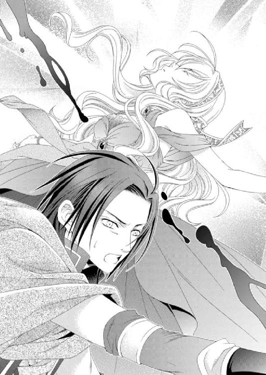
「サイファス、貴様......っ！」
アルバトルが剣を構えて斬りかかろうとしたが、サイファスはルセリアを抱えたまま、塔の手すりに飛び乗った。手すりの幅はそれほど広くない。しかもその向こうは海だ。落下することになれば、まず助からないだろう。
アルバトルは今すぐ刺し殺してやるという怒りを抑え、不安定な手すりに立つサイファスを刺激しないよう、距離を取る。
「貴方がうらやましい、アルバトル王子。望まれてこの世に生まれ、愛する人に出会った。まさに完璧な人生。一つくらい欠けても、私の人生より恵まれていますよ......」
「戯言など聞きたくない。そこから下りてルセリアを離せ。死にたくば一人で逝けっ！」
「幸せな者は不幸な者の恨みを聞く義務があると思うのですよ、王子。ささやかな幸せの一つすら手に入れることができなかった私の不幸を、貴方は知るべきだ」
サイファスは長い金髪を風に揺らしながら、すべてを手に入れたような微笑を浮かべている。
「心は得られなかったが、亡骸は私のものだ」
そう続けた彼の名を呼ぶ者がいた。
「サイファス！」
響いた声にアルバトルが振り返ると、サイファスと同じ顔のハーヴェイが立っていた。彼は短剣を手に持ち弟を睨み付ける。サイファスは兄の登場に驚くことなく、至極満足そうに笑っていた。
弟のあとを追っていたハーヴェイも、リスティアの移動に巻き込まれていたのだろう。
「......兄上、もう遅いですよ」
「お前をそんなふうにしてしまったのは父や母だけのせいではない。弟の置かれた状況が普通ではないことに気づくのが遅かった私にも責任がある」
そう言い放ったハーヴェイは、短剣の先を自らに向けて両手で持った。
「だからといってお前のことをこれ以上放置するわけにはいかない......」
彼の目には迷いもなければ、恐怖も浮かんでいない。
「......何を言ってるんです？」
「私たちは本来一人として生まれてくるべきだった。だから......白紙に戻そう」
ハーヴェイは目に涙を浮かべながら、剣を持った手を振り上げ、次の瞬間、自らの胸を貫いた。赤い血はじわじわと衣服を染めていき、彼は膝を突いて座り込む。
一方、サイファスは自らの胸から吹き出る血に驚愕した表情でハーヴェイを見つめ、何かを言おうと口を動かした。が、彼の口からは血があふれ、言葉にならない。
腕に抱くルセリアに視線を戻したサイファスは、切なく目を細める。
このままルセリアとともに死ぬ気か――!?
「サイファス！ ルセリアを本当に愛しているというのなら......連れていかないでくれ。頼む！ ルセリアから生きる喜びを奪わないでやってくれ！」
アルバトルの言葉が届いたのかどうかわからないが、サイファスはルセリアを足下へ横たえ、愛おしそうに彼女の頰を撫でた後、突然きびすを返し、手すりの向こう側へと落ちていった。
「ハーヴェイ！」
アルバトルは自分より背後にいたグレディを呼び寄せる。
「グレディ、ハーヴェイを頼む」
「はい、王子」
グレディにハーヴェイを託すと、アルバトルは塔の手すりの前で横たわるルセリアのもとへと駆け寄った。
「ルセリアっ！ しっかりしろ......。ジン、ジンはどこにいるんだ!?」
ルセリアを抱えたまま周囲を見回すと、塔の下にジンとカルソーニの姿を見つけた。ジンはカルソーニを止めようとしていたようだが、ルセリアの血を見て呆然としていた。が、アルバトルの声にようやく戻ってくる。
だが、本来、このような状況に一番、腹を立てそうなカルソーニはまるで状況を見守るようにただ佇んでいる。そのことにアルバトルは嫌な予感が胸をよぎったが、今はルセリアの傷をなんとかしなければならない。
「すっ......すまん。我が輩が......我が輩の失態だ。このようなことを許すなど......」
「謝罪などなんの助けにもならん。それよりお前の力でルセリアだけでももとの場所へ戻せないか？」
「おうおうおう......そうしてやりたいんだが......ここからでは遠すぎる」
アルバトルはドレスを血に染めたルセリアの傷口を押さえた。もう片方の手で外套を脱ぎルセリアを包む。
「とにかく姫さんの意識を今すぐ戻さなければならん。主が深手を負い命が脅かされると、守護使徒を制御できずにリスティアは暴走する」
「暴走......とはなんだ？」
「過去、キイナとリスティアが主導権を争ったときに起こった力の暴走だ」
だからカルソーニは何をするわけでもなく佇んでいたのだ。
自らの望んだ結末が訪れることを知っていたから。
だが、暴走してどうなるのか――。
「ルセリア......しっかりしろ。目を覚ますんだ」
頰を軽く叩いてみたが、ルセリアのまぶたは固く閉ざされたままだ。それでもあきらめずに声を上げて名を呼ぶと、ようやく重いまぶたが開かれる。
「私は......リスティアだ」
リスティアは青い瞳を怒りで燃やしながら立ち上がる。アルバトルの手を払い、両手を振り上げて何かを呟いた。
すると、上空に巨大な蜂の巣のような黒雲がわき上がり、海上の塔を取り巻くように海水がせり上がって渦を巻き始めた。アルバトルたちのいる場所のみ避けるように、大粒の雨が降りだしそれらは次第に嵐へと変わっていく。
空を覆う雲を縫うように稲妻が走り、風は海水をも巻き込んで円を描くように空へと上っていった。
「......何をしようとしている？」
「主を守るためだ。主に害なす人間など不要」
リスティアは冷酷な表情をしていて、ルセリアの面影はどこにも見られない。
しかも彼女の澄んだ海のような青い瞳が、今はなぜか真っ赤に染まっており、彼女のドレスを染める血と同じだけ鮮烈だった。
「リスティア、よすんだ。ルセリアの身体がもたなっ......！」
アルバトルはルセリアの身体を引き寄せようとしたが、グレディによって引き離される。
「王子！ 姫様に近づいてはなりません！」
「グレディ!?」
驚くべきグレディの行動に、アルバトルは一瞬、我が目を疑う。
「私は姫様より頼まれておりました。もしものときは姫様から王子を引き離すようにと」
「こんなときに何を言ってる。今すぐ守護使徒の繋がりを解かなくては、俺たちは全員死ぬだけだぞ！」
なんとかグレディの拘束を解こうとしたが、彼も恐ろしいほどの力でアルバトルの腕を摑み、強引にその場から引きはがそうとする。
「坊ちゃま。姫様は王子に二度と過去の過ちを犯させてはいけないと強く望まれておりました。ジンがしたように、王子がリスティアから使徒を引きはがそうとされたら、過去を繰り返すことになります。姫はそれを望んでおられないのです」
「お前はルセリアに虐殺の手伝いをさせる気か！」
「たとえどのような結果になろうと私は姫様の望みを叶えます」
「このままリスティアが暴走すれば俺たちはみなどうせ滅ぼされてしまうぞ！」
グレディはようやくアルバトルの言葉に耳を傾け、引きずるのをやめた。が、まだ拘束は続いている。
「いいか、グレディ。俺は死ぬつもりなどない。お前の命も......他の誰の命もリスティアに奪われるつもりはない！」
「......坊ちゃま」
グレディは我に返ったような表情で拘束を解き、申し訳なさそうに肩をすくめた。彼の気持ちもルセリアの望みも理解したが、それとアルバトルが望む未来は違う。
カルソーニのように何もせず過去を繰り返すだけの選択など絶対にしない――。
「ジン、肉体のないお前ならルセリアの側に行けるはずだ」
「肉体がなくてもリスティアは我が輩を近づけさせんよ。リスティアにとって我が輩は裏切り者ですからなあ」
「ならば俺の身体に入って、あそこまで誘導してくれ」
「王子！ それだけはいけません。ジンに身体を貸すのは私が......」
グレディの提案をジンは却下した。
「いや。もし今のリスティアに近づける者がいるとすれば、アルバトルしかいないだろう。アルバトルは姫さんにとって愛する者だからなあ。リスティアが油断するとしたらそこしかない」
「......王子」
「この程度のことを切り抜けられぬ者が、ビアランの王になどなれはしない。俺はここでくたばるような弱い男ではない。俺を信じろ、グレディ」
アルバトルが不敵な笑みを浮かべて堂々とそう告げると、グレディは不安を吹き飛ばした目を向け、しっかりと頷いた。
「ジン、頼むぞ」
そう言うと、ジンは背後からアルバトルの身体に重なった。自分の中にもう一人存在する感覚は初めてのことだが、グレディから聞いていたような違和感より、今は心強く感じる。
『ああ。我が輩はわかった気がするんだ。どうしてこんな肉体のない姿で生き長らえてきたのか。匂いはわかるのに、食事は摂れない。何かに触れたくても誰かの身体を借りなければならないこの惨めな姿の意味を』
「どういうことだ」
『我が輩は今日この日に必要であったからこそ、今まで生かされたのだとな』
アルバトルの中でジンは満足そうに話している。彼がどれほど長い時間、愛する者を失い、肉体までも失って生き長らえてきたのかを思うと、彼の持つ陽気さはある意味奇跡なのだ。
「......ジン」
『姫さんと守護使徒の繋がりを解くには外からの強い刺激が必要だ。だが我が輩が以前やったような、手で無理やり使徒を引きはがすのは危険だ。だから、ビアランに残っている我が輩を通じてサリマエルの協力を得、我が輩の魂が宿る水晶髑髏に使徒封印の紋章を描くよう指示したぞ。姫さんは守護使徒を宿しているために、身体には紋章は刻めないだろうから、我が輩自身が使徒封印そのものになって、姫さんの中に入る。このやり方で守護使徒すべてを封印することは望めんが、内側から強い衝撃を与えて繋がりを解くくらいはできるだろう』
ジンは内側から守護使徒の結束を解くつもりなのだ。
上手くいけば繋がりが解けてリスティアは消え、六つの守護使徒たちに戻る。そうすればリスティアの暴走は止まり、ルセリア自身を治癒の力をもつエスペンザが癒やすだろう。
「だが......ジン。そんなことをすれば今度こそお前は......」
『いえいえいえ。何を失おうとアルバトルと姫さんをお守りしますよ』
ジンは陽気で、どこか安心しているようにも思えた。
アルバトルにはなぜかその意味がわかるような気がした。肉体を失い、生きるために必要な感覚を奪われたまま生き長らえることが、本当はどれほど困難であるかを想像すれば......。
「リスティア！ 話がある。少しでいい、話をさせてくれ！」
アルバトルは風の音に負けないように声を張り上げて名を呼んだが、まるで反応がない。
「聞こえていないのか？」
『守護使徒はすべての力を使っているとき、一種の瞑想状態になる。だが、危険だと思われる人間は近づくこともできないのに、ここまで近づけるということは、リスティアのなかにいる姫さんはアルバトルに気づいているのだろう』
「ならいいがな。......っ」
アルバトルはリスティアが巻き起こす強風に吹き飛ばされないよう、地面を這う。できるだけ体勢を低くしているが、気を抜けばあっという間に風にさらわれ、そのまま荒れた海へ投げ出されるだろう。
ルセリア、戻ってこい――。
アルバトルはゆっくりと、だが、確実にルセリアに近づいていた。
意外なことに、近づくまでは顔も上げられないほど大変だったが、徐々にはじき飛ばそうとする勢いは弱まり、ルセリアの側まで来る頃には、中腰で歩けるようになっていた。ルセリアがアルバトルに気づき、助けを求めているのかもしれない。
リスティアに支配され、ドレスを血に染めながらも、ルセリアは神々しい。それでもこの状態が長く続かないこともアルバトルにはわかっていた。
『思ったとおり、アルバトルならば姫さんに近づけるな』
アルバトルの中にいるジンがほっとしたように呟いた。
ルセリアの意識すべてをリスティアが支配しているわけではないのだろう。声には出せないが、この暴走を止めてほしいと願っているはず。
「ルセリア......俺だ。目を覚ましてくれ......」
ようやくアルバトルはルセリアの前に立ち、彼女の頰を両手で温めるように包んだ。赤い瞳は何も映していないが、アルバトルが優しく何度も名を呼ぶうちに、息を吹き返したように目を瞬いた。
「私の邪魔をするな。たとえ主の想い人であろうと、目前から消す――」
しかしリスティアが言い終わらないうちに、アルバトルはルセリアの唇を塞いだ。柔らかいその感触があまりにも愛おしくて、アルバトルは深くルセリアへの想いを込めて唇を合わせた。
この私に触れるな――！
リスティアが怒り、叫ぶように身もだえると同時に、アルバトルの身体が炎に包まれた。不思議と熱くはなく、まるでルセリアと一つになっているような錯覚を覚える。
ゆっくりと唇を離すとルセリアがアルバトルの瞳をじっと見つめていることに気づいた。身体は拒絶しているが瞳の中の彼女は受け入れてくれているのがわかる。
たとえこの身が燃え尽きようと、ルセリアと一緒にいられるのなら、いい――。
リスティアの力によって水や炎、嵐や岩といったものが混ざり合って作られる巨大な渦の中心に二人で立っていた。これに飲み込まれたら人間はひとたまりもないだろう。
それでもアルバトルは生死より、この手にルセリアを取り戻すことだけを考えていた。
ジン、頼む――。
中にいたジンがルセリアへと移動する。遠くからカルソーニの叫び声が耳に届いた。
「よせ......リスティアの邪魔をするな！」
『カル、我が輩たちの旅を終わりにしよう......』
ジンの声が内側から響き、ルセリアの身体が真っ白な光に包まれる。彼女のみぞおちの下あたりからいくつもの声が聞こえて今にもはじけそうに思えた。
アルバトルはルセリアの身体が手の中から消えないようにと、しっかりと抱きしめた。口の中に塩の味がしてルセリアは目を覚ました。
最初に目にしたのは自分のむき出しの腕。身体は身長の半分くらいの木片に摑まって海を漂っている。どうしてここに浮かんでいるのかすぐには思い出せなかったが、自分を守るように背後から覆い被さる温かな感触に思わず顔を綻ばせた。
ルセリアはアルバトルが海へと落ちないよう、体勢を代え、彼の腰に腕を回す。
「アルバトル......無事なの？」
閉じられた目に不安を覚えながらも、密着している身体から規則的な心臓の鼓動が伝わってきて安心する。海水に漂う彼の髪をそっと撫で上げて、怪我がないか確かめた。
「怪我は僕が治しておいたよ。もちろん真っ先に治療したのは重傷だったご主人さまだけどさ」
落ちてきた声に顔を上げると、エスペンザがアルバトルの後頭部に立っていた。
「ちょっと......どこに立って......」
「......ルセリア？」
「アルバトル！ あ、動かないで。海の上なの......」
すぐにも起き上がろうとしたアルバトルをルセリアは引き留めた。
アルバトルは起こした身体で周囲を見渡した後「そなた、怪我はどうなった？ 大丈夫なのか？」と心配そうな顔を覗かせる。
ルセリアは安心させるように「大丈夫」と頷いた。
「......一体何が......他の奴らはどうなった？」
「わからないの。気がついたら二人で海の上を漂っていたの」
空は雲一つない快晴で、周囲には真っ青な海が広がっている。見る限り陸はなく、また船もなければ、海に突き出していた塔も広間も消えていた。当然、そこにいたはずの人たちも。
「もしかして俺たちは死んだのか？」
「......えっ、まさか......でも......そうなの？」
周囲はやけに静かで、そよぐ風も感じられなかった。海水は温かく、いつまで浸かっていても心地よく過ごせるだろう。
そんな場所がこの世にあるのだとすれば......と、アルバトルは考えたようだ。が、ルセリアは同意できなかった。
「まあいい。そなたが側にいるなら、ここがどこであろうとも、いい」
「アルバトルって時々ものすごく......」
「なんだ？」
「ううん。なんでもない」
慌てたり質問攻めにされるよりはいいが、おおざっぱすぎるのもどうかとほんの少しルセリアは思っただけだ。
「アルたん、ナナルとぷかぷか～ズンズン」
「ああ、そうだな。俺の腕に乗るな」
アルバトルの二の腕に座っているナナルが楽しそうにしている。が、アルバトルは次々に現れた守護使徒の居所に、途端に不機嫌になった。
「居心地悪いな、ゴッホ～」
「だったら、俺の背中から下りろ」
ファンファンはアルバトルの背に座って、前足をなめて顔を洗っている。そんなファンファンにレヴィンが腰のところで跳ねながら言った。
「ぼっ......僕は......ここ、気に入ってる。悪くないよ」
「俺には鬱陶しくて仕方がない。肩からも下りろ。というか、頭に乗ってる奴が一番最初に下りろと言うんだ」
エスペンザが頭に乗っていることによほど腹を立てているのか、不機嫌な顔のままぶつぶつと言う。すると二人が摑まっている木片に目が浮かんだ。
「なら、君が下りるべきだな、うんうん」
「うわっ！ なんだ」
「きゃっ、もっ......もしかして......これって木片ではなくてゴンゴン......なの？」
驚いて飛び退こうとしたが、摑まることができるのは、海に浮かぶゴンゴンだけだった。
もっと小さいはずなのに、身体の大きさが自由に変えられるのか、樽のような大きさで海に浮かんでいる。
「そうだよ、うんうん」
「不気味だ......」
「不気味？ なんだぁってぇ～。うんうん」
ゴンゴンは目玉をぐるぐると身体のあちこちに移動させている。アルバトルは深いため息をついていた。
「ア、アルバトル。助けてくれてるんだから、感謝しなくちゃ」
「感謝はするが、どうして俺の身体にばかり乗ってくるんだ。そなたの守護使徒だろう？」
「アルバトルのことが大好きなのよ」
「どうだかな。とりあえず守護使徒もいることだし、陸を探させて......」
聞こえるほどのため息をついて腕を伸ばすアルバトルが、唐突に顔を上げて目を見開いた。
「どうした......の!?」
アルバトルの視線の先に人の姿が浮かんでいた。海の上に立っているのに、海水には触れていない。
フードの付いた外套を羽織る人物の顔に、ルセリアは見覚えがあった。
マルフォーネで見た三枚目の絵に描かれていた人物。それが現在のネディアの王であることをルセリアはなんとなく気づいていた。
「久しぶりだね。ルセリア」
「......もしかして......ネディアの王......様」
あごひげを生やした男は優しげに微笑んだ。魅力的な青い瞳はルセリアと同じ。
少し下がった目尻、すっきり通った鼻筋、やや肉厚な唇。ほお骨はしっかりしていて、男らしい顔立ちをしていた。
「では......私の......お父様!?」
ネディアの王はゆっくりと頷くと「ゴンゴン、私もそちらへ行ってもいいかな」と聞いた。ゴンゴンは「もちろんですとも、うんうん」と快く了承する。
王は海面を歩いてこちらへ来ると、平べったいゴンゴンの身体に乗った。ルセリアとアルバトルは、身体を伸ばして面積を広げたゴンゴンの上に座り直し、ネディアの王と対面した。
「ネディアはどこにあるのですか？」
「目をこらして海の底を見つめるといい。深い海の底に輝く都市の姿が、空いっぱいに散らばる星のように見えるはずだ」
「ネディアは......海の底にあったのか」
アルバトルは驚きの声を上げ、感嘆のため息をつく。
どれほど地上を探しても見つからないはずだ。
「とてもとても深い場所にある。守護使徒の力なしではたどり着けない場所だ」
「どうしてそんなところに......」
「この世界の人間と私たちの世界の人間は、同じ人間でありながら違うからだよ。両者はまだ交わってはならない」
「どうして？」
同じ人間のはずなのに外界と交流せずに理解し合うことはできない。どうしてネディアはそれほどまでに、人々から隔絶した場所にいるのか。
「遠い昔、守護使徒はこの世界の人間に裏切られた。強大な力を正しく使うには人は幼すぎたのだよ。当時の王は人間に落胆して滅ぼそうとしたが、ぎりぎりのところで猶予を与えることにしたようだね」
「猶予？」
「人は本当に滅ぼした方がいい存在かどうか。そう思うことはおごりなのか......。かつてネディアを海の底へと沈めた王はそう思い深く悩んだ。王妃を失った悲しみから一度は人間を排除しようと考えたものの、キイナやジンの想いが王を悩ませたのだよ」
「あの......当時の王がニノキアという国を作ったとされている方に似ているのですが、同一人物なのでしょうか」
王は大きく頷く。
ルセリアはあれほどまでに人を排除しようとしたかつてのネディアの王がどうしてニノキアを作ったのかが気になった。
「王は息子に王位とナナルを譲ると、一人で地上に戻られたのです。そこでニノキアを作り、残りの守護使徒たちを世界に放った。人の記録を取るためにね。けれど人との関わりを王は拒みニノキアの国に籠もったまま、王妃を弔っていたそうだ。そこで悩みながらも王妃を奪った者たちをどう許していいのか、やはり滅ぼすのか。亡くなるまで答えを出せなかったようだね。そしてネディアに伝言を残された。残りの人生では得られなかった答えを、遠い未来に確かめて欲しいと」
キイナとジンの気持ちを知ったかつての王は、王妃を奪った人たちを恨みながらも、どうにかして許しを探そうとしていたのかもしれない。
「それから黄金の都・ネディアの物語は口述で語られていたが、長い年月が、それらをおとぎ話にしていったんだよ」
ネディアの王はそこまで言い、間を置いてから言葉を重ねた。
「だから世界に飛び散った守護使徒たちは人の中で眠りにつきながらも、その者の人生を記憶し、また次の世代へと受け継がれていった。長い時間をかけて、人間が成長しているのかどうか記録し続けたのだよ」
守護使徒たちが欠片のまま眠りについていたのは、そういう理由だったのだ。そうして長い間彼らは自分が宿った主の一生を記録し続けていたのだ。
「そしてルセリア、お前にはナナルを宿らせ、地上へと送り出した。この世界に散らばっている守護使徒たちを集めるためにも、ネディアの血を引く者が必要だったのだよ。赤ん坊だったのは私たちからの意見を聞くことで目を曇らせて欲しくなかったからだ。王妃は反対したし、私ももちろん心配だった。が、誰かの代で王自ら我が子を送り出さねばならなかった。......許してくれ」
「では、リスティアがこの世界を滅ぼそうとせずに諦めたのは......他の守護使徒たちの記憶がそうさせたというの？」
「彼らが長い時間をかけて集めた情報をリスティアが一つにまとめ、判断した。まだそのときではないということを......ね」
リスティアが世界を滅ぼせなかったのは、守護使徒たちが得た人々の人生だけでなく、様々な経験も含まれていたのかもしれない。
ルセリアは守護使徒に強大な力を使って人を殺めてはいけないと教えてきたつもりだ。同情したり優しさを向けることも大切だと、わかってもらいたいと。
それがもしリスティアを止める要因の一つになっていたとすればうれしい。
「ネディアはこれからみんなと仲良くできるの？」
「それは......難しいだろうね。まだ......まだ時間が必要だとリスティアは判断した。滅ぼすことはしなかったようだが、ただあと一歩で彼女の暴走も歯止めがきかなかったろう。君たちの絆が、思い止まらせたんだね」
「俺からするとネディアの考え方は傲慢だ。どうして貴方方に俺たちの存続を判断されなければならない。傍観者を決め込むなら、いつまでもそうしていればいいのではないのか。思い出したように干渉されるのは不愉快だ」
アルバトルは不機嫌さを隠そうともせずに言い放つ。誰だって知らない相手に干渉されるのは不快だし腹立たしいことだろう。しかも自分たちより強大な力を持つ者たちに。
「......確かに、そうかもしれないね。けれど傍観者であったネディアに戦いを挑んだのも君たちの先祖だ。私たちだけに責任を課そうというのは不公平だと思わないかね」
ネディアの王はそういいながらもどこか寂しげな笑みを浮かべている。
「守護使徒......ってどういう存在なんですか？」
「彼らは本来私たちと同じ肉体を持っていた。進化し、人としての肉体を捨て、次の段階へと進んだ者たちなんだよ。高みに昇った人たちの中には、人と関わりたいと戻ってくる者たちもいた。それが......守護使徒と呼ばれる肉体を持たない者たちだ」
「え......」
守護使徒がもともと人間だったと聞かされて、ルセリアは衝撃を受けた。
ナナルやゴンゴンのどこを見て人間だと想像ができるというのだ。
「進化した彼らはこの世界をも動かす力の源に触れることができる。そのほんの一部を私たちの幸せのために時々貸してくれているのだよ」
「これが......人だったというのか？」
アルバトルは自分が乗っているゴンゴンを見下ろして、眉をひそめた。
「六つの存在が一つになったとき......リスティアと呼ばれる状態のときが一番人として近い。彼らは自らを六つに分けることで存在しているようだ。その理由は私たちにもわからんが、一つになったときの呼称が変わることから、大昔人だった頃『リスティア』という名前だったと推測しているよ。肉体を捨てたときに記憶が消えてしまうようで、そういうことはまるで覚えていないがね」
「ネディアには他にも守護使徒がいるの？」
「そうだよ。たくさんはいないが、彼らはみな、平和に暮らしている」
守護使徒たちが普通に世界を飛び回っている様子を想像して、ルセリアはこんな状態であるのに思わず笑ってしまった。
「これから......ネディアはどうこの世界に関わろうとしているんだ？」
「何も」
アルバトルはネディアの王を唖然として見上げていたが、しばらくすると、怒りの形相で「これだけのことをしておいて、何も、とはなんだ！」と怒鳴った。
「リスティアはこの世界から人を排除しないと決めたが、まだ強大な力を理性を持って安全に制御できるほど、人は成熟していない。そんな人々のところへ力を持ったネディアが出現すると大きな脅威となり、彼らは恐怖から武装することになる。私たちはそれを望まない」
「傍観者として干渉をしないでいてくれるということか？」
「そう。この地上の人たちが、自らの力で我らのいるネディアを訪れるだけの進歩を遂げるか、この世界で高みに昇ることのできる人たちが生まれるのを待とうと思う」
長い時をかけて、守護使徒たちはこの世界の人々の生活を記録して、リスティアに伝えた。
それでもまだ時間は足りない。いつ互いが出会い、仲良く交流できるようになるのか。
「......気の遠くなるほどの時間がかかっても？」
「そうだね。進化の差がある文化の交流はとても難しいことを私たちは学んだ。今まではこちらが歩み寄ろうとしていたが......向こうから歩み寄られるのをゆっくり待つのも必要なのだとね」
王は少し寂しげにルセリアを見下ろす。彼の目には確かに我が子に対する愛情が浮かんでいて、ルセリアも血の繋がりだけが持つ、引き合う力を感じていた。
そんなルセリアにアルバトルが気づいたようだった。
「ルセリアは......どうなる？」
「私は娘を迎えに来た。だが、一度ネディアに戻れば、二度とこちら側には戻れない。どちらの世界で生きるかの選択は......任せたいと思っている」
父と初めて会い、ルセリアの心には強い望郷の念がわき上がった。それは言葉では上手く言い表せないほど強烈なものだ。
「私......私は......お母様にも会いたい。ネディアが私の故郷だというのなら、一度は見ておきたい。どんな人たちが住んでいるのか、どんな街並みなのか。記憶の中で過去のネディアは見たけれど、この目で本当のネディアを見てみたい......」
ルセリアの言葉をアルバトルは傍らで静かに聞いていてくれた。嫉妬深い彼が反対する声を上げることもなく......。そんなアルバトルの手にルセリアはそっと指を絡めて、言葉を続けた。
「でも、私は、なによりもアルバトルとともにこの世界で生きていきたい。戻ればこちら側へ帰れないというなら......私はここに残ります」
「そう言うと思っていたよ。愛しい我が子、ルセリア。ネディアの血がこの地に残り、いつか......何世代も先の子供たちが......戻ってきてくれることを待とう。その頃には互いに理解し合えるようになっているかもしれない」
王はどこか残念そうな、けれど慈愛を込めた表情で答えた。
「守護使徒はどうなる？」
「私が持ち帰る。そのためにも来たのだよ」
守護使徒たちは誰も反対しなかったが、ただ一人、ナナルだけが王におずおずと言った。
「ナナル......ナナルは......ここにいたい。ご主人様、大好き。アルたん大好き。みんな......大好き。ズンズン」
「一度にすべてではなくて、一つの力を受け入れることから始めるのはだめなの？ 私は......ナナルにもっとたくさんのことを知ってもらいたい」
どの守護使徒も可愛くて、思い入れがある。けれどルセリアにとってナナルは最初からずっと自分の中にいた守護使徒だ。
もし許してもらえるのならナナルだけはこのまま残してもらいたい。
「もしお前やお前の力が受け入れられないとわかったら......よくないことに利用されることがあるなら、ネディアに戻ってくるといい。ナナルならそれが可能だ」
「......許してもらえるの？」
「ナナルをお前の子や孫に継承できるよう、許可しよう。もっともここから岸に向かうにも......ナナルの力が必要だったね」
確かにすべての守護使徒がルセリアの中からいなくなってしまうと、どこか分からない海の上でおぼれてしまうことになる。
水の使徒ナナルならば、ルセリアたちを安全に岸まで送り届けることができる。
「だが、いずれネディアの血が薄まり、守護使徒を宿せる資格が失われるときには......ナナルがネディアに戻らねばならない日がくるかもしれない」
「それまでには......」
「そうだね。いつかは......」
ネディアの王はルセリアをぎゅっと抱きしめた。アルバトルの抱擁とは違う。
感じるのはどこまでも大きな無償の愛。親だけが子に与えられるもの。
「お前を手放した日を今も忘れられないよ。どれほど辛い決断だったか......」
「お父様......」
「お前の母である王妃も同行したいと望んでいたが、この世界の人間に接触するのは極力禁じられているからね。決してお前を愛していないからではないよ」
「はい」
王がゆっくり離れていくのと同時に、ナナル以外の守護使徒たちの存在が消えていく。同時にゴンゴンに代わって、ナナルが水の舟を作り二人を乗せた。
どの守護使徒もルセリアにとって大切な友達だった。もう二度と彼らが戯れる姿が見られないかと思うと辛くて、悲しい。
「もう会えないンだ......ゴッホ～」
「いつかきっと会えるわ、ファンファン」
王の肩に止まって尻尾を回しながら、ファンファンはルセリアを見つめている。その隣でレヴィンが泣いていた。
「ぼっ僕......僕......ご主人様、大好きだったのに......」
「私もよ、レヴィン。......また会いましょうね」
「まだ少しも話してないのに。うんうん」
「そうね。ゴンゴン、もっとゆっくり話したかったわ」
照れているのか、ゴンゴンは顔を少し出して、姿を消した。
「いろいろ......まあ......迷惑をかけたな」
「ゾフィー。貴方のこともとても大切なのよ。闇の力は貴方にとって辛いものかもしれないけれど、貴方だって温かい気持ちを感じることができる。ゾフィーは必要な存在よ」
ルセリアの言葉にゾフィーは唇を尖らせつつも「気をつける」と言った。隣でエスペンザが大人びた顔で「また、会おう」と告げる。
「ええ。エスペンザ。会えるのを楽しみにしているわ」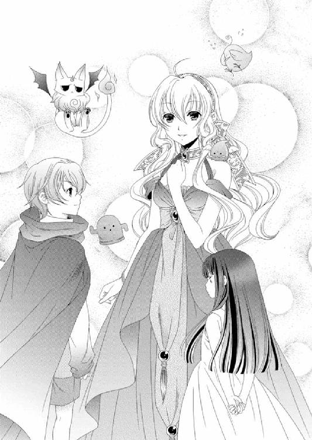
これでナナル以外の守護使徒たちはすべてネディアに帰っていく。五つの使徒だけでゾフィーの面倒を見られるのかという疑問が浮かんだが、ネディアでは彼らは安定した存在なのかもしれない。だからこそ他の守護使徒たちも普通にいて、みな仲良く暮らしているのだろう。
いつかこの世界でもそんな日がきっとくる......。
「この世界で生きていけないと絶望するようなことがあればいつでも戻ってきなさい。ナナルをお前に残すのはきっと......私が心のどこかでそういういけない期待をしているからかもしれないな」
「そんなことにはなりません。私が全力でルセリアを愛し守りますから」
アルバトルはルセリアを引き寄せて自信たっぷりにそう言った。その姿がとても格好よく見えて、ルセリアは頰を赤らめる。
「この世界も一息ついたようだな。私も帰るとしよう......」
「......え、もう？」
「ああ。あまり長居はできないんだよ」
「......はい」
「人は時間をかけてゆっくりと、だが、確実に心も身体も進化している。その道を違えないように......」
王は包容力のあるとても柔らかな笑みを浮かべており、ルセリアの心に深く刻みつけられる。誰もが彼に引き寄せられるようだった。彼に頼りたい。彼に抱きしめられたい。そんな不思議な心地よさは彼だけが持つ独特の気質なのだろう。
「今日もいい天気だ」
王が空を仰ぎ見るのにつられて、ルセリアも顔を上げた。
あんなにもどんより垂れ込めていた黒雲はすっかり消え、雲一つない真っ青な空が広がっている。海を渡る風の頰を撫でる心地よさに、自然と笑顔が浮かんだ。
「お父様......私ね......」
視線を戻したルセリアの前から、ネディアの王は消えていた。
離れていた刻を埋めるほど、一緒にはいられなかった。ゆっくり話すこともできなかった。
そしてもう二度と次はないことをルセリアは理解していた。
「......っ」
涙がこぼれる前にルセリアはアルバトルに抱きしめられていた。ルセリアは我慢できずに声を上げ、泣くことができた。
ひとしきり泣いた後、ルセリアはアルバトルに身を任せたまま、まどろんでいた。ただ、ゴンゴンはもういないので、ナナルが作ってくれた水の小舟に二人で横たわり、海を漂う。
「アルバトル......ジンやグレディ、サイファス王子にハーヴェイたちはどうなったのかしら」
「リスティアの暴走に巻き込まれていたとしたら......今頃みな集まって酒でも酌み交わしているんじゃないか？」
「真面目に聞いてるのに！ でもそれって、私......私がリスティアを暴走させてしまったからよね......」
「いっいや......そなたのせいではない。みな迎えるべくして迎えた結末だ」
本当にみんなは、リスティアの暴走に巻き込まれて命を落としてしまったのだろうか。
ルセリアはそんなふうに思いたくはなかった。けれどもし、それがただの希望的観測だったとすれば、強大な力を持つことの責任の重さをルセリアは再確認しなければならない。
「みんなに......生きていて欲しい」
ぽつりと呟くと、アルバトルは苦痛を取り除こうとでもいうように、無言でルセリアの頭を何度も撫でた。
「誰か来るぞよ、ズンズン」
小舟の舳先に座っていたナナルが空中を飛びながら喜んでいる。
「......え、誰!?」
アルバトルとともにルセリアも身体を起こし、ナナルの飛び跳ねている方向を見ると船の姿が現われた。その甲板には驚くことにグレディの姿があった。
「王子！ 姫様！」
グレディは甲板から今にも落ちそうなほど身を乗り出して、大きく手を振っていた。ほぼ一日、重い衣装を身につけたまま立ちっぱなしでルセリアは華燭の儀を終えた。
朝からアルバトルとは別々に式が進行し、昼から夜までは二人で執り行う儀式に追われた。結婚の儀は自分たちのものではなく、家のためだとよく聞かされてきたが、まさにそのとおり。
それでも、たくさんの招待客やビアランの国民に祝福される喜びは大きく、ようやく自分たちの寝室に戻ってきた今もまだ興奮が冷めやらない。
床一面にはマルフォーネの白い薔薇が敷き詰められていて、この日のために新調された寝台は彫りに彩色が施されたきらびやかなものだった。天蓋から下りる美しい布は寝台を柔らかく包む。
ルセリアは今夜最後の湯浴みを終えて、寝台に座ってアルバトルを待っていた。
「ルセ様、本当にすばらしい式でした......」
エミールが頰を染め、うっとりとした表情で言う。
「ええ。私もまだ興奮しているの......すばらしい式だったわ」
「あれからもう一ヶ月も経つのですね。なんだかまだ信じられません」
「私もよ」
海の上に残されたルセリアたちは、無事にグレディたちの乗った船に助けられた。
あの船はカリステロの船で、異常気象の原因を探るべく、近くを航行していたところ、リスティアに吹き飛ばされて海を漂っていたグレディやハーヴェイを引き上げてくれたのだ。
ハーヴェイは心臓を短刀でひと突きしたと思われていたが、驚くべきことに彼の心臓は右にあって、死の淵を彷徨ったものの、手厚い看護により回復した。
だがサイファスはどこからも見つかっていない。海の底へ沈んでいったのをレイが最後に見たそうだが、あの怪我では生存は不可能だろう。〝二身同一の楔〟がもしまだ有効なら、どこかで生きているかもしれない。
もっともジンが言うには、リスティアと重なったとき、ルセリアは気づかなかったが、ジンの行動を止めようとカルソーニが側まで来ていたそうだ。そこでリスティアがジンによって繋がりを解かれた瞬間、まばゆい光が周囲に満ちて、カルソーニの肉体を吹き飛ばしたのを見たのだという。だからハーヴェイは自分の名前を取り戻しサイファスとして、シシア神国王子の職務を果たしている。キアーナはマルフォーネで回復した後、シシア神国に戻り、息子の力になっているそうだ。
ゾフィーの操り人形になっていた王やその名代たちは、ゾフィーがこの世界から消えた頃に正気に戻り、戦をやめた。
イリディアスのクルゾンは今もサイファスの帰還を信じているらしいが、今のところ王としてまじめに復興に励んでいるようだった。アカリナ王国のジャニーンは、アルバトルとルセリアの婚儀に参列していたサリマエルを見つけて、つきまとっていたようだ。が、サリマエルはああいう女性は苦手らしい。
王たちはみなそのときの記憶がなかったことから、自分たちが悪意のある魔導師に操られたのだと判断し、その後、戦っていた相手の国と同盟を結び、協力して復興に尽力している。
ほんの少し以前とは違う日常が戻ってきたのだ。
「そういえば、改めて行われるサイファス王子とメイフェス様の婚儀の日取りは決まったのでしょうか」
「正式に招待状は届いていないけれど、決まったって姉上から聞いたわ。すごく......幸せそうよ」
「よかったですね」
「本当に......」
メイフェスが回復するまで少しの間、ハーヴェイがよく看病をしてくれていたようだ。ハーヴェイは胸に怪我を負い、重症だったのもあり、すぐにシシアには戻らずマルフォーネで養生していた。その間、今度は回復したメイフェスが看病していたらしい。二人の間に愛情が生まれるのにそう時間はかからなかったのだ。
「エミールはどうなの？ レイとちょっといい雰囲気だって聞いたけど......」
「だっ......誰ですか、そんなことを言っているの。違います。ないです。絶対、ありません！」
「そ......そうなの？」
あまりにも強く否定され、そこが余計怪しく感じるものの、ひとまず二人にはもう少し時間が必要のようだ。
だいたいレイがそういうことに無頓着なのが問題なのだろう。そんなレイは今もルセリアの傍らで警護をしてくれているが、未だニノキアの密偵かどうかは白状しない。
「おうおうおう......我が輩は感動したぞ。姫さんもアルバトルもまるで美しい絵画を見ているようだったなあ」
相変わらず壁を突き抜けて唐突に現れるジンに、ルセリアは苦笑した。
あのときアルバトルが持っていた分魂水晶は砕けて、ジンも消えるはずだったが、本体の水晶髑髏は無事だったため助かったのだ。
ジンは結局、未だにビアランの魔術防壁を担っている。きっとまだ自分には大いなる役目があって、生かされているのだ......と言って、はははと笑っている。
いつかジンの肉体を取り戻す日がきて、生まれ変わったキイナと再び出会える日が来ることを、ルセリアは願ってやまない。
「ジン、今夜はお邪魔してはなりませんよ」
「おうおうおう......。そうだったな。今夜は......初めての夜か。もうずっとアルバトルは悶々としておったからなあ。そうかそうか......邪魔な我が輩は消えるとしよう」
ジンは余計なことを口にしながら姿を消した。
「では、私も失礼させていただきますね。いい夜をお過ごしください」
「あ......ありがとう」
部屋は急に静かになった。
明かりは部屋の端や、寝台を挟むように壁に掛けられたカンテラの明かりのみ。
明るすぎず、かといって暗くもない部屋には薔薇の香りが立ちこめる。
「......」
一人になると急に恥ずかしくなって、ルセリアは毛布に潜ってみたり、やっぱり寝台の上に座ってみたりと落ち着かない。
なんとなくルセリアが寝台の上でもじもじしていると、人の気配を感じて思わず「誰っ!?」と声に出していた。
「......俺だ。何を驚いているんだ」
アルバトルは無造作にローブを脱いでカウチに放り投げると、寝台に上ってきた。なんとなく気恥ずかしくてルセリアは後じさる。
「べっ......別に......驚いてないわよ」
「......今日のそなたは格別に美しいな」
アルバトルはルセリアの頰に手をかけて、まじまじと見つめてくる。これからのことを考えるともう頭がいっぱいで、鼓動の速くなった心臓は破裂しそうだ。
「あ、アルバトルも格好よかったわ」
「そうか？」
アルバトルの手はルセリアの寝衣の肩紐を片方ずつ解いて、僅かに隠していた素肌を露わにする。恥ずかしさから肌を隠したルセリアに、アルバトルは笑いながら覆い被さってきた。
寝台に縫い止められたまま見上げると、真剣に見つめるアルバトルの瞳とルセリアの視線が交差する。彼の長い髪が肩に触れてくすぐったいのに、笑ってはいけない気がして、どうでもいいことを言葉にしてしまう。
「それで......ね、メイ姉様の......」
しかし胸元で交差した腕をやんわりと解かれ、アルバトルの唇が首筋に触れた。そのままゆっくりと胸元へと移動していく。
「あっ......アルバトル......あの......」
「もう、俺たちの時間だ」
こちらの動揺などお構いなしに、アルバトルはルセリアの肌を隅々まで愛撫しようとしている。そんなアルバトルのたくましい背に、ルセリアもおずおずと手を伸ばした。
大好き......アルバトル――。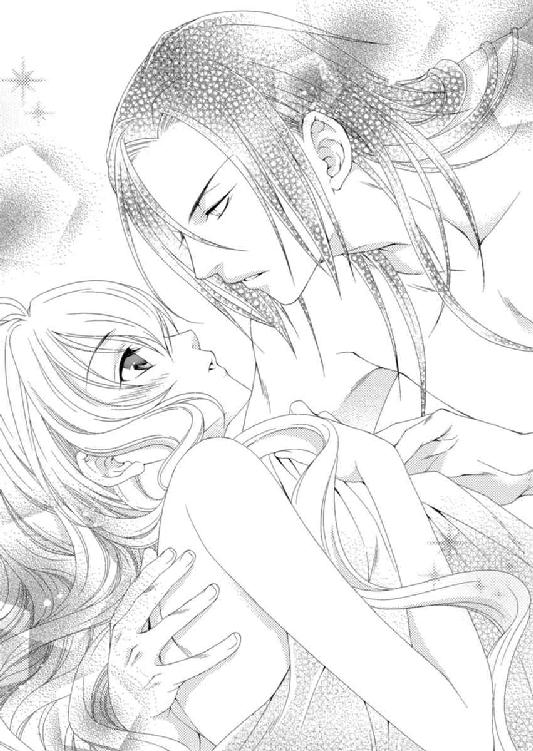
アルバトルの手がルセリアの胸に触れようとした瞬間、思わず目を閉じたが、来るべき感覚が来ない。そっと目を開けると、アルバトルはナナルをわしづかみにして、怒りまくっていた。
「......なっ......ナナル！ こんなときは寝てるはずだろうが」
「わ～ご主人様も、合体、合体！」
「合体って......なんだ!! 変な言い方をするな！」
アルバトルは真っ赤な顔で怒鳴っている。
「ナナルはもう合体相手がいないから、アルたんで我慢してやるぞよ。ズンズン」
めまいを起こしそうなナナルの言葉に、アルバトルは本気で怒っている。確かにいつも邪魔をしてくるが、ここまでとは思わなかったのだろう。
ルセリアも予想できなかった。いや、最初から休止させておくべきだった。
「ルセリア......どうにかしろ」
「......なっ、ナナル。朝まで休止していてね」
「え～楽しいことはナナルも一緒にしたい～」
「お願い、ナナル。一生のお願いだから......ね？」
ルセリアが頼み込むと、ナナルはぶつくさ言いつつも渋々姿を消して、休止状態に入った。
「夜はいつも休止させておけ。当分だ」
「......当分ね。わ、わかった」
アルバトルの手がルセリアの額にかかるオレンジがかった髪を払う。愛おしそうに見つめるアルバトルの瞳に、ルセリアも自然と笑顔になった。
「ルセリア......愛している」
「私も......アルバトルを愛しているわ」
アルバトルの腕に想いを込めるよう強く抱きしめられたルセリアは、直接触れ合う肌のあまりの心地よさに胸がいっぱいになる。
この日を迎えるのはほんの少しばかり怖かったのだが、アルバトルが触れる手は驚くほど優しく、肌に落とされる愛撫はルセリアの体温を上げていく。手はアルバトルのたくましい背をしっかり摑み、足先は敷布に皺を寄せた。
口から漏れる吐息にも熱が籠もり、夢でも見ているような気分に陥っていく。
心と身体の準備が整ったところに甘い痛みを感じ、ルセリアは小さく声を上げた。
砂漠を越えてやってきた熱を含む風が肌を撫でたような気がして、ルセリアは目を覚ました。
薄い毛布にくるまれた身体からは、まだ昨夜の熱は冷めない。
アルバトルの腕の中でくつろぎながら、彼を見上げる。すると彼の黒い瞳と目が合って、驚いた。
「おっ......起きていたの？」
「ああ。そなたの満足げな顔を眺めていた」
にんまり笑うアルバトルにルセリアは耳まで顔を赤く染める。
少し残る痛みはルセリアがアルバトルと本当の意味で夫婦になったことを教えてくれた。
「朝日が昇ったところだ。もっとも砂漠が美しい景色を見せる時間だ。見に行こうか」
「......え......あ、でも......まだ、着替えて......」
「ローブを軽く羽織ればいい」
アルバトルはそう言うと、寝台の脇に置かれた腰掛けに用意されていたローブを手に取ってルセリアに差し出す。
まだここでまどろんでいたかったルセリアだったが、それでも身体を起こしてローブを羽織った。
アルバトルもローブを無造作に羽織ると、ルセリアを抱えて寝台を下りた。
「自分で歩けるわ」
「そう強がるな」
相変わらず機嫌のいい笑みを浮かべたままアルバトルはそう言い、階段を上がって二階のバルコニーへと向かった。
シハーブの街並みの輪郭が金色に縁取られていて、その向こうに延々と広がる砂漠が、砂金を集めたかのように朝日を受けて輝いている。
こんなにも美しい景色をルセリアは見たことがなかった。
「......本当に......綺麗......」
「俺はいずれこの国を治める王となる。傍らにはいつもそなたがいて、俺を支えて欲しい」
「私にそんな立派なことができるかどうか分からないけど......精いっぱい努力する」
抱き上げられたままルセリアはアルバトルの肩に凭れ、ビアランの美しい朝焼けを眺めていた。遠くからワームの咆哮も聞こえてくる。これから徐々に日差しが強くなり、太陽は素肌を焼くほど熱くなるのだ。
アルバトルの情熱と同じだけ、ビアランは暑い国だ。ルセリアの身も心も熱くする。
「ああ、そうだ。そなたに贈り物があった」
「え？」
ルセリアはそっと下ろされると、アルバトルはエミールを呼んで何かを持ってこさせた。
エミールから包みを受け取り、アルバトルは包みを開く。そこには細やかな細工が施され、金色に輝くブレスレットが現れた。
「これ......これは......」
「そなたの左手首にブレスレットがないと寂しいと思ってな、新しく作らせておいた。俺と揃いだ」
アルバトルはそう言い、ルセリアの左腕にブレスレットをはめた。よく見るとアルバトルはすでに左手首に同じ細工の金のブレスレットをはめていた。
昔、アルバトルから贈られ、大切にしてきたブレスレットはゾフィーに譲った。それからずっといつもあった重みが失われた左手首が寂しかったのだ。
「ありがとう、アルバトル。本当に......うれしい」
涙を浮かべながらそう口にしたルセリアの唇にアルバトルの唇が重なり、ゆっくりと離れる。
ルセリアは無言でアルバトルに身を寄せて、またビアランの街並みを眺めた。
この先、また様々な問題に直面するだろう。けれど愛するアルバトルとともにあれば、今までと同じように、乗り越えていくことができるはず。
「アルバトル......」
ルセリアの手が、アルバトルの指と交わり、ゆっくりと握りしめられる。繋いだ手はもう離れることはない。
たとえ離れることがあっても、また繋げばいいだけなのだ。
これからも......ずっと――。
ＥＮＤ．
はじめましての方も以前からご存じの方も、こんにちは、あすかと申します。
今回で砂漠は七冊目、そして最終刊となります。
一冊目を書く段階で物語の土台をどの程度作るのかすごく悩みました。あまりにも大きく作ると回収できなくなるし、逆に小さく作ると巻を重ねるごとに後付けが増えて辻褄が合わなくなる不安が。でも最初の担当さんに「大丈夫、先を考えずやってみましょう！」と言っていただき、迷いを吹っ切ってスタートした砂漠です。楽しんでいただけたでしょうか。
こんなにも長くシリーズを書かせていただけたことは初めてで、書きながらも様々なことを勉強した作品となりました。次の作品に生かせるようにしたいです。
応援してくださったファンの皆様、本当にありがとうございました。皆様の応援がなければ最後まで書ききることはできませんでした。
イラストの由貴海里さま。ときには厳しいスケジュールの中でもいつもすばらしい絵をつけてくださりました。心から感謝しております。本当にありがとうございました。
担当様、どんなときでも笑って「大丈夫」と私を励ましてくださったことを忘れません。
また、この作品に関わってくださった校正さんデザイナーさん他、皆様に改めてお礼の言葉を。皆様のおかげでようやくラストを迎えることができました。ありがとうございました。
伏線はすべて回収、謎もすべて明らかにした今は思い残すことなくすっきりした気分で、砂漠の最終刊を皆様にお届けできることを、嬉しく思います。そしてなにより安堵しております。本当に最後まで書かせていただけて......ありがとうございました。
そして長々引っ張ってしまったファンレターにお返しする小冊子の件。ようやく手をつけておりますので、もうしばらくお待ちくださいね。とくに期限はございませんので、読んでみたいと思われた方はご感想と80円切手を同封の上、編集部までお送りくださいね。ご感想のない方には申し訳ありませんが情報ペーパーのみのお返しとなっております。
次はどんなお話にしようか......あれもこれも書きたいお話が多くて困っています。新作が店頭に並ぶ日がまいりましたら、またぜひおつきあいくださいね。
この作品を少しでも楽しんで頂けたことを心から願いつつ、また皆様にお会いできることを楽しみにしています。
ここまで読んでくださって本当にありがとうございました。
あすか
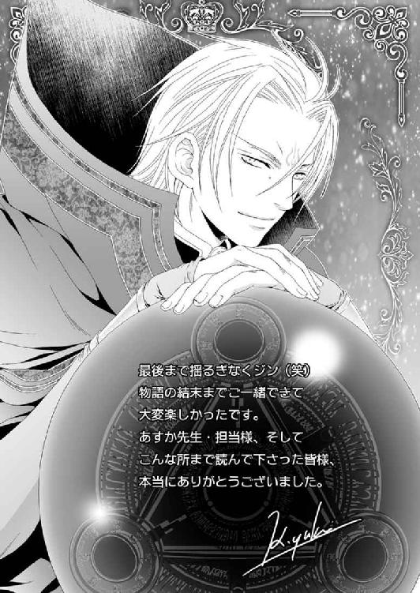
電子版 ビーズログ文庫
砂漠の薔薇と海の星
砂漠の王子は愛を誓う
著者／あすか
イラスト／由貴海里
2013年8月29日電子版ver.1.0発行
2015年2月28日電子版ver.1.1発行
発行人 青柳昌行
発行 株式会社KADOKAWA
〒102-8177 東京都千代田区富士見2-13-3
電話 0570-060-555（ナビダイヤル）
http://www.kadokawa.co.jp
企画・制作 エンターブレイン
デザイン 行成公江
(c)2012 Asuka
本電子書籍はビーズログ文庫『砂漠の薔薇と海の星 砂漠の王子は愛を誓う』（2012年2月27日発行 初刷）を元にして制作しております。